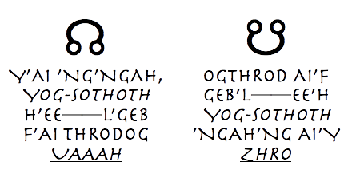
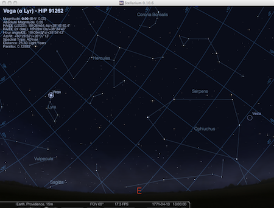
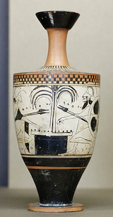
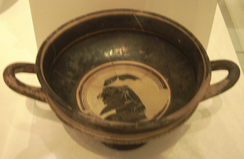
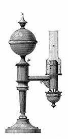

「獣類の本質を成す塩類を然るべく用意し保存する時には、発明の才に恵まれた者は、その研究室にノアの方舟の全体を設置し、思うがままに、獣の灰から精巧なる元来の姿を召喚することができる。哲人も、死せる先祖の姿を、人類の塵の本質を成す塩類を用いる同様な方法によって、違法な降霊術によらずともその遺体を焼いた灰から呼び出すことができる。」
――ボレルス
I. 結末と序曲
１
ロードアイランド州プロヴィデンス近くの私立精神病院から、最近、他に類を見ない人物が消失した。その名をチャールズ・デクスター・ウォードといい、大いに意に沿わないことながら、彼の逸脱行為が単なる奇行から暗黒の偏執狂へと移行するのを見て悲嘆する父親によって、同院に拘束されていた。その偏執狂ぶりは、殺人的傾向と、精神の内容におけるあからさまに奇妙な変化とを含んでいた。異常は心理的な性格のみならず一般的な生理学的変化にも及んでおり、医師たちは、この症例に当惑し切っていると漏らしていたのである。第一に、患者は二十六歳にしては年長に見えすぎた。精神疾患は確かに人を早く老け込ませる。しかしこの青年の顔には、どことなく、ふつう大変な高齢者のみが獲得する表情があった。第二に、臓器機能において医学上経験のないほどの奇矯な不均衡があった。呼吸と心臓の動作は奇妙に対称性を欠いていた。消化機能は信じられないほど遅延し最小限に落ち込んでおり、標準的な刺激に対する神経系の反応には、これまで知られた正常なあるいは病理的な記録の中で、似通ったものが全くなかった。皮膚は病的に冷えて乾き、組織の細胞構造は異様に粗雑で弛緩しているようだった。右臀部にあった大きなオリーブ色の母斑すら消え、一方で胸に、これまで全く存在しなかった奇妙な黒子ないし黒斑が現れた。総じて、ウォードの代謝機能が前例のないほど遅延していることに医師全員が同意した。
心理学的にも、チャールズ・ウォードは独特だった。最新かつ最も網羅的な文献を調べても彼の狂気に類似したものはなく、異様かつグロテスクな形に歪んでいなければ彼を天才や指導者にしたであろう精神の力と結びついていた。ウォードかかりつけの家庭医であるウィレット医師は、狂気以外の領域での事物に関する反応からみて、発作後、患者の精神能力は間違いなく向上していると断言した。確かにウォードは常に研究家であり古物愛好家だった。だが、彼の初期作品の中で最高のものですら、精神科医による最後の試験の中で彼が示した桁外れに深い把握力をみせてはいなかったのだ。実際のところ、青年の精神がこれほど力強く清明にみえる以上、彼を病院内に拘禁する法的な根拠を挙げるのは困難だった。彼を幽閉するためのわずかな根拠は、他の人の証言や、知性とは別に、彼の中に蓄えられている知識が持つ異常かつ大量なギャップであった。失踪時ですら、彼は濫読家であり、弱々しい声の許す限りにおいて大変な能弁家でもあった。抜け目のない保護観察者も、彼の脱走は予期できなかったが、退院の日もそう遠くはないだろうと率直に予想していた。
ただ一人、チャールズ・ウォードをこの世に送り出し、爾来ずっと彼の心身の成長を見守ってきたウィレット医師のみが、いずれ彼を自由の身とすることに恐れを抱いているようだった。彼は、懐疑的な同僚には話す気にもなれないような恐るべき経験と恐るべき発見をした。ウィレット自身、事件との関連においてちょっとした謎を提供していた。彼は逃走前の患者と会った最後の人物であった。最後の会話を終えて退出した際に彼がみせた恐怖と解放が綯い交ぜになった状態を、三時間後ウォードの逃走が発見された時、何人かが思い出した。この脱走そのものがウェイト精神病院における未解決の謎である。窓は高さ二十メートルの切り立った壁の上にあり、到底逃げ出せるようなものではない。しかし、ウィレットと話した後で、青年は間違いなく去ってしまったのだ。ウィレット本人からは公式な説明が一切なかった。しかし、彼は脱走前に比べ、奇妙に安らいだ様子だった。信じてくれる人がある程度いそうだと思えたら、彼はもっと多くを語りたがっていると感じる人が多かった。彼が病室に入った時はウォードはまだ中にいた。しかし彼が立ち去った後しばらくして付添人が扉をノックすると返事がなかった。扉を開けてみると患者はおらず、ただ開け放した窓から吹き込むひんやりした四月のそよ風が、微細な青灰色の塵を雲と巻き上げているばかりだった。それより前に確かに犬たちが吠えたが、ウィレットが在室している間のことであり、その後も犬たちが何かを捕えたり、具合が悪くなったりすることはなかった。すぐさまウォードの父親に電話連絡がいったが、父親は驚くよりも悲しんでいるようだった。その時までに、ウィレット医師はみずから訪ねてきたウェイト医師と会談しており、二人とも脱走のことは知っておらず、共謀もしていないと一切を否認した。ただ、ウィレットとウォード両氏にごく近い友人からは、何らかの手がかりを得ることはできたかもしれない。それがいかに幻想的で世間には到底通用しそうもないような内容であっても。残された唯一の事実は、消えた狂人の足跡は今に至るも全く不明であることだけである。
チャールズ・ウォードは子供の頃からの古物愛好家だった。古雅をたたえた町の風情と、プロスペクト街の丘の上にたたずむ両親の邸宅の隅々に残る過去のなごりが彼をかくあらしめたのに違いない。長ずるにつれ古い物への彼の没頭ぶりは徹底していった。歴史学、系図学、植民地時代の建築様式や家具・工芸についての研究、こういったものが他への興味を追いやり、ついには彼の世界の全てを占めるようになったのだ。これらの嗜好を思い出すことは彼の狂気を考えるにあたり重要だ、というのも、それらは狂気の核心をなしてはいないものの、表面を形成する顕著な要素として働いているからである。精神科医が注目した情報のギャップは、全て現代の事物に関するものだった。それらを埋め合わせているのは、精神科医が巧妙な質問によって明らかにしたように、過剰なほどの――しかも表向き隠蔽されている――対応する過去の事物に関する知識であった。患者は何か暗い自己催眠によって、文字通り前時代に移り住んでしまったのかと想像したくなるほどだったのである。おかしな話だが、ウォードはこれほど精通した過去の事物にもう関心を持っていないように見受けられた。彼はあまりにも親しくなってしまった故にそれらに気をとめなくなってしまったかのようで、頭の中からかくも完全に、かくも明らかにぬぐい去られてしまった現代社会のありふれた事実を習得することに、努力の全てが傾注されていた。彼は、この大規模な消去が起きてしまったことを全力を挙げて隠していたが、彼を見守る者の中で、彼の読書と会話のプログラム全部が、自分自身の人生、および一九〇二年に生を受け我々自身の時代の学校教育を受けた結果身に付いているべき、二十世紀の実用的・文化的背景を吸収しようという猛烈な希望によって決定されていることに気づかない者は一人もいなかった。精神科医が目下悩んでいるのは、これほど広範囲なデータの欠落を抱えて、脱走した患者が今日の錯綜した世界とどう折り合いをつけているのだろうかという点だった。彼は現代に関する情報が回復するまで、社会の隅に身を潜めて「時節を待って」いるのだろう、という意見が多かった。
ウォードの狂気の始まりについては、精神科医の間で議論の的になっている。ボストン在住の著名な権威、ライマン医師はそれを一九一九年ないし一九二〇年、モージズ・ブラウン・スクールの最終学年在籍中に過去の研究から神秘学の研究に突然転じた時点とした。そのとき彼は、自分には遥かに重要な独自の研究対象があるとして、カレッジへの入学試験を拒否した。確かにこれは、その時点でウォードの性向が変化したことを示しており、殊に、一七七一年に埋葬されたとある墓を探して、町の記録と古い埋葬地をひたすら調べて歩いたことはそれを強く裏付けている。その墓は彼の先祖でジョセフ・カーウィンという男のもので、彼は、その男が書いた文書を、スタンパーズ・ヒルの上のオルニー・コートにある大変古い家の羽目板の奥から見つけ出したと称していたのである。その家はカーウィンが建てた自宅であることが知られていた。大まかに言って、一九一九年から一九二〇年にかけての冬に、ウォードに大きな変化が訪れたことは疑いがない。その変化の結果として、彼は一般的な古物愛好趣味を突如捨て去り、自宅から海外までを股にかけた神秘学的な主題の探求にのめり込んでいった。これらの変化の元になったのは、異様なほど執念深く行われた先祖の墓の探査のみだったのだ。
しかしながら、ウィレットはこの意見に対し、大いに異を唱えている。その根拠となるのは、絶えず患者の身近にいて熟知している点および、とどのつまり彼が体験した恐ろしい調査と発見だった。その調査と発見は彼に刻印を残した。それを語るとき彼の声は震え、それを書こうとするとき彼の手は震えるのだ。ウィレットは、たしかに普通の目で見れば、一九一九年ないし一九二〇年に起きた変化が、徐々に進行し一九二八年に奇怪な狂気のクライマックスを迎える退行的変化の端緒として位置づけられるだろうと認めてはいる。しかし、彼は個人的な観察から、より精細な区別が必要だと信じている。かの青年の気質は常にバランスを欠いており、周囲の現象に対してあまりにも影響されやすく、熱狂しやすい傾向にあった。これを率直に認めながらも、彼は、問題となっている初期の変化が、正気から狂気への移行そのものを示すという考えを受け容れてはいない。むしろ、人類の思想に驚くべき大改革をもたらすであろう何かを発見した、ないしは再発見したというウォード自身の言明に信をおいている。彼はきっぱりと、真の狂気はもっと後にみられた変化と共に現れたのだと主張している。カーウィンの肖像画と古文書が発掘された後、異様な地を巡る外国旅行と異様な密室の中で唱えられた恐怖の呪文の後、明らかにそれらの呪文に応える何らかの返答と、不可解な苦悶の下で書かれた半狂乱の手紙の後、吸血鬼事件の波紋とポートゥックスト村の不吉な流言の後、患者の記憶から現代的なものが消滅しはじめ、同時に、やがて判明する数多くの些細な身体上の変容が起こる後だったのだと。
この頃になって初めて、とウィレットは鋭く指摘している、悪夢のような性質が疑う余地のないほどウォードと結びつくようになった。そして大発見についての青年の主張には十分強固な証拠があると、ウィレット医師は震え戦きつつ確信している。第一に、高い知的能力をもつ二人の作業員が、ジョセフ・カーウィンの古文書が発見されるところを見ていた。第二に、青年は一度ウィレット医師に問題の文書とカーウィンの日記の一ページを見せたことがあり、それらはあらゆる点で真正に見えた。ウォードが文書を発見したと主張している穴は事実長い間人目にさらされており、ウィレットは問題の文書を最後に見たと固く信じているが、それは殆ど信じがたく、最早実証不能と思われる状況の下であった。次いで、オーンとハッチンソンの手紙の謎と不思議な一致があり、カーウィンの筆跡とアレン博士に関し探偵が捜し出したものがあった。これらに加え、衝撃的な経験の後で意識を取り戻した時、ウィレットの服のポケットには中世草書体で書かれた恐怖の伝言があった。
そして最も決定的な証拠として、彼が最後の探査の間に得た、一対の祭文による二つの忌まわしい結果がある。それが証明したのは、文書が真正であること、それらの齎す醜怪な結果、同時に問題の文書が人類の知識から永遠に持ち去られたことである。
２
古き名残をかくもこよなく愛したチャールズ・ウォードゆえ、その若い日を振り返ろうとする人は、より過去に属するものどもにも同じく目を向けなければならない。一九一八年秋、当時流行していた軍事教練にかなり惹かれるものがあり、彼は自宅のすぐ側にあるモージズ・ブラウン・スクールに入学した。一八一九年建設の古い本館は、彼の若い好古家としての感覚を常に魅惑しつづけ、学園が位置する広大な公園は風景を愛でる彼の鑑識眼に訴えた。社交にはほとんど時間を使わず、主に自宅に、漫歩に、授業と復習に、そして好古趣味と系図学資料の追求に時を過ごした。この調査のために彼は、市役所、州会議事堂、公共図書館、学術図書館、歴史協会、ブラウン大学にあるジョン・カーター・ブラウンとジョン・ヘイの両図書館、およびベネフィット街に新設されたシェプリー図書館に足を運んだ。当時の彼はまだ、こんな風に描写できるだろう――背が高く、痩せていて、ブロンドで、勉強家の目を持ち、いくぶん猫背で、身だしなみにはどこかだらしなく、魅力的というよりは罪のないぎこちなさが目立った。彼の散歩は常に心躍る過去探訪だった。足を運びつつ、魅力的な古都に残る数多の過去の名残を紡ぎ合わせ、一世紀を遡る一枚の活画に仕立てようと努めた。彼の家はジョージ王朝式の大邸宅で、川の東岸に切り立った断崖の上に建っていた。不規則に広がった翼の後窓から、目もくらむような外の風景を見ることができた。束をなす尖塔、ドーム、屋根、そして眼下の町並みが郊外の紫の丘々に向かって広がりつつ形作る摩天楼の輪郭線。ここで彼は生まれ、乳母が初めて彼を乳母車に乗せて外出したのも、二階建て煉瓦作りのファサードに付いた古典様式の美しい玄関からだった。遠い昔町が急成長する前に遡る、築二百年の小さな白い農家を過ぎ、堂々たるカレッジに向かう影の多い贅沢な街に向かった。そこでは四角い煉瓦作りの邸宅や、ドリア風の柱に重々しく飾られた狭い玄関を持つ小振りな木造家屋が、豊かな庭園のだだなか、自分たちだけの夢を夢見ているのだった。
乳母はまた、急な崖を一段下り、眠たげなコングドン街に沿って乳母車を押した。高い台地の上に並ぶ東側の家々は、小さな木造で、総じて長い年を経ていた。町がまさにこの崖を登るようにして拡大したからである。これらの外出の間に、彼は古風な植民地村の趣を飲み尽くしたのだ。乳母はよくここで一休みし、プロスペクト台地のベンチに座って警官たちとおしゃべりしたものだった。そして子供の最初の想い出は、ある冬の日の午後、大きな土手の手すり越しに見た、西に広がるまぶしい屋根とドームと尖塔の海だった。遠くその先には丘々があり、菫色の秘儀が赤や金や紫や不思議な緑に輝く黙示録的な夕陽を背景にしていた。州会議事堂の巨大なドームがずっしりとしたシルエットを見せ、燃え上がる空を横切ってたなびく色づいた層雲の隙間から一条の光が射すと、頂点の像に幻想的な後光が輝いた。
彼が年長になると、有名な散歩が始まった。はじめはせっかちに乳母を引きずりながら、やがて一人で夢のような瞑想に浸りながら。ほとんど垂直な丘を下り、遠くへ遠くへ、彼は古都のより古く趣のある層へと足を向けていった。用心深くためらいがちに、植民地時代の破風が並ぶジェンキズ街の土手の間を真っすぐ下り、影の多いベネフィット街の角に出た。彼の前にはイオニア風片蓋柱を備えた一対の戸口をもつ古風な木造の家が、彼の脇には時代遅れのギャンブレル屋根と僅かに残る昔の農地があり、大ダーフィー判事の家が壮麗なジョージ王朝時代の朽ちた遺構を残していた。ここはスラム街になりかけていた。しかし巨大な楡の木々がほっとするような影をつくり、少年はここから南に向かって独立戦争以前の家々が並ぶ長い通りをぶらついていったものだった。それらの家々には古典的な玄関があり、中央に大きな煙突が聳えていた。街の東側の家々は地面から持上げられて、手すりと踊り場のある石の階段で街路とつながっていた。若きチャールズはこれらの姿を街ができたばかりの時代に引き戻して見ることができた。今ややつれが目立つ彩色されたペディメントに赤いヒールと鬘が映えていた。
丘は西に向かって、上の方と同じように急峻に、昔の「タウン街」にまで落ち込んでいた。この街は一六三六年、創設者たちが川縁に地取りしたことに始まる。ここには数えきれないほどの細い路地が走り、その両側には恐ろしく古く倒れそうな家が鮨詰めになっていた。彼は心奪われながらも、これらの古めかしい坂道を辿ってみようとするには随分時間がかかった。それが夢となるか、未知の恐怖への門となるか、わからなかったからだ。彼はベネフィット街を更に進み、聖ヨハネ教会の隠された墓地の鉄の柵や一七六一年のコロニー・ハウスやワシントンが宿泊したゴールデン・ボール・インの崩れ落ちた残骸の向こうに行くのが、さして恐ろしくないと知った。ミーティング街で――ここは時代により、監獄小路やキング街と呼ばれた――彼は東を見上げた。そこにはアーチのついた階段があり、それを通らないと本道への坂を上れなかった。西を見下ろすとコロニアル式の古い煉瓦造りの小学校舎がちらりと姿をみせ、道の反対側にある古びたシェイクスピアの頭像の看板に微笑みかけていた。そこは独立戦争以前に『プロヴィデンス・ガゼットとカントリー・ジャーナル』が印刷されていた場所だった。さらに進むと比類なきギブス式尖塔と頂塔を巡らせたジョージ王朝式屋根をもつ一七七五年建立のファースト・バプテスト・チャーチの華麗な姿が見えた。ここから南に向かって、次第に裕福な街区となり、ついには見事な初期邸宅群の花が開く。しかし、いくたりかの古い横丁を通って断崖を西に下ると、複数の破風を備えた亡霊があり、更に下ると、色とりどりの朽ち方をみせる廃墟の一団に達する。ここは邪悪な昔の波止場町、この地が誇り高く思い出すのは東インド会社時代、異国の言葉で繰り広げられる悪徳と汚濁、崩れた岸壁、船用品を売る翳んだ目の商人たち。今でもパケット、ブリオン、ゴールド、シルバー、コイン、ダブリン、ソヴリン、ギルダー、ダラー、ダイム、セントといった名前が裏通りに残っている。
背が延び、より冒険を好む歳になると、若いウォードは時折、傾いだ家々や破れた明かり取り窓やぐらつく階段や捻れた手すりや浅黒い顔や言葉もないような悪臭がごった返したこの地区を巡りつつ、サウス・メインからサウス・ウォーターに向かって、湾を行く汽船が今なお立ち寄る船だまりを探した。この低地から北に引き返すと、一八一六年にできた尖り屋根の倉庫とグレート・ブリッジのほとりの広いスクエアがあり、一七七三年の市場の建物が昔ながらのアーチと共に堅固に建っている。このスクエアで彼は立ち止まり、東の丘陵に広がる古都の美をうろたえるほどに飲み干すのだった。ロンドンがセント・ポール寺院という冠を戴くように、この町は二つのジョージ王朝式尖塔に飾られ、巨大な新しいクリスチャン・サイエンス教会のドームを戴いている。彼は大抵、午後遅くここに着くのを好んだ。傾いた陽の光が市場に触れ、歳降った丘の屋根と鐘楼を金に染め、かつてプロヴィデンスのインド交易船が錨を下ろした夢見る波止場に魔術を投げかけるのだ。彼は詩人の愛を以て、めまいがしそうになるまで長い時間この情景を眺め続けた。夕闇迫る頃、彼は坂を上り家路を辿った。古い白亜の教会を過ぎ、狭く急な坂道を登った。黄色の微光が、小さなガラス窓や、手の込んだ造りの手すりと踊り場のある階段の上高くにしつらえられた扇形窓から射し込み始めるのだった。
後になると、時として彼は鮮明なコントラストを求めた。散歩の半分を自宅の北西にある崩れた英国植民地域に充てた。ここは丘がスタンパーズ・ヒルの低い隆起に落ちるところで、ゲットーと黒人居住区が、独立戦争以前のボストン駅馬車出発所の周辺に集まっている。もう半分は優雅な南地域で、ジョージ、ベネヴォレント、パワー、ウィリアムの各街のあたりである。ここでは坂道に沿って、整った農場と壁で囲われたちょっとした庭が昔のままに残り、緑に覆われた急な小路が想い出の馥郁たる香りをとどめている。これらの逍遥と絶えざる研究とが相まって、彼は博学な好古趣味者となった。こういった知識が最終的にはチャールズ・ウォードの心から現代世界をぬぐい去ることになり、かく培われた精神的土壌の上に、運命的な一九一九年から一九二〇年にかけての冬に落ちた種が、奇怪な結実をもたらすに至ったのだ。
ウィレット医師は、最初の変化がみられたこの不吉な冬以前は、チャールズ・ウォードの好古趣味には病的な要素が全くなかったことを確信している。墓地はウォードにとって古趣と歴史的意義以上の魅力を持たなかったし、暴力や破壊衝動のようなものを一切欠いていた。その後、前年の系図学的な成功に引き続き、奇妙な続編が潜在性に紡がれていったように見えた。その成功というのは、母方の先祖のうちに、ジョセフ・カーウィンという名のとある非常に長寿な男を見いだしたことであり、一六九二年にセーレムから転居してきた後、その男を中心に一連の大変異常かつ不穏な物語が囁かれた。
ウォードの高祖父であるウェルカム・ポッターは一七八五年に「ジェイムズ・ティリンガスト船長の娘たるミセス・イライザの娘、アン・ティリンガスト」と結婚したが、アンの父系に関する記録は保存されていなかった。一九一八年の終わり、町の記録の手稿原本を調査している時に、若い系譜学者は、ジョセフ・カーウィンの寡婦ミセス・イライザ・カーウィンが七歳になる自身の娘アンと共に改名し、公式に姓を結婚前のティリンガストに戻したという記録に出くわした。改名の理由は「夫の名が死後明らかになりし由により公衆の非難の対象となり、その由は以前よりの噂を実証せしものの、斯様の噂は、疑いなき程に証明さるるまで、忠実なる妻が信ずべきものにあらざりしが故」となっていた。
この記載が明るみになったのは、二枚の紙を注意深く糊付けし、ページ番号を手間暇かけて修正して一枚に見せかけていたものが、偶然分離したことによる。
チャールズ・ウォードは即座に、これまで知られていなかった自分自身の曾曾曾祖父を発見したことに気づいた。この発見は二重の意味で彼を興奮させた。というのも、彼は既にこの人物に関する曖昧な報告を耳にし散漫な仄めかしを目にしたことがあったからだ。この人物については公式な記録が――現代になって明らかになったものを除いて――あまりにも少なく、彼を記憶から消し去ろうとする共謀があったのではないかと考えないではいられないほどだからだ。それ以上に、事態の異常かつ物議を醸す性質からみて、植民地の記録者たちをしてかくも隠蔽と忘却に努めしめたものは何か想像せざるを得ず、また削除には止むに止まれぬ理由があったのだろうと想定せざるを得なかった。
ウォードはこれ以前には、昔のジョセフ・カーウィンについて暇な時に空想を巡らすだけで満足していた。しかし、こうあからさまに「もみ消された」人物がおのれの親族だと判明してしまうと、この人物に関わるどんなものでも探しだそうと可能な限り系統的な追跡に乗り出すことになった。躍起になって探すうちに、彼は最も高い予想を超えた成功を納めることができた。古い手紙、日記、未刊の備忘録の束といったものをプロヴィデンスの蜘蛛の巣だらけの屋根裏部屋などから見つけ出し、それらの筆者が破棄するまでもないと考えた言葉の端々から多くの光明を得た。一筋の重要な側光が遠隔地ニューヨークから射した。フローンシズ亭博物館に植民地時代のロードアイランドのとある通信文が残されていたのだ。しかし、真に重大な、そしてウィレット医師の意見によるとウォードの破滅の決定的な源になったものは一九一九年の夏、オルニー・コートの崩れた家の羽目板の裏から発見されたある物品だった。これこそが、疑いなく、地獄より底深いかの暗黒の眺望を開いたのである。
II. 先人と恐怖
１
ウォードの見聞と発見とによって実体を得た取り留めのない伝説によると、ジョセフ・カーウィンは得体の知れない黒い恐怖に包まれた驚くべき人物だった。彼は魔女裁判の大パニックが始まると(*1)、セーレムからプロヴィデンスに――変人や自由人や異端者の間に広く知られた避難所だった――逃れてきた。孤立した生き方と怪しげな化学ないし錬金術の実験のため告発されるのを恐れたからだ。彼は三十歳ほどの色白な男で、すぐにプロヴィデンスの自由民としての資格を得た。その後、オルニー街の麓にあるグレゴリー・デクスター邸の北に地所を買った。彼は家をタウン街の西の方、スタンパーズ・ヒルの上、後のオルニー・コートに建てた。一七六一年になって同地により大きな家を再建し、これは現在でも残っている。さて、ジョセフ・カーウィンに関する第一の異常点は、プロヴィデンスに到着した時から大して歳をとる様子が見えなかったことである。彼はマイル・エンド入江近くに波止場の使用権を買い取って海運業を営み、一七一三年のグレート・ブリッジの再建を助け、一七二三年に会衆派教会が丘の上に建てられた時の設立者の一人だった。しかし、彼はずっと三十から三十五歳を大きく越えない程度の、これといった特徴のない顔貌を保っていた。二十年が過ぎ、多くの人々がこの奇妙な性質に注目するようになった。だが、カーウィンは常に、自分は頑健な家系の出であり、質素な生活を心がけているので老いを知らないのだと説明していた。秘密主義の商人どもがこっそり出入りし、窓に一晩中奇妙な閃光が走る状況がどう質素な生活と言えるのかは、町の住人にはよくわからなかった。彼らはカーウィンの若さと長寿をとかく別の理由に帰しがちだった。大方の所、こういった彼の状態は、絶え間なく薬品を混合し沸騰させていることと大いに関連があるに違いないと考えられていた。彼が自分の船でロンドンやインドから運んでくる、あるいはニューポート、ボストン、およびニューヨークから買い付けてくる異様な物質が噂の的になり、レボホスからやってきた老ジェイブズ・ボウエン博士がグレート・ブリッジの向こうに一角獣と乳鉢の看板を掲げて薬店を開くと、この陰気な世捨て人がひっきりなしに購入したり注文したりする薬品や酸や金属やが絶え間ない会話の種になった。カーウィンには驚くべき秘密の医療技術があるに違いないという推測から、様々な種類の病人が助けを求めてやってきた。彼は当たり障りのない感じで病人たちの推測を助長させるようにし、求めに応じて常に奇妙な色の薬品を渡したが、彼の援助が有効だったことはほとんどないように見受けられた。結局、この余所者が到着した後五十年を経過しても、顔や身体に五年を越す変化さえ見られないのを知った住民たちは、一層暗い噂を囁くようになり、彼が常に欲してきた隔離状態が、半ば以上実現することとなった。
当時の私的な書簡と日記もまた、カーウィンが不思議がられ、恐れられ、果ては疫病のように避けられるようになった他の数多くの事情を明らかにしている。彼の墓地への情熱は悪名高く、あらゆる時刻あらゆる状況下にその姿が見かけられた。が、実際に食屍鬼めいた行為があったと証言する者はいなかった。彼はポートゥックスト街道に農場を持っており、夏の間は大抵そちらに住んでいたが、昼夜を問わず様々な妙な時刻に馬に乗る姿があった。表立って見える召使い兼農夫兼管理人は、むっつりした年寄りのナラガンセット・インディアン夫婦二人きりだった。夫は唖で奇妙な傷跡があり、妻は、恐らく黒人との混血だからだろう、胸の悪くなるような顔つきだった。この家の中に入るとそこは実験室で、ありとあらゆる種類の化学実験が行われていた。小さな勝手口まで瓶や袋や箱を運んできた詮索好きな運搬人や荷車の御者たちは、低く棚を巡らせた部屋で見た奇怪な形のフラスコ、坩堝、蒸留器、炉について報告を交わしながら、口の堅い
同じように、グレート・ブリッジ界隈の遊び人たちもまた、オルニー・コートにあるカーウィンの屋敷について色々話し合った。これは一七六一年に――その時カーウィンは百歳近くになっていたはずだ――建て替えられた見事な新しい建物ではなく、低いギャンブレル屋根をもつ最初の家の方である。この家には窓のない屋根裏部屋があり、両側はこけら板で葺かれていた。カーウィンはこの家を取り壊す際に出た廃材を念入りに燃やしてしまった。確かにここでの謎は比較的少なかったが、光が漏れる時間帯、下男として雇われている二人の浅黒い外国人の秘密主義、信じられないほど年老いたフランス人家政婦の嫌らしく不明瞭な言葉、わずか四人の住人には不釣り合いなほど多量に扉から運び込まれる食料、および、しばしばなんともおかしな時刻に押し殺した会話が聞かれ、その中のある声が持つ性質。これら全てとポートゥックスト農場のこととが相まって、この地に悪評をもたらした。
上流社会の中にあっても、カーウィンの名は議論の的にならざるを得なかった。この新参者が次第に教会や貿易に力を揮い始めるにつれ、当然ながら、富裕層の人々と近づきになり、会話と社交を楽しむに相応しい教養人として受け入れられた。セーレムのカーウィン家といえばニューイングランドでは紹介の必要がない家系であり、彼の生まれの良さはよく知られていた。カーウィンが若い頃に広く旅行したことが明らかになり、一度は英国に住み、少なくとも二回東洋に足を延ばした。そこで彼がもったいなくもお話しくださる時は、そのお言葉は学識豊かな英国紳士のものだった。しかしどういうわけか、カーウィンは社交に心を配らなかった。実際に訪問者を追い返しはしないのだが、彼は常に他人行儀な壁の後ろに隠れてしまい、そんな彼に何かを話しかけようとする人はほとんど全て、無意味な感じを受けないではいられなかったのである。
彼の態度のうちには、なにか不可解で嘲笑的な傲慢さが見え隠れしており、あたかも、より異様かつ強大な存在と共に活動した結果、人間全てが愚鈍に見えるようになったとでも言わんばかりだった。一七三八年、高名な才人であるチェクリー博士がボストンからキングス教会の牧師として赴任してきたとき、着任早々しきりに名前を耳にするこの人物を訪問するのを怠らなかった。しかし主人の会話に何かしら邪悪な底流があると気づき、そそくさとそこを辞した。ある冬の夜、チャールズ・ウォードはカーウィンに関する議論の中で父親に、かの謎の老人が才気あふれる牧師にどんな話をしたのかなんとしても知りたいのだが、と語った。しかし、日記作家は全員、チェクリー博士はそこで聞いた事を一切伝えようとしないという点で一致していた。この善人は酷いショックを受け、カーウィンのことを思い出そうとすれば、彼を有名にした陽気な上品さを振り捨てでもしなければとても耐えられなかったのだ。
しかしながら、より明確だったのは、もう一人の育ちの良い趣味人がこの高慢な隠者を遠ざけた理由である。一七四六年、文学と科学を修めた初老の英国紳士であるジョン・メリット氏がニューポートから同地を上回る勢いで発展しつつあったこの町にやってきた。彼がネックに建てた素晴らしい大邸宅は現在、最高級の住宅地の中心にある。暮らしぶりは豪奢かつ快適なものであり、町で最初の大型四輪馬車と制服姿の召使いをもっていた。望遠鏡、顕微鏡、選択宜しき英語とラテン語の書物を蔵する図書室は彼の誇りであった。プロヴィデンス最高の蔵書家がカーウィンであると聞いたメリット氏は早速これを訪問し、これまでのほとんどの訪問客よりも誠意ある歓待を受けた。カーウィンの膨大な蔵書はギリシャ語、ラテン語、英語の古典のみならず、哲学、数学、科学の書籍にも目をみはるものがあり、パラケルスス、アグリコラ、ファン・ヘルモント、シルヴィウス、グラウバー、ボイル、ベールハーヴェ、ベヒャー、シュタールを含んでいた。これに対する賞賛に気を良くして、カーウィンは彼をこれまで誰も招待したことのない農場の家と実験室に連れて行こうとした。早速彼らは連れ立ってメリット氏の大型馬車に乗り込んだ。
メリット氏は常に、実際に恐ろしいものは何一つ農場の家では見かけなかったと認めていた。しかし、カーウィンが前室内の専用の書棚に納めていた魔術、錬金術、神学関係の書籍の題名だけでも、いつまでも続く激しい嫌悪感を抱かせるに十分だった。だがおそらく、それらを見せようとする時の所有者の表情が多分に先入主となったのだ。メリット氏をして嫉妬の念を禁じ得させぬほどの正統的書物の数々に加え、人に知られたあらゆるカバラ研究家、悪魔主義者、魔術師の著作が奇怪にも蝟集されており、怪しげな錬金術と占星術の領域における知識の宝庫だった。メスナール編ヘルメス・トリスメギストス、『哲学大全』、ゲベールの『探求の書』、アルテフィウスの『知識の鍵』の全てがあった。カバラ主義の『光輝の書』、ピーター・ジャミーの大聖アルベルト集、ゼツナー編のレイモンド・リュリー『偉大なる秘術』、ロジャー・ベーコンの『化学宝典』、フラッドの『錬金術の鍵』、およびトリテミウスの『賢者の石』が押し合いへし合いしていた。中世ユダヤおよびアラブの著作が雲霞の如く集まり、メリット氏は、『イスラムの
しかし、大変奇妙なことに、この立派な紳士は、ある一つの些事がこの上なく微妙な不安を誘ったと認めていた。巨大なマホガニーのテーブルの上に、酷く擦り切れたボレルスが伏せてあって、数多くの謎めいた注釈がカーウィンの筆跡で書き込まれていた。その本は中ほどで開いてあり、神秘的な黒い文字で書かれたその一節の各行の下に震えるペンで線が引いてあった。そこで訪問者はその部分を読み通してみる誘惑に勝てなかった。下線が引かれた一節の性質によるものか、下線を引く筆致の興奮した強さにあったのか、どちらとも判断できなかった。が、この組み合わせの何かが彼に酷くかつ奇妙な影響を与えたのだ。彼は死ぬまでそれを覚えていた。覚えていた通りに日記に書き残し、また一度は親友のチェクリー博士に暗唱して聞かせようと思ったが、それがどれほどこの上品な牧師を悩ませるかに気づいてやめた。そこにはこう書いてあった：
「獣類の本質を成す塩類を然るべく用意し保存する時には、発明の才に恵まれた者は、その研究室にノアの方舟の全体を設置し、思うがままに、獣の灰から精巧なる元来の姿を召喚することができる。哲人も、死せる先祖の姿を、人類の塵の本質を成す塩類を用いる同様な方法によって、違法な降霊術によらずともその遺体を焼いた灰から呼び出すことができる。」
しかしながら、タウン街の南にある波止場地区界隈こそがジョセフ・カーウィンについて最悪の話が呟かれた場所であった。水夫というのは迷信深い人々であり、莫大なラム酒、奴隷、糖蜜を積むスループ船を駆る老練な船乗りや、血気盛んな私掠船員や、ブラウン商会、クロフォード商会、ティリンガスト商会の大型ブリッグの乗組員たちは皆、ダブリン街のカーウィンの倉庫に見た目は若そうな痩せた姿が黄色の髪と少し前屈みな姿勢を見せながら入ってきたり、カーウィンの船が絶え間なく錨を下ろす長い埠頭の上で船長や積荷監督人と話すのを見たりすると、こそこそとした守りの姿勢に入るのだ。カーウィン自身の事務員や船長は彼を憎み恐れていた。水夫たちは皆、マルティニーク、シント・ユースタティウス、ハヴァナ、ポート・ロイヤルからやってきた混血の破落戸どもだった。これらの水夫たちが入れ替わるその頻度、この老人にまとわりつく恐怖のなかで、ある意味最もはっきりとした実体をもつ部分がこれだった。
一七六〇年までに、ジョセフ・カーウィンは事実上の除け者になっていた。漠然とした恐怖をまとい悪魔との協力を疑われ、これらは名付けることも理解することもできず、ましてや実在すると証明することもできないだけに一層脅威的だった。藁の最後の一本になったのは、一七五八年に起きた兵士の失踪事件だったのではないか。その年の三月と四月、英国軍の二つの聯隊がニュー・フランスへの行軍の途上プロヴィデンスに宿営したところ、不可解な経過のもと、いつにない高率で脱走兵が生じ兵力が激減した。カーウィンが赤い外套を着た余所者たちとしきりに話したがっているのを見たという噂が流れ、それらの余所者の何人かがいなくなり始めると、人々はカーウィン自身の船員がおかれた奇妙な状況のことを考えた。それらの聯隊に出発命令が下されなかったらどうなったかは、誰にもわからない。
その間、この貿易商の世界を股に掛けた事業は繁栄していった。彼は町における硝石、黒胡椒、およびシナモンの取引をほぼ独占し、真鍮製品、インジゴ、綿、羊毛、塩、索具、鉄、紙、およびあらゆる種類の英国製品の輸入においても、ブラウン商会を除き、他社の追随を許さなかった。チープサイドに象の印を掲げたジェイムス・グリーン商店、グレート・ブリッジの向かいに金の鷲を掲げたラッセル商店、あるいはニュー・コーヒーハウスのそばにフライパンと魚の看板を掲げたクラーク・アンド・ナイチンゲール商店といった小売商は、商品をほとんど完全に彼に頼っていた。また、地元の醸造所、ナラガンセットの酪農家と馬の畜産家、およびニューポートの蝋燭製造業者との協定によって、彼は植民地全体の中でも主要な輸出業者の一人になっていた。
村八分同然でありながら、彼はある種の市民精神を失わなかった。コロニー・ハウスが焼失した時は大量の籤を引き受け、それにより新しい煉瓦作りの建物――いまでも昔のメインストリートにある短い商店街の先頭に建っている――が一七六一年に建設された。同じ年の十月の強風の後、グレート・ブリッジの再建にも援助の手を差し伸べた。コロニー・ハウスが焼けた際公共図書館の本が失われたがその多くを補充した。泥だらけの市場通りと深い轍がついてしまったタウン街を舗装するための籤を数多く購入し、そのおかげで道には大きな丸石が敷き詰められ、中央に煉瓦敷の歩道ないし「コージー」を持つようになった。同じ頃、彼は質素ながらも素晴らしい新居を建てた。その戸口の彫刻は今もなお偉業である。一七四三年にコットン博士の丘の教会と決裂したホワイトフィールド一派がグレート・ブリッジの向かいにディーコン・スノー教会を創立したとき、カーウィンは一緒にそちらに移った。しかし、彼はすぐに宗教的情熱を失い、その教会からも足を遠ざけてしまった。だが、今また彼は信心深さを取り戻した。あたかも彼を孤立の中へと追いやった影を吹き払うためかのように、また今すぐにとは言わないまでも商運の尽きる日が近いのではないかと。
２
この異様な、青白く、容貌は四十歳にも見えないがその実まるまる一世紀以上生きている男、把握したり分析したりするにはあまりに漠然とした恐怖と憎悪の対象となり、ついにはその雲から抜け出す道を探している男、このような男の姿は痛ましく、劇的であり、また同時に侮蔑的に見えた。しかし、富の力と上辺の態度によって、目に見える形での彼への嫌悪は確かに少しだけ弱まっていった。特に、彼の水夫が来るそばから消えることが突然見られなくなってからは。彼は同様に、墓地の調査を人に知られないよう、細心の注意を払い始めたに違いない。というのもその手の場所でうろついている所を二度と見とがめられなかったからだ。同時にポートゥックスト農場での気味の悪い音や行動もその量が減った。食糧の消費と家畜の交代頻度とは依然として高いままだった。だが、現代にいたり、チャールズ・ウォードがシェプリー図書館に残るカーウィンの出納簿と送り状を精査するまで――多分ある一人の敵意を持つ若者を除いてだが――次のような暗黒の比較を行った者はいなかった。一七六六年までカーウィンが輸入したギニア黒人の大きな数に比べると、どう計算しても、グレート・ブリッジの奴隷商人とナラガンセット地方の農園主に売った実数が不穏なほど少ないのだ。確かに、いざ必要な事態に立ち至れば、この忌み嫌われた人物が発揮しうる狡猾さと創意工夫は不気味なくらい大したものであった。しかし当然ながら、こんな風に繕ってみたところで時既に遅く、その効果は僅かであった。カーウィンは避けられ続け怪しまれ続けた。その根拠としては、恐るべき高齢にもかかわらず若い風を保っていることだけでもう十分だった。そして彼は最後には己の幸運が損なわれるであろうということを知ったのだ。彼の精密な研究と実験は、それがどんなものであろうと、維持に当って膨大な収入を必要とするのが明らかだった。そして、環境を変えてしまえば既に獲得した貿易上の利点を失うことになるだろうから、いまさら別の土地に行って新規蒔き直しを図っても益があろうはずはなかった。分別に従うと、彼はプロヴィデンス町民との関係を修復すべきだということになる。彼の出現がこれ以上、会話を中断させたり、どこかで用事ができたとかいう見え透いた言い訳をさせたり、なんとなくその場が緊張したり不安そうになったりする合図にならないようにしなければ。他のどこでも雇ってもらえないようなやる気のない貧乏な残りかすに落ちこぼれていく彼の事務員たちも激しい頭痛の種だった。船長や航海士を引き止めておけるのは、カーウィンが、彼らにある種の支配力を揮う術――抵当、契約書類、彼らの福利にとって最重要な情報のいくたりか――を知っているからだけだった。日記作家たちは畏れをこめて記録している。多くの場合、カーウィンは、いかがわしい用途のために家族の秘密を発掘しようとする際に、それこそ魔法使いのような力を揮ったと。生涯最後の五年間、彼はいとも易々と、大昔に死んだ人と直接会話しなければ得られないような情報を口にしたのだ。
おおよそこの頃、共同体における自身の足場を回復しようと、ついにこの狡猾な学徒は絶望的な策略を思いついた。これまで完全な世捨て人だった彼が、今や自分に都合の良い結婚をしようと決心したのだ。誰か揺るぎない地位をもつ淑女の夫となることによって、その妻の地位が、自分の家に対する排斥状態を完全に取り払ってくれるだろう。彼が結婚を望んだことには、別のより深い理由もあったのかもしれない。その理由は既知の宇宙圏の遥か外側にあるもので、彼の死から一世紀半の後に発見された文書の中に辛うじて示唆されているものである。しかし、何一つとして確かなことは学び得ないのだ。当たり前だが、彼は、普通に求愛しても恐怖と義憤をもって迎えられるであろうことを理解していた。そのため、誰か両親に十分な圧力をかけられそうな、うまい候補がいないものかと見回した。そのような相手を探し出すのは大変困難だと知れた。容姿、教養、および社会的地位について極度に高い要求水準を持っていたからだ。彼の探索範囲はついに、最良で最古の船長たちの一人の家庭に絞り込まれた。デュティー・ティリンガストという名の、生まれが良く社会的に汚点のない男鰥で、その一人娘のイライザが、跡取り娘であるという点を除いて、考えられる全ての利点を備えているようだった。ティリンガスト船長は完全にカーウィンの支配下にあった。パワーズ小路の丘にある頂塔を備えた彼の家で行われた恐るべき会見の後、彼はその冒
 的な結婚に許可を与えることに同意した。
的な結婚に許可を与えることに同意した。時にイライザ・ティリンガストは十八歳。深窓の令嬢として大事にしとやかに育てられてきた。彼女は裁判所通向かいのステファン・ジャクソン・スクール出身で、一七五七年に天然痘で亡くなった母親からはこまやかな家事一般を念入りに仕込まれた。一七五三年、イライザ九歳の時に作成した刺繍の見本作品が今もなおロードアイランド歴史協会の一室に見いだされる。母親を亡くしてからは、老いた黒人女性の手を借りながら、二人だけで家を切り盛りしてきた。カーウィンとの婚約についての父親との論争は悲痛なものがあったはずだが、記録は残っていない。確かなのは、クロウフォード商会の定期船エンタープライズ号の二等航海士、エズラ・ウィードン青年との婚約が破棄の止むなきに至ったことであり、ジョセフ・カーウィンとの結婚式が一七六三年三月七日、町の最高かつ選り抜きの名士の列席のもと、バプティスト教会で開かれたことである。式を執り行ったのは若い方のサミュエル・ウィンザーだった。『ガゼット』紙はこの件をごく短く扱ったのみであり、現存する殆どの紙面はこの部分が切り取られあるいは破り去られているようである。ウォードは散々探しまわった結果、ただ一つの破損のない紙面を個人文書蒐集家の書庫に見いだし、無意味に上品な言葉遣いを楽しんだ：
「昨月曜夕、当町ノ貿易商じょせふ・かーうぃん氏ハでゅてぃー・てぃりんがすと船長ノ娘いらいざ・てぃりんがすと嬢ト華燭ノ儀ヲ挙ゲタリ。若キ令嬢ハソノ美貌ニ加エ真ナル価値ニ恵マレ、コノ婚姻ヲ光輝アラシメ至福ヲ永遠ナラシム也。」
最初の狂気と考えられる状態に達する直前、チャールズ・ウォードはジョージ街メルヴィル・Ｆ・ピーターズ殿宛書簡の個人所蔵品の中に、ダフィー＝アーノルド書簡の束を見いだした。この時期および若干前の期間をカバーするもので、この不似合いな結婚が公衆の感情にいたく働きかけ憤慨をひきおこした事情を生々しく照らし出している。しかしながら、ティリンガスト家の社会的影響力には否定できないものがあり、ジョセフ・カーウィンのもとに、これまでは決して喜んで敷居を跨せなかったであろう客が一再ならず訪れることになった。カーウィンの受け入れ態勢は万全とは言い難く、冒険を強いられた花嫁が社交上の被害者であった。だが、とにかく厚い排除の壁はある程度まで取り払われることになった。妻の扱いについて、この風変わりな新郎は大変な礼儀正しさと配慮とをみせ、新婦と一般社会の両方を驚かせた。オルニー・コートの新居は今、おかしな徴候を完全に免れていた。カーウィンはポートゥックスト農場に行って留守にしていることが多く、そんな場合も決して妻を同行させなかったのだが、この町に居住した長い年月のいつよりも、普通の市民のように見えた。ただ一人、憎悪を公言してはばからない人物が残った。イライザ・ティリンガストとの婚約をかくも突然に破棄された若き高級船員がそれである。エズラ・ウィードンは公然と復讐を誓っていた。静かで温厚な気性にも拘らず、今や憎しみに駆られ、婚約者を強奪して夫となった者に対し不吉な前兆となるある目的を、執拗に追求しようとしていたのだ。一七六五年五月七日、カーウィンの一人娘アンが生まれ、キングス教会のジョン・グレーヴス師による洗礼を受けた。この教会は、夫婦がそれぞれ属していた会衆派教会と浸礼派教会の妥協点として、結婚直後に陪餐会員となったものである。この出生記録は、二年前の結婚の記録と同様に、ほとんどの教会及び町の年報において然るべきページから失われている。チャールズ・ウォードは、寡婦の改名記録の発見によりカーウィンがおのれの親族と知った後、大いに苦労しながらそれらを探し出した。そして生み出された熱狂的な興味が狂気へと高まっていったのだ。出生記録は、そう、大変奇妙なことに、英国支持派だったグレーヴス博士の相続人との文通から見いだされた。グレーヴス師は独立戦争の勃発によって牧師職を辞する際、記録を複製して持ち出していたのだ。ウォードがこの情報源を当ってみたのは、高祖母であるアン・ティリンガスト・ポッターが米国聖公会員であることを知っていたからである。
カーウィンは娘の誕生を平素の冷淡さからは考えられないくらい熱烈に歓迎しているようで、その後すぐに自分の肖像画を描かせようと決意した。画筆を揮ったのはコズモ・アレクサンダーという名の才能豊かなスコットランド人で、当時ニューポートに在住しており、若い頃のギルバート・スチュアートの教師として後に名を馳せた。オルニー・コートの家の図書室の壁板の上で描かれたと言われているが、これについて言及している二冊の古い日記は、いずれもその肖像画が最終的にどう処分されたかについて何のヒントも与えていない。この期間に、移り気な学徒はいつにない没頭ぶりを見せ、可能な限り多くの時間をポートゥックスト街道の農場で過ごした。記録が述べるところによると、彼は抑制された興奮状態ないし緊張の下にあるように見えた。あたかも何か驚くべき出来事を期待しているか、異様な発見の瀬戸際にいるかのように。化学と錬金術に関わる書物を大量に自宅から農場に移したのをみると、これらが重要な役割を担っているのであろうと思われた。
彼は依然として市民生活に興味があるように装い、文芸活動の保護において当時ニューポートに大きく水をあけられていた町の文化的雰囲気を高めようとする、ステファン・ホプキンス、ジョセフ・ブラウン、およびベンジャミン・ウェストといった指導者たちに協力を惜しまなかった。一七六三年にダニエル・ジェンキズが書肆を開く際これを応援し、その後最良の顧客となった。苦境に陥っていた『ガゼット』紙――シェイクスピアの頭像の下、毎水曜日に発行された――にも同様の救援を行った。政治的には、ニューポートに主な地盤を置くウォード党に対抗する、ホプキンス総督の熱烈な支持者だった。州議会で支持の投票をとりつけ北プロヴィデンスを分離し一つの独立した町にしようというウォード党の企てに対抗して、一七六五年、彼がハチャーズ・ホールにおいて行った真の雄弁というべき演説は、何にも増して彼への先入観を弱めさせる結果をもたらした。だが、彼を間近に観察していたエズラ・ウィードンはこれら全ての対外活動を嘲笑し、タルタロスの最暗黒の岸との名状し難い取引を隠すための仮面に過ぎないと公言していた。復讐に燃える青年は、停泊期間中、この男及び男の行為についての組織的な研究を行いはじめた。夜ごと波止場に舫った
３
一七六六年、ジョセフ・カーウィンに最後の変化が訪れた。それは極めて突然で、好奇心ある町民の広範な注意を惹いた。緊張と期待の雰囲気を古外套のように脱ぎ捨て、代わりに完璧な勝利の高揚感を意地悪く隠しはじめたのだ。カーウィンは自らが何を見いだし、学び、あるいは作り上げたのか、公衆に向かって大演説をぶちたい心を抑えるために苦労しているようだった。だが、何の説明もなされなかった点からみて、秘密保持の必要性の方が喜びを分かち合う願いよりも明らかに大きかった。この変化が起きたのは六月の初めで、この邪悪な学徒が、人々に大昔に死んだ彼らの先祖から直接聞かなければ得られないような情報を持つ者として驚かれるようになるのは、まさにこの後のことであった。しかし、この変化によっても、カーウィンの熱に浮かされたような隠密活動はいささかも止むことがなかった。それどころか、むしろ増えていく傾向にあった。貿易事業はますますもって、今や破産者もかくやというほどの恐怖で彼に縛り付けられた船長たちに任されるようになった。彼は利益が減少し続けていると言い張って奴隷貿易をあっさり放棄した。暇さえあればポートゥックスト農場で過ごし、一方では、彼が墓地そのものの近くではないにせよ、墓地と関係のある場所に何度も来ているという噂が流れ、思慮深い人たちはこの老貿易商の習癖における変化が実際の所どれほど根っからのものなのか訝しんだ。エズラ・ウィードンは――航海に出る関係上必然的に偵察活動に充てられる時間が短く、また断続的になるにもかかわらず――大多数の現実的な市民や農夫が持たないような執念深い復讐心を持ち、彼らがこれまで思いもよらなかった綿密さでカーウィン問題を追い続けていた。
この風変わりな貿易商の船が見せた奇妙な機動の多くは、当時の不穏な情勢からみて当然のことと思われていた。重要な取引を阻害した砂糖条約の条項に対し、植民地の全住民が抵抗の意志を固めたように見えた時代である。密輸と回避活動がナラガンセット湾を支配しており、夜陰に乗じて無許可の積荷を陸揚げするなど極ありふれた行為だった。だが、ウィードンは、タウン街の波止場にあるカーウィンの倉庫からこっそり出発する艀や小型スループ船を夜な夜な追跡した結果すぐに、このこそ泥連中が注意深く避けているのが、単に英国海軍の戦闘艦だけではないことを確信するようになった。一七六六年の変化以前は、これらの小舟の積荷の多くは鎖で繋がれた黒人たちであり、積荷を受け取った小舟は湾を渡って、ポートゥックストのすぐ北に位置する秘密の上陸地点から陸揚げされた。その後は断崖を登らされ、カーウィン農場まで道のない場所を歩かされた。農場に着くと、黒人たちは、例の、高所に窓代わりの細い隙間が五ヶ所空いているだけの巨大な石造建屋に閉じ込められた。問題の変化の後は、しかしながら、全プログラムが変更された。奴隷の輸入はぴたりと止み、しばらくの間真夜中の船出も行われなかった。そして一七六七年の春頃、新しい方針が現れた。静まり返った真っ暗な波止場から艀が走り出、今度は湾をかなりの距離、多分ナンキット岬あたりまで南下していき、極めて多岐にわたる形状の、かなり大きな見知らぬ船と合流して荷物を受け取るのだ。カーウィンの水夫たちはいつもの岸辺でこれらを荷揚げし、陸路農場まで運び、以前黒人を収容したのと同じ石造建屋にしまい込んだ。荷物はほとんどが箱と容器で、大まかにいって矩形をしており、不穏にも棺を思わせた。
ウィードンは農場を常時こつこつと絶え間なく監視していた。地面を雪が覆い足跡が残ってしまう季節を除いて、一週間と開けずに探りを入れた。雪の季節でも、交通量が多い道と付近にある凍り付いた川面を歩いてできるだけ農場に接近し、他の誰かが跡を残していないか見ようとした。航海の仕事によって張り込みが中断されるので、エリエイザー・スミスという名の同宿人に不在時の調査を依頼することにし、その気になれば二人掛かりで驚くべき噂を流すこともできた。彼らがそうしなかったのは、単に、事を公にしても獲物を警戒させ更なる追求が困難になると判っていたからだ。その代わり、彼らは実際の行動を起こす前に決定的な何かを知りたいと願った。彼らが知った「何か」は驚くべきものであったに違いなく、チャールズ・ウォードは、両親に何度も、ウィードンが後年ノートを焼いてしまったのは残念なことだとぼやいた。二人の発見について言える全てのことは、エリエイザー・スミスがいささか首尾一貫しない日記の中に残した簡単なメモと、二人の最後の陳述をおずおずと繰り返すだけの他の日記や手紙の記述に過ぎない――それらによれば、農場と見えたものは単なる覆いに過ぎず、中に隠されているのは何らかの巨大でぞっとするような脅威であり、人々が理解していた暗黒よりもさらに、深遠かつ不可解な広がりと奥行きをもっていた。
ウィードンとスミスは早い時期から、農場の地下に一連の大規模なトンネルと地下墓地があり、例の老インディアンと妻以外に、相当数の人員が住んでいると確信していたと思われる。母屋は大きな組み合わせ煙突とダイヤモンド型の格子がついた窓を持つ、尖り屋根の十七世紀中葉建築の名残だった。実験室は北側の差し掛け小屋にしつらえられ、その屋根は地上すれすれまで延びていた。この建物は他のものから離れて建っていたが、時ならぬ時に中から聞こえる様々に異なった声から判断して、地下の秘密通路から入れるのに相違ない。これらの声は、一七六六年以前は単なる呟き、黒人の囁きと逆上した叫びであり、それらに不思議な朗誦と祈祷が伴っていた。しかしながら一七六六年以降は、押し黙った服従から狂ったような苦痛または憤激の炸裂、不満そうな対話と哀れっぽい懇願、喘ぐような切望と抗議の叫びといった全音域をかけめぐる異常かつ恐るべき様相を帯びるようになった。これらは様々な異なった言語で行われているようで、カーウィンはその全てを知っており、軋むような声を立てていたが、しばしば返答、叱責、脅迫の音調が聞き分けられた。時折、家の中に何人かの人物がいるに違いないと思えることもあった――カーウィン、ある種の捕虜たち、それら捕虜の護衛たち。ウィードン、スミス両人ともあれやこれやの国籍に属する外国の事物に広く通じているのにも関わらず、全く聞き覚えのない種類の声がその中には混ざっていた。会話の種類は常に質問責めといって良いもので、あたかもカーウィンが、びくびくした、あるいは反抗的な囚人たちから強引に何らかの情報を引き出そうとしているかのようだった。
ウィードンは漏れ聞いた多くの断片を逐語的にノートにまとめていた。彼も知る英仏西の三か国語はしばしば用いられたが、これらのノートは失われてしまった。しかしながら、彼はこんな発言をしていた。プロヴィデンスの家庭が絡む過去の事件についての食屍鬼めいたわずかな対話の他は、彼に理解することができた問答のほとんどは歴史ないし科学上のもので、時折それは遥か彼方遠い過去に関連していた。例えば、激昂と沈黙を繰り返す人影が、フランス語で、リモージュで一三七〇年に起きた黒太子による虐殺について問いつめられていた。あたかも何か秘密の理由によって、彼がそれを知っているのが当然ででもあるかのように。カーウィンは囚人に――もし彼が囚人だというのなら――殺害命令が下されたのは、聖堂にある古代ローマの地下室に据えられた祭壇に山羊の印が発見されたからか、オート＝ヴィエンヌの黒の男がかの三語を口走ったからかを詰問していた。返答を得るのに失敗したと見ると、苛烈な尋問者は極端な手段に訴えることを決意したようだった、というのも、恐ろしい金切り声が上がり、その後静かになり、次いでぶつぶついう声とばたばたいう物音が聞こえたからだ。
これらの会話は、厚地のカーテンで窓がいつもすっかり覆われていたため、視覚によって確認されることが全くなかった。だが一度、未知の言葉による討論の最中、カーテンにある影が映りウィードンを酷くぎょっとさせた。その影は彼に一七六四年の秋、ハッチャー・ホールで見た人形劇中のある人形を思い出させたのだ。ペンシルヴァニアのジャーマンタウンから来た男が上演した巧みな機械仕掛けの見せ物で、こんな宣伝文句だった
「有名なエルサレム市の景観、中にもエルサレム、ソロモンの神殿、彼の王座、名高き塔、丘を再現す。ゲッセマネの庭からゴルゴタの丘の十字架に至る我等が救い主の受難。巧みなる塑像は一見の価値有り。」
話が聞こえてくる表部屋の窓に這い寄っていた聞き手がはっとして動いてしまい、老インディアン夫婦に気づかれたのは、まさにこの折だった。彼らは彼に向けて犬を放った。これ以降ふっつりと、母屋からは会話の声が聞こえなくなり、ウィードンとスミスは、カーウィンが活動の舞台を地下の領域に移動したのだろうと結論づけた。そのような領域が実際に存在することは、多くの事柄からほぼ明らかになっていた。微かな叫びと呻きが時折聞こえて来るのだが、それは間違いなく、どの建物からも遠く離れた堅い大地としか見えない所からだった。裏手は高台が急峻にポートゥックスト河の谷に落ち込む地形になっており、その土手の茂みの中に隠れて、アーチ状のオークの扉を持つ重い石でできた枠囲いがあった。明らかに丘の内部に潜む大洞窟への入り口であった。この地下墓地がいついかなる方法で建設されたかは、ウィードンには判らなかったが、しばしば彼は、川伝いに行けば人目を忍んで作業員の数隊をここまで送り込むのがいかに容易だったはずかを指摘した。確かに、ジョセフ・カーウィンは雑種の船乗りたちをなんとも様々に使ったものだ！ 一七六九年春の豪雨の間、二人の監視者は急な川岸に鋭い目を注ぎ、何か地下の秘密が洗い出されてくるのを見ようとした。この努力は報われ、土手に深い溝が掘られた部分に夥しい人骨および獣骨を見た。もちろん、ここは畜産を営む農場の裏手であり、この辺りはインディアンの古い埋葬地がよくみられる土地でもあるので、様々な説明は可能であろう。しかし、ウィードンとスミスは独自の推理を引き出した。
それは一七七〇年のこと、ウィードンとスミスがこのどうにも当惑させられる仕事について、一体全体どう考え、どうしたらよいか、なおも無駄な考えを巡らせていた時、かのフォルタレザ号事件が起きたのだ。昨夏ニューポートに於いて徴税吏のスループ船リバティ号が焼き討ちにあったことに憤慨して、ウォレス提督麾下の税関艦隊は未知の船舶に対するその警戒活動を強化していた。そんな折のある朝、チャールズ・レスリー艦長率いる英国海軍武装スクーナー船シグネット号が短時間の追跡の末、スペインのバルセロナに船籍のある平底船フォルタレザ号を拿捕した。この船はマヌエル・アルーダ船長の指揮下にあり、その記録にはエジプトのグラン・カイロを出てプロヴィデンスに向かうとあった。禁制品を探した所、次のような驚くべき事実が判明した。この船の積荷は専らエジプトの木乃伊で、引き渡し先は「船員Ａ. Ｂ. Ｃ.」であり、ナンキット岬の先の所で艀に積み替えることになっていた。アルーダ船長は倫理に触れるとしてこの引き渡し先が何者か明らかにしなかった。ニューポートの副提督は積荷のもつ非禁制品としての性質と非合法な密輸法とを秤にかけ、どう処分すべきか途方に暮れてしまった。結局ロビンソン徴税官の意見を容れて、船を解放する代わりに、ロードアイランド水域への立ち入りを禁止することで妥協した。同船がボストン港に露骨に入ることはなかったが、後になって、ボストン湾に姿を見せているとの噂が立った。
この異様な事件がプロヴィデンスにおいて多くの耳目を集めないわけがなく、積荷の木乃伊と邪悪なジョセフ・カーウィンとの間に何らかの関係が存在することを疑う人は少なかった。彼の風変わりな研究と奇妙な化学物質の輸入は広く知られており、彼の墓所愛好趣味も広く疑われていた。他の町民が誰一人として受取人になるとは思えないような怪奇な輸入品と彼とを結びつけるのには、大した想像力を必要としなかった。当然生まれたこの考えを意識してか、カーウィンは何度か折を見つけて、木乃伊に見いだされるバルサムの化学的な価値について触れようとした。そうすれば事件が少しは不自然に見えなくなると考えたのだろう。だが自分の関与を認める直前で話を打ち切った。もちろんウィードンとスミスは事の重大性について何ら疑いを抱かず、カーウィン及びその残忍な骨折りについて、最悪に放縦な説を思うがまま考え巡らしていた。
翌春も昨年同様の大雨が降った。見張人たちは注意深い監視の目をカーウィン農場裏の河の土手に注いだ。多くの部分が水に洗い流され、かなりの数の骨が見つかった。だが、実際の地下室や巣穴はちらりとも見えなかった。しかしながら、約一・六キロ下流のポートゥックスト村で噂が持ち上がった。そこでは河が張り出した岩から幾筋もに分かれて下の滝壺に流れ落ちている。素朴な橋から丘を登るように古びた小屋が何軒か建ち、眠るような船だまりには生簀付の釣り舟がもやってあった。そんな場所で、何かが河を浮き沈みしながら流れてきて、一分の後には滝壺に落ちていったというぼんやりとした話が流れたのだ。もちろん、長く蛇行するポートゥックスト河の流域には埋葬地として用いられた地域が数多くある。また、無論のこと春の雨は大変激しかった。だが、橋の近くの漁師たちは、そのものの中の一つが滝を落ちる際に彼らを睨んだ何とも猛烈な様子を好まなかった。またそのもののもう一つが、普通なら叫びを上げられるような状態を遥かに逸脱しているにも関わらず、叫びを上げたその様子を好まなかった。この噂を聞いたスミスは――その時ウィードンは海にいた――農場裏の土手に急いだ。そこには大掛かりな陥没の痕が明らかに残っていた。しかし、深い崖に潜り込んでいくための通路は見つからなかった。小さな地滑りがあり、上から灌木混じりの土砂を落としていたからだ。スミスはある程度の掘削を試みたが、成功する見込みがないと思ってやめにした――あるいは、多分成功の可能性を恐れてだったのだろう。もしもその時不屈の復讐鬼ウィードンが陸にいたら一体何をなしとげたはずか、推測してみるのも一興である。
４
一七七〇年秋、ウィードンは自身の発見を他に告げるべく機が熟したと断定した。彼は相互に結びつけ得る多くの事実を握っており、第二の目による証言が、嫉妬や復讐心に駆り立てられた幻想ではないかという非難に対する反駁となる。最初の相談相手として、彼はエンタープライズ号のジェイムズ・マチューソン船長を選んだ。船長はウィードンのことをよく知っているだけに彼の誠実さを疑うこともなく、同時にまた、町の人々に耳を傾けさせるだけの影響力と尊敬を得ていた。会談は波止場近くのセービン亭の二階で行われ、スミスも同席して殆ど一字一句を確認した。その結果、マチューソン船長は大いに心を動かされたように見えた。町のほとんどの人と同じく、彼自身が既にジョセフ・カーウィンについて暗い疑惑を抱いており、ここで新たな証言と幅広いデータが加わるだけで確信をもつのに十分だったのだ。会談が終わると彼は非常に深刻な様子になり、二人の若者の上には厳しい沈黙が訪れた。彼は、自分はプロヴィデンスの中でも特に優れた学識経験者十名ほどに対し個別にこの情報を伝え、彼らの見方を確認し、いかなるものであれアドヴァイスを受けるつもりである、と言った。いずれにせよ秘密保持は必須と思われる。なんとなれば、これは町の警察や軍が対応できるような問題ではなく、何より、騒ぎたがりの大衆には一切知らせてはならないからだ。既に多難となっている時節に、忌まわしいセーレムの魔女裁判を再び煽り立てないために。カーウィンがこの地に逃れ来る契機となったその騒動からまだ一世紀も経っていないのだ。相談相手として適切なのは、次の人々だろうと彼は信じていた。ベンジャミン・ウェスト博士、最近起きた金星の日面通過(*3)に関する小冊子により研究者でありかつ鋭い思索家であることを証明した。ジェイムス・マニング師、ウォーレンから移ってきたばかりの大学総長であり、プレスビテリア小路上の丘に建設中の校舎が落成するまでの間、一時的に新しいキング街の大学寮に住いしていた。ステファン・ホプキンス前総督、ニューポート哲学協会員であり、広い見識をもっていた。ジョン・カーター、『ガゼット』紙発行者。ジョン、ジョセフ、ニコラス、およびモージズのブラウン四兄弟全員、地元の有力者として認められており、中でもジョセフは有能なアマチュア科学者であった。老ジェイブズ・ボウエン博士、深い学識を持ち、カーウィンの奇妙な購入品について多くの直接的な知識を持っていた。およびエイブラハム・ウィップル船長、類い稀な勇敢さとエネルギーをもった私掠船船長であり、いかなる実力行使の際にも先頭に立ってくれると期待された。これらの人々が乗り気ならば、いずれは一堂に集め会合を開くことにする。行動に先立って植民地総督であるニューポートのジョセフ・ウォントンに連絡するかしないかについて、彼らが責任を負ってくれるであろう。
このマチューソン船長の作戦は、本人も思ってみなかったほどの成功をみた。秘密を打ち明けた中で、一人二人がウィードンの話に出てくる怪奇めいた側面について幾分懐疑的な様子であったが、秘密裡に何らかの共同行動を実行する必要があると考えなかった者は一人としていなかった。明らかに、カーウィンは町及び植民地の福祉に対する曖昧ながらも潜在的な脅威となっており、いかなる犠牲を払ってもこれを取り除かなければならない。一七七〇年十二月末、町の有力者よりなる一団がステファン・ホプキンス宅に集合し、当面の方策を話し合った。マチューソン船長に渡されていたウィードンのノートが注意深く読まれ、彼とスミスは細部にわたる証言のため召喚された。会合が終了する前から、恐怖に酷似したなにものかが出席者全員に取り憑いた。だが、その恐怖を通して、一つの断固たる決断がなされた。その決断を最もよく表現しているのは、ウィップル船長のぶっきらぼうで朗々とした暴言であった。総督風情に知らせるものか、法律なんかに従っていたんじゃ足りそうもないからな。どうみても奴は底知れぬ秘密の力を隠していて、カーウィンってのは町を出て行けと言われて素直にはいという男じゃない。名付けようのない反撃があるかもしれないし、仮にこの邪悪な野郎が言うことを聞いたとしても、それじゃ汚らしい厄介者をよその土地に押し付けるだけだろう。時は無法時代であり、何年にも亘って英国徴税軍を愚弄してきた男達は、義務とあらば更に苛烈な行動すら躊躇するものではなかった。老練な私掠船員による大掛かりな襲撃隊を編成し、ポートゥックスト農場においてカーウィンに奇襲をしかけるべきだ。そこで、これに釈明のための決定的な機会を与える。もし彼が、叫び声や、あるいはさまざまな声色による空想上の会話を楽しむ狂人であると証明されるならば、然るべく幽閉するべきである。より由々しき事実が現れ、地下の恐怖が真実となるならば、彼とその協力者は死なねばならぬ。これらは内密に実行できるはずで、寡婦および父にすらこれまでの事情を告げる必要はない。
こういった深刻な議論が歩を進めている間、町ではある事件が起こり、あまりに恐ろしく不可解なので、周囲何キロもの(*4)住民が一時はその話でもちきりだった。月光が深く積もった雪を照らす一月のある夜更、河を越え丘を越えて一連のショッキングな叫びが響き渡り、眠りに就こうとしていた人たちを窓際に張り付かせ、ウェイボセット岬付近の人々は白い巨体が狂ったようにタークス・ヘッド前のごたごたした空間を駆けて行くのを見た。遠くに犬の吠え声が聞こえたが、目覚めた町のどよめきが聞こえるようになると即座に静まった。すわ何事かと、角灯とマスケット銃を持った男たちの集団がいくつか飛び出してきたが、何も見つからなかった。しかしながら朝になると、グレート・ブリッジ南側の橋脚の所に積み上がった氷の上に、筋肉質の大きな死体が素っ裸のままで見つかった。そこはアボット醸造所の脇を
この発見にはエズラ・ウィードンも立ち会った。前夜の犬騒ぎを思い出しながら、ウェイボセット街を出発して物音が聞こえて来た方角に向かってマディ・ドック・ブリッジを渡った(*5)。彼には妙な期待があり、そのため居住地区の端、街がポートゥックスト街道に合流する地点まで来たところで雪に残る異様な痕跡に出合っても驚かなかった。裸の巨体は犬と多数の長靴をはいた人物に追われていたのだが、ハウンド犬とその主人たちが帰っていった跡を辿るのは容易だった。彼らは街に近づきすぎたので狩りを諦めたのだ。ウィードンは容赦なく微笑み、何気ないふりで足跡を元まで辿った。それは彼が睨んでいた通りジョセフ・カーウィンのポートゥックスト農場だった。もし農場の地面がここまで踏み荒らされていなかったら、もっと多くのことが判っただろう。実際には日中でもあり、興味がありすぎると見られないよう彼は気をつけていた。彼が真っ先に報告に及んだボウエン博士は異様な死体を検屍し、その結果見いだされた異常性に大いに当惑した。大男の消化器には一度も使われた形跡がなく、皮膚全体の組織が説明できないほど粗く、緩んでいた。ウィードンは、大昔に死んだ鍛冶屋のダニエル・グリーンに似ていると老人たちが囁くのに印象づけられた。その曾孫のアーロン・ホッピンはカーウィンに雇われた積荷監督人だったのだ。そこでウィードンはさりげなく質問してグリーンの墓の在処を聞き出した。その夜、十名からなる一隊がヘレンデン小路の向かいにある昔の北共同墓地を訪れ墓の一つを暴いた。中は空だった。彼らの読みは精確に当っていたのだ。
そうこうしている内に、郵便騎士との間でジョセフ・カーウィンの郵便物を差し押さえる手筈が整った。そして裸死体事件の直前、セーレムのジュディダイア・オーンなる者からの手紙が見つかり、共同作戦にあたる市民たちを深く考え込ませたのだ。チャールズ・ウォードはその一部の写しがスミス一家の個人的な記録の中に残っているのを見つけた。そこにはこうあった。
貴兄が貴兄の方法にて古き物探求を継続せること吾人の喜びなり。貴兄の成す所セーレム村のハッチンソン氏に勝るとも劣らずと思ゆ。集め得たる部分的の試料よりＨの呼び起こせしもの、蓋し生気あふれたる不快物に過ぎず。貴兄より送付されたる物役立たず。なお不足のありしか、あるいは呪文において吾人の唱法ないし貴兄の筆記に誤りありしにや。吾人は五里霧中なり。吾人はボレルスに従うに足る化学技術を所持せず、貴兄の推薦せるネクロノミコンVII巻にもまごつく始末なり。しかし呼び起こす対象に注意を要すと語られしこと、貴兄も遵守されたく願う。なんとなれば貴兄はメイザー氏が「――――――の偉業」(*6)に記したることを判っておられ、恐ろしきものの報告の真実性を判断し得るからである。吾人は貴兄に再び言わん、いかなるものであれ鎮め難きものを招喚すべからず。こは次の謂なり。その種のもの、貴兄に抗う何かを自ら招喚し、よって貴兄の最強力な手段も無効とならん。より弱きものから聞くべし、より強きものに答えを拒まれ貴兄以上の支配力を発揮させぬよう計らうべし。吾人は貴兄より来ったベン・ザリアトナトミクがその黒檀の箱に納めしものについて知りぬとの書状を読みし時、何者が貴兄にそれを語りしか考え、恐れ戦きたり。また再び貴兄に願うが、吾人に手紙を出される際はジュディダイア宛とし、シモンとせぬように。この社会における人の命は長からず、貴兄は我が息子として帰郷するちょう我が謀を知っておられる。吾人は、かの黒の男がローマ城壁地下の墓地にてシルヴァヌス・コチディウスより何を学びしか、貴兄が紹介されんことを切望せり。また、貴兄が言及せるかの手稿を是非貸与されたい。
もう一つはフィラデルフィア発の無署名の手紙で、負けず劣らず深く考え込ませる内容であった。特にこの部分である:
余は貴殿のいう、勘定が貴殿の船によってのみなされ、しかし必ずしも期待通りのものが得られぬという事情を理解せんとしている。目下の問題に於いて、余の求むるはもう一つのみ。貴殿のいうことを正しく把握しているか確認したく思うことである。貴殿の伝うる所によると、最高の効果を得んとする場合は、いかなる要素も欠いてはならぬ。が、それについて正確を期するのははなはだ困難であると気づかされたと。箱の全体を取り出すのは危険かつ負担多く、また町においては（即ち聖ペテロ、聖パウロ、聖マリアおよびクライストの各教会）ほとんど成し難いように見らる。だが、余は先の十月に呼び起こせしものにより、不完全状態の結末を知っており、また貴殿が一七六六の年、正しき様式に行き着くまでに、いかに多くの生ける標本を強いて利用せしかを知っている。而して余は全ての問題において貴殿の導きに従うつもりだ。余は貴殿のブリッグ船の入港を待ち兼ね、毎日ビドル氏の波止場に問いあわせている。
第三の怪書簡は未知の言語で書かれているばかりか、アルファベットも未知のものだった。チャールズ・ウォードが発見したスミスの日記には、繰り返し現れる文字の結合が一つだけ不器用に書き写してある。ブラウン大学の権威たちによると、アルファベットはアムハラ語かアビシニア語のものだが単語は判りかねるとのことだった。これらの書簡は結局一通もカーウィンに届けられなかったが、直後にジュディダイア・オーンがセーレムから消えたと記録されており、このことから、プロヴィデンスの人たちが密やかな足取りを確実に進めていたことがわかる。ペンシルヴァニア歴史協会にはまた、フィラデルフィアに居住する不健全な人物についてのシップン博士宛の奇妙な手紙がいくたりか収められている。だが、より果断な段階が取り沙汰されていた。それはブラウン商会の倉庫に夜毎秘密裡に集合する、誓いを立て信頼できる水夫たちと老練で忠実な私掠船の乗組員の一派であって、これこそウィードンの摘発の主な成果と目されるべきものである。ジョセフ・カーウィンの有害な謎を一掃せんとする作戦がゆっくりと、だが着実に、形を成していった。
あらゆる予防措置を講じたにも拘らず、カーウィンは明らかに何かを嗅ぎ取ったらしい。それは、今や彼が常ならぬ困惑の様子をみせるようになったからだ。彼の大型四輪馬車が時を問わず町にポートゥックスト街道に見受けられ、彼は町の偏見と闘うために近頃強いて装ってきた愛想のよさを次第次第に剥落させていった。彼の農場に一番近い隣人であるフェナー家は、ある夜、高所に窓代わりの細い隙間が空いているだけの謎の石造建屋の屋根のどこかにある開口部から、一本の巨大な光の軸が空に向かって放たれるのに気づき、その出来事を早速プロヴィデンスのジョン・ブラウンに連絡した。ブラウン氏はカーウィンを撲滅せんとする選別された同志の実行委員長になっており、フェナー家にこれから何らかの作戦が遂行される予定であると告げていた。最後の襲撃を彼らの目から隠しおおせるはずがないため、こうする必要があると考えたのだ。その過程で彼は、カーウィンはニューポート関税局の間諜であることが判明し、これに対しプロヴィデンスの船長、商人、および農民は皆、公然ないしは隠然と拳を振り上げていると説明した。これまで多くの怪事を見てきた隣人がこの計略を完全に信じたかはわからない。だが、このような怪事を働く人物を悪と関連づけるのは、ともかくフェナー家の望むところであった。ブラウン氏は彼らにカーウィン農場の監視義務を委ね、そこで起こった全ての事件を定期的に報告させた。
５
奇妙な光の軸は、防衛態勢に入ったカーウィンが異常な手段を弄する可能性を示唆し、真剣な市民同志によりかくも慎重に考えられた計画の実行をついに急き立てることとなった。スミスの日記によると、一七七一年四月十二日金曜日の午後十時、約百名の一団が、グレート・ブリッジを渡ったウェイボセット岬にある金獅子印のサーストン亭大広間に集結した。著名人からなる先導者の集団には、指導者であるジョン・ブラウンに加え、手術器具の鞄を持ったボウエン博士、名高い巨大な鬘（植民地の中で最大）を外したマニング総長、黒マントを羽織り船乗りの兄弟エセクを連れたホプキンス総督（エセクは蹶起直前に休暇を許可され参加を勧誘された）、ジョン・カーター、マチューソン船長、および戦闘部隊を率いるウィップル船長がいた。彼ら長たちは奥の間で別途会議を開き、それが済むとウィップル船長が大広間に現れ、集合した海の男たちに最後の誓約と指示を与えた。エリエイザー・スミスは奥の間に座る指導者たちと共に、エズラ・ウィードンの到着を待っていた。彼はカーウィンを追跡しその大型四輪馬車が農場へ出発したら一報を入れる任務を負っているのだ。十時半頃、グレート・ブリッジから重い車輪の響きが聞こえ、続いて大型四輪馬車が外の街路を行く音が聞こえた。この時ウィードンを待つまでもなく、消える運命にある男が不浄な魔術を執行する最後の夜に向かって出かけたことが判った。馬車の音はすぐにマディ・ドック・ブリッジに向かって去っていき、そこにウィードンが現れた。街路に出た襲撃者たちは持参の火縄銃、鳥撃銃、捕鯨銛を肩に、粛々と軍隊式の隊列を作った。ウィードンとスミスは一団に参加した。実働部隊に属する思慮深い市民には、指導者たるウィップル船長、エセク・ホプキンス、ジョン・カーター、マニング総長、マチューソン船長、およびボウエン博士がいた。モージス・ブラウンは旅亭での事前会議を欠席したものの、十一時の出撃に間に合った。これらの自由民と彼らの百名に及ぶ水夫たちは全員、遅滞なく長い行軍を開始した。決然と、しかし微かな恐れを抱きながら、マディ・ドックを後にし、ブロード街の緩やかな斜面をポートゥックスト街道へと登っていった。エルダー・スノー教会を通り過ぎた時、何人かが振り向き、早春の星々の下に広がるプロヴィデンスに別れの一瞥を送った。美しく立ち並ぶ黒い尖塔と破風、橋の北にある小湾から穏やかに吹きよせる潮風。
神行為をいままさに粉砕せんとしているのだ。襲撃隊が現着したのは一時間十五分後、打ち合わせ通りフェナー農場の家屋において、獲物に関する最終報告を聞いた。彼は一時間半前に農場に到着し、その直後に空に向けて怪光を一度放ったが、ここから見えるいずれの窓にも灯りはともらなかった。このところ毎晩こうだ。この報告の最中にもギラギラした巨大な光が南に流れ、一党は、自然に反する恐るべき怪異のまさにすぐ傍に来たことを理解した。ここでウィップル船長は命令を発し、襲撃隊を三つの部隊に分割した。二十名からなる第一隊はエリエイザー・スミス指揮下に海岸まで進軍し、あり得べきカーウィンの増援部隊の上陸を阻みつつ、最後の吶喊を召集する伝令が来るまでそこで待機する。二十名からなる第二隊はエセク・ホプキンス指揮の下、密かにカーウィン農場裏手の河の谷を下り、高く急な土手にあるオーク材の扉を斧ないし火薬を以て破壊する。第三隊は母屋及び付近の建物そのものに急迫する。この第三隊を更に三小隊に等分し、第一小隊はマチューソン船長の下、高所に隙間状の窓のある不気味な石造建屋を目指し、第二小隊はウィップル船長自身が指揮し、母屋を目指す。最後の第三小隊は建物群全体を取り囲んで、最後の緊急召集の合図を待つ。
河に向かう第二隊は、一回吹鳴する笛を合図に、丘の脇にある扉を破壊し、内部から出てくるものがあれば、いかなるものであろうと捕らえる。二回吹鳴する笛を聞いたら、開口部から中に進攻し、敵を退けあるいは味方の別隊と合流する。石造建屋に向かう小隊もそれぞれの笛に対し同様に行動する――最初の吹鳴で入口をこじ開け、第二の吹鳴でいかなる通路であれ地下に降りるものを見つけこれに突入し、洞窟に於いて展開するであろう全面的あるいは局所的な戦闘に加わる。第三のあるいは緊急召集の笛は三回続けて鳴り、一般的な警備任務にある予備戦力を戦闘に投入する合図である。第三小隊の二十名を等分し、母屋および石造建屋双方を通って未知の深部に進入する。地下墓地が存在するとのウィップル船長の信念は絶対のもので、計画立案に当ってその他の場合を一切考慮しなかった。彼の持つ呼子笛はビリビリと実に大きな音で鳴るため、号令を聞き漏らしたり聞き違えたりする心配は皆無だった。もちろん、海岸に待つ最後の予備隊はほぼ呼子笛の聞こえる範囲外であったため、援護を呼ぶ場合は特別の伝令を必要とした。モージス・ブラウンとジョン・カーターはホプキンス船長とともに河の土手に向かい、一方マニング総長はマチューソン船長と共に石造建屋に向かった。ボウエン博士とエズラ・ウィードンは母屋そのものを襲うウィップル船長の部隊に残った。襲撃は、河に向かった第二隊の準備完了を告げるホプキンス船長の伝令がウィップル船長の許に到着した時点で即座に開始されることになっていた。その時、指導者は一回吹鳴し、各進攻部隊は三ヶ所において同時に戦闘を開始するのだ。午前一時少し前、三隊はフェナー農場の家屋を後にした。一隊は上陸の阻止に向かい、一隊は河の谷に土手沿いの扉を探索し、第三隊は幾つかに分かれカーウィン農場の建物自体にあたる。
海岸防衛隊を引き連れたエリエイザー・スミスはその日記の中で、何事もなく進軍し、入り江の脇の崖の上で長時間待機したと記している。途中で一度、遠い号令の笛が聞こえ、また一度、唸りと叫び、および火薬の炸裂音の押し殺された混合物がおそらくは同じ方角から聞こえた。部隊の一人はその後に、遠く離れた銃声を聞いたと思った。さらに後に、スミス自身が巨大な雷鳴のような轟きが震えながら上空に響き渡るのを感じた。憔悴した伝令がたった一人で現れたのは、まさに払暁直前だった。取り乱した目をし、服には嗅いだことのない悪臭を漂わせた伝令は、隊を解散し静かに帰宅すべし、今夜の行動およびジョセフ・カーウィンであった男に関しては一切考えることも口にすることも無用である、と言った。伝令が帯びた何物かが、言葉以上の説得力を持っていた。その伝令はよく知られた水夫であったが、彼の魂は曖昧な何かを失うかあるいは得るかして、永久に別人になってしまっていた。これは彼らが後ほど、かの恐怖地帯に足を踏み込んだ他の古い仲間に会った時にも感じたことであった。その仲間たちのほとんどが、何か計り知れない、言語に絶するものを失うかあるいは得るかしていた。彼らは命ある人間向きではない何かを見たか、聞いたか、触れたかして、それを忘れることができなかったのだ。彼らからは何らのゴシップも聞かれなかった。人の本能の中で最も普遍的なものにも恐ろしい限界があるからだ。海岸にいた部隊はわずか一人の伝令からある名状し難い畏怖を感じ取り、ほとんど完全に口をつぐんでしまった。彼らからはほとんど何の噂も流れることがなく、星空の下、金獅子印から出発した全遠征行の後に、書かれた記録として唯一生き延びたものはエリエイザー・スミスの日記である。
しかしながら、チャールズ・ウォードはニューロンドンにおいて、とあるフェナーの文通相手からほんやりした側光を見いだした。彼はそこにフェナー家の分家の一つが住んでいることを知っていた。フェナーの家からは消え失せる運命の農場が遠く見えたが、手紙によると、彼らは出発していく襲撃隊の列を見ていた。最初の甲高い破裂音とともに攻撃の口火が切られると、怒ったカーウィンの犬が吠えるのが極めて明瞭に聞こえた。破裂音に引き続き、光の軸が石造建屋から繰り返し発射され、次の瞬間、総攻撃を命じる素早い第二の号令の後、マスケット銃が鈍く囁き、続いて恐ろしいうなり声が聞こえた。この怒号を手紙の主ルーク・フェナーは書簡の中に次のような文字で表している “Waaaahrrrrr―― R’waaahrrr”。
この叫びは、だが、単なる書き言葉のみでは伝えられない性質を持っており、手紙の主はその音を聞いて母親が完全に失神したと言っている。追って、うなり声が幾分小さな音で繰り返されると、更なる銃声がより押し殺した響きを続けた。これらに混じって、河の方角で火薬の大きな爆発音が鳴った。約一時間後、全ての犬どもが凄まじい吠え声を上げはじめ、地面が微かに揺れてマントルピースの上の燭台がカタカタ音を立てた。強い硫黄臭が立ちこめ、ルーク・フェナーの父親は第三のあるいは緊急召集の号令を聞いたと断言したが、他の人たちはそれを聞き漏らした。再びくぐもったマスケット銃の発砲音が起こり、深い叫び声が聞こえた。この声は甲高さを欠く分、以前のものより一層恐ろしかった。ある種のしわがれた、汚らしく形のない咳または喉を鳴らす音。これが叫びに聞こえたのは、実際の音響学的な性質からというより、その連続性と心理学的な意味合いからに違いない。
その時、カーウィン農場があるべき場所に炎のようなものが現れ、人間の声による怯えた絶望の叫びが聞こえた。マスケット銃の閃光と破裂音、そして炎のようなものは地面に崩れ落ちた。第二の炎のようなものが現れ、人間の喉より発せられた悲鳴が容易に聞き取れた。フェナーは狂気のように迸った声から数語を聞き分けられたと書いている：「全能者よ、汝が子羊を守り給え！」 そして銃声が更に響き、第二の炎のようなものも崩れ去った。同時に静寂が訪れ、四十五分ほど経った後、ルークの小さな弟であるアーサー・フェナーが叫んだ、「赤い霧」が遠くの呪われた農場から星々に向かって昇っていくのが見える、と。この子以外に証言できる者はいなかったが、ルークは猫の恐慌状態が仄めかす、意味深長な偶然の一致を認めた。部屋にいた三匹の猫が痙攣するかのように飛び起き、一斉に背中を聳やかせ毛を逆立てたのだ。
五分後、冷たい風が吹き上げ、一面に堪え難い悪臭が立ち籠めた。あまりに酷い悪臭で、新鮮な強い海風のおかげでなんとか海岸の部隊やポートゥックスト村で目を覚ましている人に気づかれずにすんだほどだった。この悪臭は、フェナー家の誰もがこれまで出会ったことのないもので、死体安置所や墓場を越えた、逃げようのない不定形の恐怖を引き起こした。時を置かず、不幸にも耳にしてしまった者が決して忘れることのできない恐怖の声がやってきた。それは最後の審判のように空に響き渡り、残響が消え行くまで窓を震わせた。深く音楽的な響きだった、バスオルガンのように力強く、だがアラブ人たちの禁断の書物どものように邪悪な。未知の言語であったため内容が判る者はいないが、その悪魔的な抑揚を記録しようとルーク・フェナーが書き留めた文字は次の通りである： “DEESMEES―JESHET―BONE DOSEFE DUVEMA―ENITEMOSS” 。一九一九年に至るまで、この大雑把な音訳をいかなるものでも他の知識と関連づけた者は一人もいなかった。だがチャールズ・ウォードは、これこそ黒魔術の呪文における究極の恐怖だとしてミランドラが戦きながら告発したものだと気づいて青ざめたのである。
この悪質な驚異に応えるように、カーウィン農場から紛う方ない人間が怒鳴る声ないし多数人が一斉に叫ぶ声が上がり、これまでの悪臭に、同様に堪え難い別の悪臭が加わり複雑な様相を示すようになった。ここで、叫びの中からそれらとは明らかに異なる一つの悲嘆の泣声が沸き上がり、発作的な上下を繰り返しながら遠吠えのように長く続いた。この声はほとんど文節的になってきたが、はっきりした単語らしきものを聞き取れた者はおらず、ある時点から悪魔的でヒステリックな哄笑の範疇に収まっていくようだった。そこで、数多の人間の喉からひねり出される、まさに極限の恐怖の叫びと全き狂気――地下深くから沸き起こっているはずなのに強く明瞭になってくる叫び、これが終わると、後は暗闇と沈黙が全てを支配した。刺すような煙が渦を巻いて立ち上り星々を隠した。だが炎は見えず、後日見た所では失われたり破損したりした建物もなかったのだ。
明け方、二人の怯えた伝令が、服じゅうになんとも言えない醜怪な臭いをしみ込ませてフェナーの扉を叩き、小樽一つ分のラム酒を求め、たっぷりと支払っていった。その一人が一家の者に、ジョセフ・カーウィンの件は終了した、この夜の出来事は今後口にせぬこと、と伝えた。無礼な命令だと感じたが、伝令の顔を見ると腹立ちはすっかり収まってしまった。その表情が、命令に見るも恐ろしいある種の権威を与えていたのだ。このため、ルーク・フェナーが人目を忍んで出したこれらの手紙のみが――コネチカット州の親戚に破棄するよう強く依頼していたのだが――そこで見聞きされたものを伝えている。手紙を結局残してしまった親戚の手抜き、もっぱらそのおかげで、これらの内容が忘却という恩寵から守られてしまったのだ。チャールズ・ウォードは、長時間かけてポートゥックスト住民から先祖の伝承を聞き歩いた結果、一つの細部を付け加えることができた。村のチャールズ・スローカム老が言うには、自分の祖父が奇妙な噂を聞いており、それはジョセフ・カーウィンの死が公表された一週間後に農園で発見された一体の焦げて捻れた死体のことだ。この話が伝えられ続けたのは、焼け焦げ歪んだ状態で見分けられる限りにおいて、問題の死体は完全に人間だというわけではなく、またポートゥックストの人々が見たり読んだりしたいかなる動物にも完全には該当しなかったからである。
６
この過酷な襲撃に参加した男から一言なりとそれに関する話を引き出そうとしてみたところで、応じようという者は誰一人としておらず、現在も残るぼんやりした断片的な情報はすべて、最終的な戦闘部隊に属さなかった者たち由来のものである。これら実行部隊が、事件に関わるものは、どんなにさりげない言及であっても、小さな断片に至るまで細心の注意を払って破棄したそのやり方には、何かしらぞっとさせられるものがある。八人の水夫が戦死した。遺体を見せなかったにも拘らず、遺族は税関吏との衝突が生じたという言明で満足した。夥しい負傷についても同じ言明が用いられ、全ての治療は自身も襲撃隊の一員であったジェイブズ・ボウエン博士が専らこれに当った。説明が最も困難だったのは襲撃者全員に染み付いた名付けようのない臭気であり、これは数週間に亘って話題になった。市民の指導者の中では、ウィップル船長とモージス・ブラウンが最も重傷だったが、その妻たちの手紙は、包帯をする際、夫が頑に手伝わせず近くにも寄らせないことに、いかに彼女らが狼狽したかを明らかにしている。心理学的には、全参加者が歳をとり、生真面目になり、動揺していた。彼らが一人残らず正統派の信仰を持つ単純で行動的な強い男だったことは幸運だった。というのも、もっと繊細で内省的な、かつ複雑な精神を持った者ならば、きっと病みついてしまったであろうから。マニング総長が最も心を乱された。だが、彼ですら最暗黒の影を脱ぎ捨て、祈りの中に記憶を押し隠した。これら指導者は皆、後年の動乱の中で役目を負ったのだが、それは多分幸運というべきなのだ。わずか十二ヶ月後にウィップル船長は暴徒を従え徴税船ギャスピー号の焼き討ちを果たす。そしてこの勇気ある行為によって不健全なイメージを払い落とすための一歩としたのではなかろうか。ジョセフ・カーウィンの寡婦の許には、封印され奇妙な意匠を持つ鉛の棺が届けられた。明らかにこの時のために事前に用意されたもので、中には夫の遺体が安置されているという。夫の死については、税関との戦闘によるもので、政治的な理由で詳細は説明できないとされた。ジョセフ・カーウィンの最期についてこれ以上口にされることはなく、チャールズ・ウォードは自説を立てるにあたり、あるたった一つの暗示を元にするよりなかった。その暗示というのは、糸屑のようなもので――差し押さえられたジュディダイア・オーンのカーウィン宛書簡をエズラ・ウィードンが部分的に書写したのだが、その中のある一節に、震える手で下線が引いてあったのだ。この書写はスミスの子孫の所有になるものであり、事件が終結した後ウィードンが、実際に起こった異常な事態を黙って伝えようと仲間に手渡したものか、あるいは、こちらの方がよりありそうなのだが、予めそれを所持していたスミスが、鋭い洞察と巧みな反対尋問によって友人から何かを引き出し、その何かを元にして自分で下線を加えたのか、どちらを採るかは我々に委ねられている。下線が引かれていた一節はわずかにこれだけである：
吾人は貴兄に再び言わん、いかなるものであれ鎮め難きものを招喚すべからず。こは次の謂なり。その種のもの、貴兄に抗う何かを自ら招喚し、よって貴兄の最強力な手段も無効とならん。より弱きものから聞くべし、より強きものに答えを拒まれ貴兄以上の支配力を発揮させぬよう計らうべし。
チャールズ・ウォードは、この発見がもたらす光に照らして、ついに最悪の窮地に追い込まれた男が、どんな口にするのもはばかられるような味方を召喚しようとするだろうかと熟考した。その結果、ジョセフ・カーウィンを殺害したのは本当にプロヴィデンス市民であり得るのだろうかと疑ったのも蓋し当然だというべきだろう。
死んだ男に関する一切の記憶をプロヴィデンスの生活と年譜から消し去ろうとする意図については、襲撃隊指導者たちの影響力に負う所が大きかった。初めはここまで完全を期したわけではなく、寡婦とその父親および娘さえ真実を知らなければそれで構わないと考えていた。だがティリンガスト船長は抜け目のない男で、恐怖を募らせるに足るだけの噂をさっさと掘り起こしてしまい、その結果娘と孫に名前を変えさせ、図書室の本と残された全ての書類を焼き捨て、ジョセフ・カーウィンの墓の上にあるスレートの墓石から碑文を削り落としてしまった。彼はウィップル船長を良く知っており、恐らくはこのぶっきらぼうな船乗り周辺の人物から、かの呪われた魔法使いの最後に関するより多くのヒントを引き出したのではなかろうか。
その時点からカーウィンの記憶を削除する作業は急速に厳格になっていき、範囲も拡大していった。最終的には町の記録や『ガゼット』紙のとじ込みすら対象とする点で一般の合意が得られた。これに比べ得るものは、その精神においてはオスカー・ワイルドの名が不名誉事件の後にもみ消されたことのみであり、その範囲においてはダンセイニ卿の物語に出てくる罪深きルナザール王の運命のみである。この王は、神々によって存在を許されなくなっただけでなく、かつて存在したことも許されなくなってしまったのだ。
ティリンガスト夫人――寡婦は一七七二年以降こう名乗った――はオルニー・コートの家屋を売り、一八一七年に亡くなるまでパワーズ小路の実家で父親と同居した。ポートゥックストの農場は生者の全く寄り付かない場所となり、何年かの間廃墟として残っていたが、説明できない速さで崩れていった。一七八〇年までに、立っているものは石と煉瓦細工だけとなり、一八〇〇年までにはそれらも形なき瓦礫の山となった。河の土手の絡まり合った灌木を掻き分けて、その陰に隠れているはずの丘の脇の扉を探そうとする者もおらず、ジョセフ・カーウィンが、自身で骨折って作り上げた恐怖から立ち去っていくその情景を、はっきりと描き出してみようとする者もいなかった。
ただ耳聡い者は、老いてなお血気盛んなウィップル船長が時々こんな独り言を呟くのを聞いた。「ちきしょう――――――、だが野郎め、叫びながら笑うたあ何だよ一体。くそったれた奴が――――――何かをこっそり用意してやがったみてえじゃねえか。半クラウンもくれりゃあ、野郎の家を――――――燃やしてやったのにな。」
III. 探索と招魂
１
今まで見てきたように、チャールズ・ウォードは一九一八年になって初めて自分がジョセフ・カーウィンの子孫であると知った。彼が早速過ぎ去った謎に関係するあらゆる事に対し強い関心を持つようになったことは驚くにあたらない。カーウィンについて耳にしてきた漠然とした噂が、その血を引く彼自身にとって、今や何か重大なものになったのだから。気力と想像力を兼ね備えた系譜学者の中で、即座にカーウィン資料を貪欲かつ系統的に集め始めないでいられる者は、一人としていないであろう。彼が没頭しはじめた当初は、秘密主義のかけらもなかった。そのためライマン医師でさえこの青年の発症時期を一九一九年末より早めることを躊躇した。彼は家族や――もっとも彼の母親はカーウィンのような先祖がいることをあまり喜ばなかったが――調査のために訪れたさまざまな博物館や図書館の担当者と自由に会話した。記録を見ようとして、その所有者と目される個人の家庭を訪問する際にも、目的を隠すことは全くなく、昔の日記や手紙の筆者が関わる記述についてどこかいたずらっぽい懐疑主義を彼らと共有した。彼はポートゥックスト農場の母屋を探しあぐね、しばしば、一世紀半前にそこで実際に何が起き、ジョセフ・カーウィンは実際に何をしていたのだろうかと、激しい疑問を露にしていた。
スミスの日記と古記録を偶然見つけ、ジュディダイア・オーンからの手紙に出会った時、彼はセーレムを訪ね、そこでのカーウィンの初期の活動と人間関係を調べようと心に決めた。彼がこれを実行したのは一九一九年の復活祭の休暇の間だった。エセックス研究所のことは、以前、崩れた清教徒風の破風と密集したギャンブレル屋根を持つ魅力的な古き町に宿泊して良く知っていたのだが、同所で彼は歓待され、相当数のカーウィン資料を掘り出すことができた。彼が見つけたところによると、彼の先祖は町から十一キロ離れたセーレム村（現デンヴァース）において、一六六二年ないし一六六三年の旧暦(*8)二月十八日に生まれた。十五歳の時に家出して船に乗り、九年というもの姿を現さなかった。帰郷したときは生粋の英国人そのままの言葉、衣装、礼儀を身につけ、セーレム本町に居を構えた。この頃には家族とはほとんど絶縁状態で、ほとんどの時間を欧州で購入した奇妙な書物や、イギリス、フランス、オランダから船で取り寄せた異様な化学物質と共に過ごした。カーウィンが行った地方への旅行の何回かが、町民にとって格好の詮索の対象となり、夜になると丘の上で火が燃えるという漠然とした噂との関係が囁かれた。
カーウィンの親友はセーレム村のエドワード・ハッチンソンなる者と、セーレムのシモン・オーンなる者の二人きりだった。入会地で相談する三人の姿がしばしば見受けられ、頻繁に訪問し合っていた。ハッチンソンは村から大分離れた森の方に家を持っていて、夜間の物音のために敏感な村民からは良く思われていなかった。彼は変わった訪問者をもてなすらしく、その家の窓から漏れる光は様々な色に変わった。遠い昔に死んだ人々や遥か昔に忘れ去られた出来事について彼が露にする知識は、ことさら不健全だと考えられた。魔女裁判が始まりそうになると、彼は姿を消し、それ以来消息を絶った。同時にジョセフ・カーウィンも立ち去ったが、まもなく、プロヴィデンスに定住したことが知れた。シモン・オーンはセーレムに住んでいたが、一七二〇年になると、見たところ一向に歳をとらない様子が注目を集め始めた。その後彼は消えた。しかし、三十年後、彼の息子を自称する瓜二つの男が現れて所有権を要求した。シモン・オーンの筆跡で書かれた書類の効力でこの要求は認められ、ジュディダイア・オーンは一七七一年までセーレムに住み続けた。その年、プロヴィデンス市民から届いたトーマス・バーナード師その他に宛ての何通かの手紙によって、彼は密かにいずこへかと移った。
これら全ての異様な人物たちによる、あるいは彼らに関した文書類が、エセックス研究所、裁判所、印鑑登録所にかなりの数残っていた。それらは、土地権利書や売買証書といった害のないありふれたものから、より刺激的な性格を持つ密やかな断片までを含んでいた。魔女裁判の記録の中に、彼らに関する四、五の間違いようのない仄めかしがあった。ヘプジバ・ローソンなる者が一六九二年六月十日、ホーソーン判事の下、刑事上級裁判所で次のように宣誓した：「十四人の魔女と黒の男がハッチンソンさんの家の裏の森でいつも集会を開いていました。」 また、アミティ・ハウなる者が八月八日の法廷で、ゲドニー判事の下、こう宣言した：「あの夜、Ｇ.Ｂ.さん（ジョージ・バロウズ師）が悪魔の徴を、ブリジット・Ｓ、ジョナサン・Ａ、シモン・Ｏ、デリヴァレンス・Ｗ、ジョセフ・Ｃ、スーザン・Ｐ、メヒタブル・Ｃ、それとデボラ・Ｂに押しました。」
また、ハッチンソンが姿を消した後に発見された彼の不気味な蔵書の目録や、彼自身の手になる未完の手稿一篇もあった。この手稿は暗号で書かれ、誰にも読めなかった。ウォードはこの手稿のフォトスタットコピーを作成させ、手許に届くと早速、気ままな様子で暗号に取り組み始めた。続く八月が過ぎ、暗号解読作業は強烈な、熱病にでも罹ったかの様相を示した。彼の話や振る舞いから見て、十月ないしは十一月にはもう鍵を見つけ出していたと信じるに足る理由がある。もっとも、彼は成功したかどうかについては語らなかったけれども。
だが目下のところ最も興味ある対象はオーン文書だった。既に想定内のことであったが、カーウィン宛書簡の原本からウォードがある同一性を確定するのには大した時間がかからなかった。それは筆跡の一致によって証明されたものであり、即ち、シモン・オーンとその息子とされた者は全く同じ人物であった。オーンが文通者に言ったように、セーレムに長く住みすぎるのは安全とは言い難かった。そこで、彼は三十年間を海外で暮らし、新しい世代の相続人と名乗って自分の土地を要求する時まで帰らなかった。オーンはどうやら注意深く自分の通信文の大部分を破棄したらしいのだが、それでも一七七一年に蹶起した市民たちは、彼らを驚かせた数通の書簡と文書を発見し保存していた。そこにはオーン及び他の筆跡による謎の祭文や図式があり、ウォードはその両者を注意深く複写しあるいは写真撮影した。中でも特に謎めいた書簡があり、彼は印鑑登録所の記録から、その筆跡が間違いなくジョセフ・カーウィンのものであると認識した。
このカーウィンの手紙は、年が明記されていないものの、明らかに、差し押さえられたオーンの手紙に対する返信ではなかった。また、内容から考えて、ウォードはこれを一七五〇年よりあまり遅くない頃のものとした。かくも闇と恐怖の来歴を持った男の文体の一例として、ここにその手紙の全文を出しても場違いではないだろう。受取人の名前は「シモン」となっているが、その単語の上に打ち消し線を引いてある（カーウィンとオーンのどちらが引いたのかは判らなかった）。
プロヴィデンス、（俗暦）五月一日
兄弟よ：――
我が尊敬する旧友よ、相応しき尊敬と厳粛なる切望をば我等が主に、汝が永遠 なる力に我等仕えん。我は目下の難局および成し得る方策に関し貴兄に伝うべきこと有りと思い付きたり。我、高齢によりて辞去せんとするにあたり、貴兄と軌を一にする気にならず、そが訳はプロヴィデンスが非凡なるものを狩り裁判に処す際に猟犬共の鋭さを有しておらぬ点にある。我、船と物資とに縛られ、貴兄の如き手段をとり得ずして、貴兄も知るポートゥックストの農場地下におる物については言うに及ばず、別人となりて帰還するを待つこと能わず。
されど我、貴兄に言いし如く、かかる不運に対し手を拱きしにあらず、最期を迎えし後帰還する道をば長期に渉り整え来たり。昨夜 YOGGE-SOTHOTHE を呼びいだす呪文に思いつき、イブン・シャカバオの――――――に於いて語りし顔を初めて見つ。そが言うに、「断罪の書」III. 詩篇が鍵なり、と。太陽を第五室に土星を三分一対座に置きて火の五芒星を描き(*9)、第九節を三たび唱えよ。この節を十字架祭(*10)および万聖節の夜毎に繰り返すべし。さすれば彼のもの、異界に生まれん。
而して古き種より、己が何を尋ねんとせんか知らぬままに回顧する者生まるるべし。
然れども、こは世継ぎなき場合、およびその者の手に塩ないしは塩の作製法なき場合は無駄とならん。これまで必要な階梯を欠きしが故多くを得ざりしこと、我はここに認む。手法の開発は疫病の如き難物なりて、かくも多数の試料を必要とす。西インド諸島より水夫を集むれど、到底十分とは云えぬ程なり。界隈の民草は好奇心を持ち始めたるも、我能くかかる輩を寄せ付けず。紳士階級どもは民草より悪し。細々しきことに鼻を突っ込み、己らの話により自信を持ちたる故也。恐らく、この者どもとメリット氏は何かを語りたりしが、目下の所事態は危険に非ず。町にはボウエン博士及びサム・カリューによる二軒の良き薬種店ありて、化学薬品の入手は容易也。我、ボレルスの云う所に従い、アブドゥル・アルハズレッドの第VII巻に助けを求めたり。我が知り得し全てを貴兄に知らせん。さしあたり、ここに我が記せし呪文をば忘れず唱え給え。そは正しき書法なれども、もし貴兄にして主を見んと欲すならば、同梱せし――――――の紙片の文章を利用されたい。十字架祭および万聖節の夜には必ずかの節を唱えよ。貴兄の呪文途絶えざる時は、回顧する者数年の内に生まれ、貴兄が彼のため用意せる塩とその他の材料を用いることにならん。 約百記XIV. XIV.
貴兄が再びセーレムにおらるること、我が喜びにして、近日中の再会が楽しみなり。我は一頭の良き種馬を所持し、大型四輪馬車を得んとしている。プロヴィデンスは悪路なれども、既に一台の大型四輪馬車（メリット氏のもの）走れり。貴兄旅行せんとするときは、必ず立ち寄られたし。ボストンより郵便街道に入り、デッダム、レンタム、アトルボロを経由す。これらの町にはいずれも良き旅亭あり。レンタムにおいてはバルコム氏の旅亭に宿泊されよ。そこの寝台はハッチ氏のものより優れたり。しかし、料理人の腕は後者が上にて、食事は後者で摂られたい。ポータケット滝をプロヴィデンス方面に折れ、セールズ氏の旅亭を過ぎて進まれよ。我が家はタウン街の外れ、エペネタス・オルニー氏の旅亭の向かい、オルニー・コート北側の一番目なり。ボストン里程標より約XLIVマイル。
貴兄の真の旧友にしてアルモンシン＝メトラトンの僕たる、
我が尊敬する旧友よ、相応しき尊敬と厳粛なる切望をば我等が主に、汝が
されど我、貴兄に言いし如く、かかる不運に対し手を拱きしにあらず、最期を迎えし後帰還する道をば長期に渉り整え来たり。昨夜 YOGGE-SOTHOTHE を呼びいだす呪文に思いつき、イブン・シャカバオの――――――に於いて語りし顔を初めて見つ。そが言うに、「断罪の書」III. 詩篇が鍵なり、と。太陽を第五室に土星を三分一対座に置きて火の五芒星を描き(*9)、第九節を三たび唱えよ。この節を十字架祭(*10)および万聖節の夜毎に繰り返すべし。さすれば彼のもの、異界に生まれん。
而して古き種より、己が何を尋ねんとせんか知らぬままに回顧する者生まるるべし。
然れども、こは世継ぎなき場合、およびその者の手に塩ないしは塩の作製法なき場合は無駄とならん。これまで必要な階梯を欠きしが故多くを得ざりしこと、我はここに認む。手法の開発は疫病の如き難物なりて、かくも多数の試料を必要とす。西インド諸島より水夫を集むれど、到底十分とは云えぬ程なり。界隈の民草は好奇心を持ち始めたるも、我能くかかる輩を寄せ付けず。紳士階級どもは民草より悪し。細々しきことに鼻を突っ込み、己らの話により自信を持ちたる故也。恐らく、この者どもとメリット氏は何かを語りたりしが、目下の所事態は危険に非ず。町にはボウエン博士及びサム・カリューによる二軒の良き薬種店ありて、化学薬品の入手は容易也。我、ボレルスの云う所に従い、アブドゥル・アルハズレッドの第VII巻に助けを求めたり。我が知り得し全てを貴兄に知らせん。さしあたり、ここに我が記せし呪文をば忘れず唱え給え。そは正しき書法なれども、もし貴兄にして主を見んと欲すならば、同梱せし――――――の紙片の文章を利用されたい。十字架祭および万聖節の夜には必ずかの節を唱えよ。貴兄の呪文途絶えざる時は、回顧する者数年の内に生まれ、貴兄が彼のため用意せる塩とその他の材料を用いることにならん。 約百記XIV. XIV.
貴兄が再びセーレムにおらるること、我が喜びにして、近日中の再会が楽しみなり。我は一頭の良き種馬を所持し、大型四輪馬車を得んとしている。プロヴィデンスは悪路なれども、既に一台の大型四輪馬車（メリット氏のもの）走れり。貴兄旅行せんとするときは、必ず立ち寄られたし。ボストンより郵便街道に入り、デッダム、レンタム、アトルボロを経由す。これらの町にはいずれも良き旅亭あり。レンタムにおいてはバルコム氏の旅亭に宿泊されよ。そこの寝台はハッチ氏のものより優れたり。しかし、料理人の腕は後者が上にて、食事は後者で摂られたい。ポータケット滝をプロヴィデンス方面に折れ、セールズ氏の旅亭を過ぎて進まれよ。我が家はタウン街の外れ、エペネタス・オルニー氏の旅亭の向かい、オルニー・コート北側の一番目なり。ボストン里程標より約XLIVマイル。
貴兄の真の旧友にしてアルモンシン＝メトラトンの僕たる、
ジョセフス Ｃ.
シモン・オーン殿、
ウィルアムズ小路、セーレム
ウィルアムズ小路、セーレム
かなり奇妙なことだが、この手紙によって初めてウォードはカーウィンの家のプロヴィデンスにおける正確な位置を知った。これ以前に見てきた記録は全て具体的な記述を欠いていたのだ。この発見はウォードを二重に打ちのめした。というのも、カーウィンが一七六一年に建てた新居にあたるオルニー・コートのその住所には、荒廃した家が今もなお残っており、ウォードもスタンパーズ・ヒルを巡る古物趣味の散歩の途上でよく見知っている場所だったからだ。実際、それは大きな丘の上の高い所にある彼の自宅から僅か数丁目であり、今は黒人一家が住んでいて、時折洗濯や家の掃除や竃番をして生計を立てている。遠く離れたセーレムにあってかくも思いがけず、見慣れたあばら屋が自分自身の家の歴史にとって重要な意味を持つと証明されたことは、ウォードにとっていたく印象的だった。そして彼は、帰ったらすぐにそこを探訪してみようと決めたのだ。手紙の中のさらに謎めいた面については、ある種の過剰な象徴化と見えたが、正直なところ彼の手に余った。しかし、彼は好奇心に震えながら聖書の引用をメモした――ヨブ記十四章十四節はおなじみの節である。「人もし死ばまた生んや 我はわが征戰の諸日の間望みをりて我が變更の來るを待ん(*11)。」
２
若いウォードは愉快な興奮状態になり、次の土曜日を使って、オルニー・コートの家を時間をかけて徹底的に調査した。そこは、今は古くなり崩れているが、邸宅といえるものであったことは一度もなかった。むしろ質素な二階半建て木造の町家で、地味な尖り屋根、大きな中央煙突、芸術的な彫刻を施した戸口と放射状の扇状窓、三角形の破風、均整のとれたドリア風片蓋柱をもつ、プロヴィデンスではよく見るコロニアル様式のものだった。損傷はあるものの、外観上の変更はほとんどなく、ウォードは自分が追求している不吉な題材に極めて近い何かを見つめている気にさせられた。現在の住人である黒人一家は彼の顔見知りで、アサ老人と丈夫な妻のハンナは、大変丁寧に家の内部を見せてくれた。外回りから想像したよりも多くの手が入っており、ウォードは優美な渦巻きと瓶の模様のついたオーバーマントルと貝殻の彫刻がある食器棚の半分がそっくり失われているのを見てがっかりした。さらに、見事な細工の羽目板や浮き出し刳形には跡が付けられ、切り刻まれ、彫り込まれ、あるいは安っぽい壁紙で覆われていた。総じて言うと、この検分はウォードがなんとなく期待していたような結果を齎さなかった。だが、こうして、ジョセフ・カーウィンのような恐怖の男によって建てられた先祖の壁に囲まれて立つのは、少なくともエキサイティングではあった。古い真鍮のノッカーから組み合わせ文字が丹念に削り取られているのを見ると、ぞっとした。
ここから学期末まで、ウォードはハッチンソン暗号のフォトスタティックコピーと地元のカーウィン資料の収集にかかり切りだった。前者は尚もって難題であることが証明されたが、後者についてはかなりの収穫を見、他の所にある類似の資料への手がかりも数多く得られた。そこで六月までには、ニューロンドンとニューヨークに旅行し同地に存在することが示された古い手紙を調べるための準備ができていた。この旅行は大変有意義で、ポートゥックスト農場の襲撃についての恐るべき記述を含んだフェナー書簡や、彼がカーウィンの図書室の羽目板の上で描かれた肖像画のことを知る元となったナイチンゲール＝タルボット書簡をもたらした。この肖像画の件は、特に彼の興味を惹いた。というのも彼は、一体カーウィンはどういう外見をしていたのか何としても知りたいと思うようになっていたからである。そこで彼はオルニー・コートの家に二度目の探訪を行い、はげかかった後世の塗装や古くさい壁紙の下にある往古の姿の痕跡が、僅かなりと見つからないものか調べてみようと決心した。
この探訪を実行に移したのは八月の初めで、ウォードは邪悪な建て主が図書室にした可能性が少しでもあるだけの大きさを持つ部屋を全て当り、その壁を隈無く調べた。彼が特に注意を向けたのは、今なお残るいくつかのオーバーマントルの大きな羽目板だった。約一時間後、一階の大部屋の暖炉の上の広い空間を調べた時、彼は激しい興奮に襲われた。塗装が何層か剥げた下地の色が、普通の内装や木材だとすると明らかに濃過ぎるのだ。薄刃のナイフでもう少し試してみると、大きな油彩の肖像画に遭遇したのだと判った。真の学徒としての自制心をもって、青年はその場でナイフを振るって隠れた絵画を露にしようと逸る心を抑えた。性急な企てによって肖像画に損傷を与えることを恐れて、専門家の助けを得るために発見の場を去ったのである。三日後、彼はカレッジ・ヒルの麓近くにアトリエを構える経験豊かな芸術家ウォルター・Ｃ・ドワイト氏を引き連れて戻ってきた。氏は絵画修復の名人で、すぐさま的確な手法と化学薬品による作業を開始した。アサ老人とその妻は当然ながら余所者に腹を立てたが、家庭の団欒を乱すことにつき然るべく賠償することで話がついた。
日一日と修復作業は進み、長い忘却の時を越えて線と影が次第に姿を現してくるのを、チャールズ・ウォードは傍らから募り行く興味とともに眺めた。絵は二十五号弱の大きさで、ドワイトはその下部から作業を始めたため、しばらくは顔の部分は現れなかった。やがて、窓を背景に描かれているのは痩せた身なりの良い男で、紺青色の外套、刺繍されたヴェスト、黒繻子の半ズボン、絹の長靴下をつけて、彫刻がほどこされた椅子に座っていることがわかってきた。窓の彼方には波止場と船が見えた。あか抜けたアルベマール鬘を被った頭部が現れると、そこには肉付きの薄い、穏やかな、はっきりしない顔があり、ウォードと芸術家の双方に、なにか見慣れた感じを与えた。だが、修復者と依頼人が、驚異とともにその青ざめた細い顔だちを細部まで把握し、遺伝の演じる劇的ないたずらに畏敬の念を抱きはじめたのは、まさに修復の最終局面においてだった。最後の油浸と繊細なスクレーパーの一掃きが、一世紀に亘って隠されてきた表情を完全に引き出したからだ。過去の住人たるチャールズ・デクスター・ウォードが当惑しつつ対面しているのは、恐るべき曾曾曾祖父の顔つきに現れた、自分自身の生きた容貌だったのである。
ウォードは自分が発見した不思議を見せるため両親を連れて行った。彼の父親は、絵が羽目板に固定されているにも拘らず、即座に購入することを決めた。大時代の装いをしてはいるが、青年との類似は驚異的であり、なにか隔世遺伝の手品により、ジョセフ・カーウィンの身体的形状が百五十年後に複製されたとみられる。ウォード夫人はこの先祖とは全然似ていないかったが、親戚の中に、息子と古のカーウィンに共通する顔の特徴の一部を持つ者がいることを覚えていた。彼女はこの発見にも嬉しそうではなく、夫に絵を家に持ち帰る代わりに焼き捨てた方が良いと言った。ここには、と彼女は断言した、何か不吉なものがある、肖像画そのものにだけではなく、チャールズとの酷似にも。ウォード氏は、しかしながら、権力と仕事に生きる実際的な男で――ポートゥックスト谷のリヴァーポイントに広大な工場をもつ木綿製造業者だった――女のためらいなど聞く耳を持つような人物ではなかった。息子に似ているということで、彼はこの絵から強い印象を受け、青年はこれを贈り物として受け取るに相応しいと信じていた。言うまでもなく、チャールズはこれに心から同意見だった。そして数日後、ウォード氏は家の所有者を突き止め――齧歯類のような顔をした嗄れ声の小男だった――愛想顔で値段をつり上げようとする男の気勢をそぐだけの固定価格をいきなり提示して、炉額全体と絵を含むオーバーマントルを入手した。
三階にあるチャールズの書斎または図書室に電気式の模擬暖炉を設置し、そこに絵を完全に修復して取り付けるための準備が整い、いよいよ羽目板を外し、ウォード家に運ぶばかりになった。チャールズは取り外し作業の監督を任され、八月二十八日、クルーカー美術商会から来た二人の熟練した作業員とともに、オルニー・コートの家に向かった。炉額と絵を含むオーバーマントルを残りの部分から細心の注意を払いつつ精密に取り外して会社のトラックで運搬できるようにした。絵を取り外すと、その跡に煙路を示した煉瓦組が現れた。ウォード青年は、その中に一辺三十センチメートルほどの立方体状の凹みを見つけた。ちょうどそれは肖像画の頭部のすぐ裏に当っていたはずだ。こんな空間にいったい何の意味があり、あるいは何を仕舞っているのかと不思議に思い、青年は近寄って中を覗き込んだ。すると、厚く積った埃と煤の下に、黄変したばらばらの書類や、一冊の雑で厚い控え帳や、おそらく元はこれらを束ねるリボンだったと思われる崩れた布の切れ端があるのに気づいた。彼は塵と灰とを吹き払い、控え帳を取り出して表紙に太く刻まれた題辞を見た。その筆跡はエセックス研究所で見た覚えのあるもので、控え帳の題名を次のように宣言していた。『前セーレム、現プロヴィデンス植民地在住の紳士、ジョス：カーウィンの日記と覚え書き。』
この発見に舞い上がらんばかりに興奮して、ウォードは控え帳を隣にいる二人の興味津々な作業員に見せた。発見の性質および真実性に関して彼らの証言は絶対確実であり、ウィレット医師は、青年が常軌を逸した行動を見せ始めた時点ではまだ発狂していなかったという説を立てる上で、彼らを当てにしていた。他の文書は全て同様にカーウィンの筆記になるもので、その中の一つは、題名故に一際不吉に見えた：『後より来る者のために、および、いかにして時空を超えうるか。』
もう一つは暗号で書かれ、ウォードは、それがこれまで彼を悩ませてきたハッチンソンの暗号と同じであることを望んだ。三番目は、探索者を喜ばせたことには、暗号の鍵となるべきものに見えた。一方、第四及び第五はそれぞれ、『大郷士エド：ハッチンソン』及び『ジュディダイア・オーン殿」、『または彼らの子孫ないし代理人に。』 第六かつ最後の題名は：『ジョセフ・カーウィン、生涯と自一六七八年至一六八七年の旅行：どこに旅し、どこに留まり、誰と会い、何を学んだか。』
３
今や我々は、精神科のよりアカデミックな学派がチャールズ・ウォードの狂気が始まったとする時点に至った。発見したその場で控え帳や書類の内側の数ページを開けてみて、明らかに彼は何か強烈な印象を与える何かを見たのだ。確かに、作業員に題名を見せる時も、彼は文章を見られないよう特に注意を払い、発見の好古趣味および系譜学的な重要性では到底説明できないほどの動揺に襲われているようだった。帰宅してこのニュースを告げるとき、彼はほとんど困惑の態で、なんとか証拠自体を見せずに発見の絶大な重要性を伝えたいと願っているかのようだった。両親に題名を見せることすらせず、単に、発見したのはジョセフ・カーウィンの自筆になる「ほとんど暗号の」文書であること、極めて慎重な研究が必要であり、その後初めて真の意味を引き出すことができることだけを話した。作業員たちが好奇心をむき出しにしたりしなければ、彼は自分が何をしたか見せたくなかったのではないか。疑いもなく、変に口を閉ざす様子を見せて作業員たちの話の種を増やすことは避けたいと願っていたのだ。その夜中チャールズ・ウォードは自室に籠って新しく見つけた控え帳と書類に読み耽けり、次の日になってもやめなかった。どんな良からぬことが起きたのかと呼びに来た母親に頼み込んで、食事は部屋に運んでもらった。午後になっても彼は、作業員がカーウィンの絵と炉額を自分の書斎に設置しにきた時ちょっと顔を見せただけだった。次の夜、彼は暗号文書を解読しようと格闘しながら、服を着たまま少しだけ眠った。朝、母親が行ってみると、彼はこれまでに何度も見せてくれたハッチンソン暗号のフォトスタティックコピーに取り組んでいるところだった。だが母親の問いに彼は、カーウィンの鍵はこれには適用できないと答えた。その日の午後、彼は作業の手を休めて、作業員が絵を設置し終えるところをうっとりと眺めた。絵を取り付ける木枠は本物そっくりの電気仕掛けの薪の上に設えられていた。模造暖炉とオーバーマントルは煙突があるかのように北側の壁から少し離され、両脇は部屋のものと合った羽目板で固定された。絵を支える表板は蝶番で開け閉めできるようになっていて、その後ろに食器棚を置けるようにしてあった。作業員たちが出て行ってしまうと、彼は絵の前に腰を下ろして作業に戻ったが、片目で暗号を追いながらもう一方の目で肖像画を見た。その絵は、大時代の、世紀を跨いだ記憶を呼び起こす鏡のように彼を見返していたのだ。
彼のこの頃の行動を振り返ってみて、彼の両親は、彼が実践していた隠蔽策について興味深い詳細を述べている。使用人たちの前では、研究中のほとんどどんな資料も隠さなかった。彼らにはカーウィンの古風で錯綜した筆跡を読み取る力がないと正しく推測していたからだ。しかしながら、両親の前では彼はもっと用心深く、問題の手稿が暗号ないしは謎の記号の塊にすぎなかったり、あるいは未知の表意文字であったりする場合（『後より来る者のために、云々』と題されているのがそれらしかったように）を除いて、彼は訪問者が立ち去ってしまうまで、何か有り合わせの紙で書類を覆った。夜は、自分の古いキャビネットに書類を仕舞って施錠し、部屋を出る時も常に同様にした。まもなく彼は規則正しい生活習慣に戻り、ただし、長時間の散歩その他屋外活動はやめてしまったようだった。学校が始まると、最終学年になったのだが(*12)、彼はひどくつまらなそうにした。そしてしばしば、大学などに行って患わされたくない、という決意を語るのだった。曰く、自分には特別且つ重要な研究課題があり、それによって、世界が誇るいかなる大学をも凌ぐ知と人文への回廊が開かれるであろうと。
無論、周囲の注意を惹かずにこういったやりかたを何日も続けられるのは、これまで常に大なり小なり学問的で孤独な変人であり続けた者のみである。しかし、ウォードは生来学者気質の隠者だった。それゆえ、両親は彼が採用した幽閉状態や秘密主義を残念に思いこそすれ、さして驚かなかったのだ。同時に、彼が貴重な発見物の断片さえ見せず、解読した暗号との関連を説明するも一切ないことに、父母ともが奇異の念を抱いてもいた。この黙りについて彼は、いずれ関連した新事実を発表するからそれまで待って欲しいと説明したが、何週間経っても何ら新たな開示がなされないため、青年と家族との間にある種の気まずさが育っていった――特に母親は、カーウィン絡みの探求全てに反対する立場を明らかにしていたので、なおさらだった。
十月になって、再びウォードの図書館巡りが始まったが、もはや昔日のような好古趣味のためではなかった。妖術、魔術、神秘学、そして悪魔学、これらが彼がいま探しているものだった。プロヴィデンスの資料では成果が得られないとわかると、ボストンまで列車に乗り、カプリー・スクエアの大図書館やハーバードのウィドナー図書館に足を伸ばし、あるいは聖書関連の稀覯書を所有するブルックリンのシオン研究図書館に赴いた。彼は書斎に増備した本棚を埋め尽くすほどの大量の書籍を買い込み、それらは新たに手に入れた不気味な主題のためのものだった。だが、クリスマス休暇の間に、彼はひとしきり町の外に出る旅行を行い、その一つはとある記録についてセーレムのエセックス研究所で調査するためだった。
一九二〇年一月半ばのこと、それが何かは説明がなかったが、ウォードの態度に勝利の色が浮かび、以降彼がハッチンソン暗号に取り組む姿は見られなくなった。代わりに化学の研究と資料の精査の二刀流を始めることとなり、使われていない屋根裏の一室を実験室にあてた。後者においては、プロヴィデンスのあらゆる出生届と死亡届を渉猟した。後に質問を受けた地元の薬品店と科学機器店は、彼が購入した驚くほど奇妙で無意味な化学物質と器材の一覧を提供した。しかし、州議会と市役所の係員たちやさまざまな司書たちは、彼の第二の興味の対象について一致した見解を持っている。彼が熱病にかかったような激しさで探しているのは、過去の世代が賢明にも墓標からその名前を削ぎ落としたジョセフ・カーウィンの墓だったのだ。
徐々に、ウォードの家族の間に何かまずいことが起きているという確信が生まれ始めた。以前からチャールズは気まぐれで、細かなあれやこれやに興味を持ってきた。だが、この募り行く秘密主義と異様な追求への没入は、彼にとっても似つかわしくなかった。学校の勉強は単なるおざなりで、落第こそしなかったものの、かつての精進は消え失せてしまったようだった。今や彼には別の関心事があって、古くさい錬金術の本にあふれた新しい実験室にいるのでなければ、下町の古い埋葬記録を追求しているか、あるいは書斎で神秘学の書籍に貼り付いているかであり――こんな幻想がますます募っていくのだが――北の壁の大きなオーバーマントルから、同じ顔をしたジョセフ・カーウィンが穏やかに彼を見つめているのだった。
三月の終わりになると、ウォードは文献探索に加え、食屍鬼めいた様子で市の様々な古い共同墓地を巡り歩き始めた。その理由は後に、市役所の係員がウォードは多分大事な手がかりを得たのだろうというので判った。彼の獲物が突然、ジョセフ・カーウィンの墓からナフタリ・フィールドなるものの墓に移ったのだ。ウォードが調べ終えた綴じ込みを改めて調査したところ、この探求者は、かの徹底的な記録の抹消から逃れた、カーウィンの埋葬記録に関する断片的な記録を確かに発見したことがわかった。その記録によると、奇妙な鉛の棺が「――埋葬地のナフタリ・フィールドの墓から三メートル南、一・五メートル西」に埋められていたという。現存する記録からは墓地を特定する部分が欠落しており、ナフタリ・フィールドの墓の探索を大変困難なものにした。また、ナフタリ・フィールドの墓もカーウィンの墓並みにとらえ所がなかった。だが、これは組織的に削除されたものではなく、仮に記録が失われていたとしても、墓石そのものにぶつかる可能性は十分にあるのだ。そこで墓地逍遥である――ただし、聖ヨハネ（以前のキングズ）教会とスワン岬共同墓地の中にある古い会衆派教会の墓地は除かれた。というのも、他の記録からナフタリ・フィールド（一七二九年没）は浸礼派の墓地に葬られているはずだとわかったからである。
４
父親の依頼によってウィレット医師が青年と会談をもった時には、五月が過ぎようとしていた。医師は秘密主義に陥っていなかった頃のチャールズから家族が拾い集めたカーウィンに関する全資料を持ってこれに臨んだ。会談はほとんど無意味で、結論めいたものも何ら得られなかった。というのも、ウィレットは話の間じゅう、チャールズは自分を完全に律しており、真の重要性をもった事柄に関わっているという感触を得ていたからだ。だが、少なくともこの会談の結果、秘密主義的な青年に、最近の振る舞いについての何らかの合理的な説明を要求することにはなった。困惑を容易には表に出そうとしない、青白く表情のない顔つきで、ウォードは自分の探求について議論するつもりが十分にあるようだった。もっとも、研究対象については明かそうとしなかったのだが。彼の先祖の書類には、初期の科学知識における顕著な秘密――というのも、ほとんどの部分が暗号で書かれているだからだ――が含まれており、明らかに、ベーコン修道士の発見を措いてこれに比肩するものはなく、おそらくはそれらをすら凌駕するであろう、というのだ。しかしながら、それらは、現在では全く過去のものとなってしまった学術体系と関連づけなければ意味をもたない。それゆえ、現代科学のみを身に付けた今の世界にそのまま公開しても、これらの発見の印象深さや劇的な重要性は完全に奪われてしまうだろう。人類の思想史における活気ある位置にそれらを置くには、発展当時の背景に詳しい者の手によって関連づけられる必要がある。そしてこの関連作業こそ目下ウォードが一身を投じているものである。彼は、カーウィン資料の真の解釈者が必ず所持すべき古く放置された諸学術を可及的速やかに身につけるべく努めているのであって、人類と思想界にとって最大級の興味の的となる完全な公示と発表をいずれ実現したい。アインシュタインですら、と彼は宣言した、事物の現代的観念にこれほど大規模な革命を引き起こすことはできないであろう。墓地巡りについては、彼はその目標を認めるにやぶさかではなかった。だがその進捗状況の詳細を述べようとはしなかった。彼が言うには、ジョセフ・カーウィンの破壊された墓標にはいくつかの魔術的記号が彫られている――カーウィンの遺言の指示どおり刻まれ、墓碑銘を削った人々が知らずに見逃した――と信ずべき理由がある。彼の暗号を解くためにはそれらが絶対に必要なのだ。カーウィンは注意深く自分の秘密を護ろうと願い、そのため、極めて奇妙なやりかたで資料を分散させたのだ、と彼は信じていた。ウィレット医師に謎の文書を見せて欲しいといわれた時、ウォードは強く抵抗し、ハッチンソン暗号のフォトスタティックコピーやオーンの祭文や図表に近寄らせまいとした。しかし、最後にはカーウィンの自筆文書の外側を見せ――『日記と覚え書き』、暗号文書（表題も暗号）、『後より来る者のために』――中のくすんだ文字をちらりと見せた。
彼はまた日記を開き、当たり障りのないページを注意深く選んで、英語で書かれたカーウィンの続け字をウィレットに一瞥させた。医師はごちゃごちゃした複雑な文字を間近に観察して、筆者が十八世紀まで生きたにせよ、筆跡と文体の両者に纏わりつく十七世紀のオーラをたっぷりと感じとり、文書が真正なものであると瞬時に確信した。文章そのものは比較的些細なもので、ウィレットは断片しか覚えられなかった：
「一七五四年十月十六日（水）。本日ロンドンより我がスループ船ウェイクフル入港。新人二十人をインドより、スペイン人をマルティニークより、オランダ人二人をスリナムより積載。オランダ人は事業につき何やら悪言を聞きて逃亡の様子あるも、そのものたちが留まるよう誘導せん。ベイ・アンド・ブック印のナイト・デクスター氏にキャムレット百二十、キャムレット端切れ詰合せ百、青ダッフル二十、シャルーン百、キャリマンコ五十、シェンソイとハムハム各三百。象印のグリーン氏にガロン薬缶五十、温め鍋二十、ベイクケトル十五、スモークドタン十枚。ペリゴ氏に突き錐一組。ナイチンゲール氏に特上フールスキャップ五十連。昨夕 SABAOTH を三たび唱えしが何ものも現れず。トランシルヴァニアのＨ氏の手紙は届き難くも、彼に更に尋ねる必要あり。氏の数百年用いおる手法を我に伝え得ぬとは何とも奇怪事なり。シモンよりここ五週手紙無し。しかれども近き内には音信あるを期す。」
ここまで読んだウィレット医師がページをめくったところ、ひったくらんばかりにウォードに制止された。新しいページでちらりと見えたのは僅か一対の文章に過ぎなかった。しかし、なんとも奇妙なことに、いつまでも記憶に残ってやまなかったのだ。それはこうだった：「我、断罪の書の節を十字架祭に五たび、万聖節の夜に四たび繰り返しつつ、彼のものの世界の外に生まるるを期待せり。もし我然るべき者を怠りなく用意せば、彼のもの、その者を呼び寄せ、全生涯を通じ古の事物を回顧し思わしむ。その者のために塩ないし塩を調整する手段を準備せねばならぬ。」
ウィレットはこれ以上見ることができなかった。だがこの僅かな一瞥が、どういう訳か、オーバーマントルから穏やかに見下ろすジョセフ・カーウィンの描かれた顔に、漠然とした新たな恐怖を加えた。その後ですら、彼は常軌を逸した幻想を抱いた――もちろん彼の医学能力が単なる幻想だと請け合ったのだが――若きチャールズ・ウォードが部屋の中を歩き回る時、肖像画の両目が、彼を追いまわしたいというある種の願望を――現実の気配とまでは言わないが――持っているように思えたのだ。書斎に去る前に、絵のすぐ前に立ち止まり、チャールズとの類似性に驚きながら、謎めいた色白の顔を隅々まで覚えた。緩やかな右の眉の上にある僅かな瘢痕ないしはあばたに至るまで。コズモ・アレクサンダーはレイバーンを生んだスコットランドの画家というに相応しく、輝かしき弟子ギルバート・スチュアートの教師たるに相応しい画家だと彼ははっきり思った。
チャールズの心の健康は危機的状態にはなく、むしろ、真に重要だと証明されるかもしれない研究に携わっているのだと医師が請け合ってくれたおかげで、続く六月に青年が大学進学を積極的に拒否した時もウォードの家族は比較的寛容だった。もし医師の保証がなければそうはいかなかっただろう。彼はこう宣言した。自分には追求すべき遥かに重要不可欠な研究対象がある、と。そして、アメリカに存在しない情報源に接するために、来年にも外国に赴きたいという願いを仄めかした。ウォードの父は、後者は僅か十八歳の青年には問題外だと拒否したが、大学に関しては黙認した。かくして、ぱっとしない成績でモージズ・ブラウン・スクールを卒業した後のチャールズは三年間というものをひたすら神秘学の研究と墓地の探索で過ごしたのだ。彼は奇矯な落ちこぼれと見なされるようになり、一家の友人からは以前より一層完璧に無視された。自分の課題に貼り付き、時たま他の都市に行っては世に埋もれた資料を調査した。一度は南に下って、沼地に住む異様なムラート(*13)と話をしてきた。この人物に関して、ある新聞が奇妙な記事を載せていたのだ。また、彼はアディロンダック山地に寒村を探した。そこからは奇怪な儀式の慣習についての報告が齎された。だが、それでもなお両親は彼が望む旧世界への旅を認めなかった。
一九二三年四月に成人を迎え、既にどうにか生活に困らないだけの収入を母方の祖父から相続していたこともあり、ついにウォードはこれまで叶わなかった欧州への旅行を決行することにした。旅程を聞かれても、研究のために多くの場所を訪れることになるだろうとしか答えなかった。だが、両親に正直な手紙を沢山書くことを約束した。説得しても断念させるのは無理だと見た両親は、全ての反対をひっこめ、でき得る限りの援助をおこなった。そして六月、父母よりの別れの祝福を受けつつ青年はリヴァプールに向け船出した。両親はボストンまで彼と同行し、チャールズタウンのホワイトスター桟橋から船が見えなくなるまで手を振った。時をおかず、無事に到着したことを知らせる手紙が届き、ロンドンのグレート・ラッセル街の良い地区に落ち着いたと書いてあった。一家の友人の誰とも顔を合わさないようにしながら、大英博物館に所蔵されている特定の分野の資料を調べ尽くすまでそこに下宿するつもりだった。日常生活についてはほとんど書いてよこさなかった。書くことがほとんどなかったからだ。全ての時間を研究と実験に費やした。手紙では、部屋の一つに実験室を整備したことに触れていた。古いドームと尖塔の輪郭線が描く魅惑、もつれあう道と小路が渦巻く謎と突然の眺望、それらの醸す誘いと驚異。蠱惑的な古都の中にあって、古物愛好趣味の散歩のことに何も触れていないことは、両親にとって、彼が新しい興味の対象にすっかり心奪われている良い徴候として受け止められた。
一九二四年一月、パリに向けて出発するという簡単な文面が届いた。この都市には以前にも一・二度国立図書館の資料を見に空路訪れたことがあった。それから三ヶ月、彼は葉書しかよこさなかった。住所はサン・ジャック街となっており、名前を公にしていない個人収集家の図書室にある稀覯の手稿から特殊な探策作業を行っているということだった。彼は知り合いを避けており、帰ってきた旅行者に聞いても、彼を見た者は誰もいなかった。しばらく音信が途絶え、十月になって、ウォード家はチェコスロヴァキアのプラハから一枚の絵葉書を受け取った。それには、ある極めて異様な中世の情報をもつ最後の生き残りとされる大変高齢な男性と協議するため、ウォードはこの古い町にいるとあった。住所はノイシュタットで、次の一月までは動かないということだった。その一月になると、ウィーンから何枚かの葉書が届いた。ここを経由して更に東方に行き、文通相手の一人およびその探求仲間の招待を受けるのだという。
次の葉書はトランシルヴァニアのクラウゼンブルクからで、これから最終目的地に向かうと書いてあった。訪ねようとしているのはラクス東部の山脈に私有地をもつフェレンツィ男爵で、郵便はラクスのこの男爵気付で届くはずだとのことだった。一週間後にまた葉書が届き、主人の四輪馬車と落ち合ったこと、これから村を出て山脈に向かうことが書いてあった。この葉書以降かなり長い間音沙汰がなかった。全くの所、両親が何度も手紙を出しても返事を返さず、五月になって、母親からこの夏の間に夫婦で欧州旅行をしようと計画しているのだが、ロンドンかパリかローマで会えないかという相談を受けると、初めてこれを諦めさせるための手紙をよこす始末だった。曰く、自分は現在の住処を離れることができず、一方、フェレンツィ男爵の城の状況は訪問に適していないと。それは暗い森をたたえた山脈の岩場に建っており、近寄る地元民とてなく、一般人なら即座に気を滅入らせざるを得ない。そればかりか、男爵は真っ当で保守的なニューイングランドの紳士淑女に受け容れられるような人物ではない。容貌振舞とも特異そのものであり、その高齢たるや不安を覚えるほどである。むしろ、とチャールズは語った、両親はプロヴィデンスで彼の帰郷を待つ方がいいだろう、それはさして遠いことではあり得ないはずだから、と。
しかしながら、彼の帰郷は一九二六年五月まで待たなければならなかった。数通の予告の葉書の後、若き放浪者を乗せたホメリック号は静かにニューヨークに滑り込んだ。そこからプロヴィデンスまでの長い道のりをバスに揺られ、なだらかにうねる緑の丘々を、香り高い花咲く果樹園を、白い尖塔が聳える春のコネチカットを、むさぼるように堪能した。これがほとんど四年ぶりに味わう古きニューイングランドの最初の一杯だった。春の日の午後も遅く、おとぎの国のような黄金の光のただ中を、バスがパーカタックを横切りロードアイランド州に入る時、彼の胸は高鳴った。そして禁断の書物の間に沈潜していた彼にとっても、リザーバー街とエルムウッド街に沿ってプロヴィデンスに入るのは息もできぬほどの素晴らしさだった。ブロード、ウェイボセット、エンパイアの三街が交叉する高台の広場で、眼下に広がる夕陽に燃え立つ街並を喜びの目で見た。古き町の、見覚えのある家々を、ドームを、尖塔を。バスががたがたとビルトモア裏の終点に下り、町が視界に入ってくるにつれ、彼の頭はひどくぐらぐらした。巨大なドーム、川向いには緩やかに家々の屋根をいただいた緑なす古き丘。切り立った丘に萌え出ずる春の色を背景に、魔術的な夕映えがファースト・バプテスト・チャーチのコロニアル様式の尖塔をピンクに染めていた。
懐かしきプロヴィデンス！ その長く絶え間のない歴史の持つ謎の力。彼を生み、そしていかなる預言者もその果てを決定し得ないであろう驚異と謎の中へと引き戻したのは、まさにこの土地と、この土地の力であった。ここにはアルカナがある、時として驚異や恐怖の。旅と精進の年月は、彼にそれらへの覚悟を決めさせていた。彼を乗せたタクシーは河がちらりと見えるポスト・オフィス・スクエア、昔の市場、湾の奥をうねって行き、ウォーターマン街の急カーブする上り坂からプロスペクト街に入った。北の方では、クリスチャン・サイエンス教会の巨大なドームがぼんやりと輝き、イオニア式円柱が夕日を映して彼を誘っていた。八つのスクエアを過ぎると、そこは幼い目で見てきた古き良き地所、子供の足で何度も歩いた古趣溢れる煉瓦の歩道だ。右に見える小さな農家を追い越すと、左に古典的なアダム様式の玄関と壮麗なファサードを備えた煉瓦の家が見えた。ここが彼の生家。暮れなずむ頃、チャールズ・デクスター・ウォードは帰宅したのだった。
５
ライマン医師一派よりややアカデミックでない精神科医のグループは、ウォードの欧州旅行を真の狂気の始まりとしている。出発時に正気であったことは認めながらも、帰国後の振る舞いは病的変化を暗示していると考えているのだ。だが、この主張に対してすら、ウィレット医師は同意していない。それはもう少し遅くなってからだったと彼は強く主張している。医師は、この時点における青年の奇矯さを海外で学んだ儀式の実践に由来するとし――確かに風変わりではあるが、儀式の司祭としては当然であり、絶対に精神的な異常を仄めかすものではないのだというのだ。見るからに年老い頑固になったが、全般的な応答からみて、ウォード自身はなお正常であった。ウィレット医師と交わした何回かの談話でも、狂人なら――発病初期であっても――こう長くは装い続けられないほどのバランスを示していた。この時点で、ウォード発狂という見解を喚起させたのはウォードの屋根裏実験室から四六時中聞こえる音だった。その部屋にウォードはほとんどの時間を過ごしていたのだ。そこには奇怪なリズムによる詠唱が、復唱が、そして轟き渡る朗読があった。これらの音は常にウォード自身の声によるものだったが、その声の質と祭文の抑揚に聞くもの全ての血を凍らさずにはいられない何かがあった。家族に愛されているクロという名の老黒猫が、ある種の音調を聞くたびにはっきりと毛を逆立て背を聳やかせるのも注目された。時折実験室から漂ってくる臭気もまた実に異様だった。著しく不愉快なこともあったが、より多くの場合芳香性で、ぼんやり付きまとう感じの性質を持ち、幻想的な光景を呼び起こす力があるようだった。それを嗅いだ人はよく広大な眺望をもつ瞬間的な幻影を見たものだった。異様な丘々や無限の
一九二七年一月、奇妙な出来事が起こった。ある日の真夜中頃、チャールズが異様な抑揚で呪文を唱え、不快なこだまを階下いっぱいに響き渡らせていると、湾から冷たい突風が巻き起こり、微かではあるが、近所の住民全員が気づくくらい地面が動揺した。同時に猫がはっきりと恐怖の様相を見せ、周囲二キロ近くにわたって犬が吠え立てた。この突風を序曲にして、季節外れの激しい雷雨が家を襲い、ウォード夫妻は家に落雷したと思った。彼らは被害状況を見るために階上に急いだが、そこにチャールズが屋根裏部屋の扉から顔を覗かせていた。青ざめ、決然と、厳粛に、勝利と真剣さが綯い交ぜになった恐怖の表情で。彼は二人に、家は実際に雷の被害を受けたわけではなく、嵐はもうじき収まるだろうと断言した。足を止めて窓の外を見ると、確かに彼の言う通りだった。稲妻はどんどん遠ざかり、海からの奇怪な寒風に傾いていた木々も、元の姿を取り戻していったからだ。雷鳴は低い呟きめいたものに変わり、ついに止んだ。星々が姿を見せ、チャールズ・ウォードの顔には、勝利の刻印がいとも異様な表情として結晶化したのだ。
この事件から二ヶ月あるいはもう少しの間、ウォードはいつもほどは実験室に引きこもらなくなった。彼は妙に天候に興味を示し、異常なほど、春が来て地面の雪が融ける日を尋ねるようになった。三月遅くのある夜、真夜中に彼は家を抜け出し、明け方近くまで帰らなかった。その時、目を覚ましていた彼の母親は、自動車がガラガラと音を立てながら車寄せに近づいてくるのを耳にした。くぐもった罵声がはっきり聞こえ、起き上がったウォード夫人は窓により、四つの黒い人影がトラックから長くて重い一つの箱を降ろすのを見た。それが見えたのはチャールズの部屋の方角で、人影たちは箱を通用口のところまで運んでいった。階段から荒い呼吸と重い靴音が聞こえ、最後にものが倒れる鈍い音が屋根裏から聞こえたかと思うと、靴音は階段を下り、再び四人が外に現れトラックに乗り込み出て行った。
翌日、チャールズは屋根裏での厳しい隠遁生活に戻った。実験室の窓に暗い日除けを下し、何らかの金属物質を扱っているようだった。誰にも扉を開けようとせず、どんな食事の差し入れも断固として拒絶した。昼頃、捻るような音に続いて恐怖の叫びと失神する音が聞こえた。だが、ウォード夫人が扉を叩くと、彼女の息子はようやく微かな声で、おかしなことは何も起きていないと応えた。おぞましくも名状し難い悪臭が漂い出しているが、これは全く無害であり、不幸にも必要なのだという。とにかく一人にしておいてもらうことが肝要で、後ほど夕食に行くであろう、と。午後になり、戸口の陰から聞こえるなにやらシュウシュウという奇妙な音が止まると、彼はついに姿を現した。恐ろしく窶れた面持ちで、いかなる名目であれ実験室へ立ち入ることを禁じた。まさにこれが、新たな秘密主義の始まりだということがわかった。彼は自分で屋根裏の作業場と隣の物置を方付けて軽く調度を整え、それ以降は不可侵の領域として、誰もこの二つの部屋に近寄らせなかったからだ。彼は下の自分の図書室から本を引き上げ、ここに寝泊まりした。それはポートゥックストのコテージを購入してそこに科学上の一切を移動する時まで続いた。
夕方、チャールズは家族より先に新聞を確保し、偶然を装ってその一部に損傷を与えた。後に、ウィレット医師は家のいろいろな人々から陳述を集めて日付を特定し、『ジャーナル』紙の事務所に行って損傷のない版を探した。そして、破損された部分に次のような小さな囲み記事があったことを見いだした：
北共同墓地で夜の墓堀騒ぎ
本朝北共同墓地最古の区画において同墓地夜警ロバート・ハートはトラックに乗車した数人の男よりなる賊を発見し、なんであれ目的を達する前に一味を追い払った。
この発見はおよそ四時頃で、当時夜警詰所にいた彼は外のエンジン音に気づいた。調べた所、十数メートル離れた車道に停まる大型トラックを発見したが、砂利道を接近する彼の足音に気づいた一味を捕らえることはできなかった。男たちは慌ただしく大きな箱をトラックに載せ、彼が追いつく前に街路に向け走り去った。現在知られている墓で損傷されたものはなかったので、ハートは一味がこの箱の埋設を狙ったと考えている。
ハートが見つけた所によると、アマサ・フィールドの区画にある通路からかなり離れた所に大掛かりな穴が掘ってあり、一味は発見前に相当長時間作業をしていたに相違ない。その地点では大昔に殆どの古い墓石が失われている。穴は墓穴ほどの長さと深さを持っていたが中は空であり、埋葬記録を見ても該当するものはなかった。
第二分署のライリー巡査部長は現場を視察し、穴を掘ったのは密造業者で、不気味にも巧妙な酒類の隠し場所として妨害され難い地点を探していたのだろうと意見を述べた。質問に答えてハートは、トラックはロッチャンボー大通りに向かったが、確実ではないと言っている。
この発見はおよそ四時頃で、当時夜警詰所にいた彼は外のエンジン音に気づいた。調べた所、十数メートル離れた車道に停まる大型トラックを発見したが、砂利道を接近する彼の足音に気づいた一味を捕らえることはできなかった。男たちは慌ただしく大きな箱をトラックに載せ、彼が追いつく前に街路に向け走り去った。現在知られている墓で損傷されたものはなかったので、ハートは一味がこの箱の埋設を狙ったと考えている。
ハートが見つけた所によると、アマサ・フィールドの区画にある通路からかなり離れた所に大掛かりな穴が掘ってあり、一味は発見前に相当長時間作業をしていたに相違ない。その地点では大昔に殆どの古い墓石が失われている。穴は墓穴ほどの長さと深さを持っていたが中は空であり、埋葬記録を見ても該当するものはなかった。
第二分署のライリー巡査部長は現場を視察し、穴を掘ったのは密造業者で、不気味にも巧妙な酒類の隠し場所として妨害され難い地点を探していたのだろうと意見を述べた。質問に答えてハートは、トラックはロッチャンボー大通りに向かったが、確実ではないと言っている。
チャールズは続く数日の間家族の前にほとんど姿を見せなかった。寝場所まで加えた屋根裏王国を独占し、食事は扉の所に持ってこさせ、使用人が立ち去るまでそれを取り上げようとはしなかった。物憂い単調な祭文と、間をおいて繰り返される怪奇な抑揚の詠唱。その合間にはガラスの触れる音や化学物質のシュウシュウいう音、水が流れる音、炎の燃え盛る音が聞こえてきた。時折、これまで嗅いだものとは全く似ていない、極めて堪え難い性質の悪臭が扉の周囲に立ち籠めた。この若い隠遁者が暫時外に現れる際常にみせる張りつめた雰囲気は、最も鋭い推測を掻き立てるものだった。一度彼は必要な本を読むため学術図書館に走り、また使者をボストンに派遣して、大変黒ずんだ一冊の書物を取り寄せてきた。不吉な緊張感が状況全体に陰を落とし、家族のものもウィレット医師も、どうすべきか、どう考えるべきか、全く五里霧中だと認めていた。
６
続く四月十五日に事態は異常な展開を示した。別種のものが現れたわけではなかったが、その程度が恐ろしく異なったのだ。それがウィレット医師にはなんとなく重要な変化にみえた。その日は聖金曜日であり、使用人たちはこのことを重要視したが、当然ながらそれ以外の家の者は特に意味のない偶然だとして方付けた。午後遅く、ウォード青年はある一つの祭文をとりわけ大きな声で繰り返し始めた。同時に何らかの物質を燃やし、あまりの刺激臭に家中がむせ返るようだった。祭文は施錠された扉の外のホールでも容易に聞こえたので、ウォード夫人は心配に耳を傍立てて待っている間、嫌でもそれを覚えてしまい、後になって、ウィレット医師の求めに応じその祭文を書き記すことができた。以下がその祭文であり、専門家がウィレットに語ったところによると、「エリファス・レヴィ」の秘密の著述に極めて類似したものを発見できるという。この謎めいた人物は禁断の扉の割れ目から中に這い入り、その向こうにある無の恐怖の眺望を垣間見たのである(*14)：
“Per Adonai Eloim, Adonai Jehova,
Adonai Sabaoth, Metraton On Agla Mathon,
verbum pythonicum, mysterium salamandrae,
conventus sylvorum, antra gnomorum,
daemonia Coeli Gad, Almousin, Gibor, Jehosua,
Evam, Zariatnatmik, veni, veni, veni.”
Adonai Sabaoth, Metraton On Agla Mathon,
verbum pythonicum, mysterium salamandrae,
conventus sylvorum, antra gnomorum,
daemonia Coeli Gad, Almousin, Gibor, Jehosua,
Evam, Zariatnatmik, veni, veni, veni.”
これが二時間にわたって変化も中断もなく続いた。すると、隣近所の犬全てが汎魔殿の如き遠吠えを上げ始めた。遠吠えの範囲は翌日の新聞がこの話題に割り当てた紙面の広さから判断することができる。だが、ウォードの家の者にしてみれば、直後から起こった悪臭のせいでそれどころではなくなっていた。全てに染み込まんばかりの忌まわしい悪臭で、誰もがこれまでも、またこれ以降も、まるで経験したことのないものだった。この毒気の氾濫の最中に稲妻のような閃光がはっきり見え、昼の光の中でなければ、目を眩ませるほど印象的なものだったに違いない。そこにあの声が聞こえたのだ。その雷鳴のような超然ぶり、その途方もない深み、そのチャールズ・ウォードの声との不気味な相違性。それゆえ聞く者は一人としてこの声を忘れることができなかった。それは家を震わせ、犬の吠え声にも関わらず、少なくとも近くの二軒でははっきり聞かれた。閉ざされたわが子の実験室の外から絶望的な気持ちで中の様子を聞いていたウォード夫人は、身の毛のよだつその含意に気づき戦いた。チャールズは暗黒の書籍におけるその邪悪な名声について語っていたではないか、フェナーの手紙によれば、ジョセフ・カーウィン滅亡の夜、呪われたポートゥックストの農園の上空でそれがいかにどよめいたかを、語っていたではないか。その悪夢の成句に誤解の余地はなかった。昔の、カーウィンの探求について素直に語り合えた頃のチャールズが、あまりに生き生きと描写していたからだ。それでもなお、それは既に忘れられた
このどよめきの直後、まだ日没まで一時間もあるのに、日影が束の間暗くなり、最初のものとは異なるが同程度に堪え難い新たな悪臭が加わった。チャールズは詠唱を再開し、母親はこんな風な音節を聞き取った：“Yi-nash-Yog-Sothoth-he-lgeb-fi-throdog”――“Yah!” で終わるこの音節は力をいやまし、空気を劈くクレセンドとなった。一秒後、爆発するかのように沸き起こった絶望の叫びによって、これまでの記憶は吹っ飛んでしまった。叫びは次第に悪魔的でヒステリックな笑いの発作へと遷移していった。ウォード夫人は恐怖と盲目的な母の強さに綯い交ぜになりながら扉に近寄り、締切られた羽目板を恐る恐る叩いた。だが、気づかれた様子はなかった。彼女は再びノックしたが、はっとしてそこで止めた。第二の戦きがやってきたからだ。これは我が子の聞き慣れた声に違いない。そして同時に、もう一つの声による哄笑が尚もどっと起こっていたのだ。ここで彼女は気を失った。今でも、その時の原因を細かくは思い出せないでいる。時として記憶は消去という恩寵を恵んでくれるのだ。
ウォード氏は六時十五分頃仕事から帰ってきた。妻が下の階にいないので訊いてみると、怯えた使用人たちは、チャールズ様の扉の方からこれまで聞いたことのない変な音が聞こえたので、そちらで見守っておられるのでしょうという。階段を駆け上がって見たのは、実験室の外にある回廊の床に伸びている妻の姿だった――失神しているのがわかったので、急いで隣の凹室にある鉢からコップに水を汲んできた。冷水を顔にかけると、嬉しいことにすぐ反応があった。妻が当惑した様子で目を開くのを見ながら、ウォード氏は背筋が寒くなる思いをし、今度はウォード氏の方が妻が抜け出しつつある状態に陥りそうになった。というのも、一見静かに見える実験室だが、実は見かけほど静穏ではなく、張りつめ押し殺した会話が交わされていたからだ。あまりに小さな声なので中身は判らなかったが、心を大いに乱す性質を持っていた。
もちろん、チャールズが祭文を唱えるのは今に始まったことではない。が、この呟きにははっきりと異なる点があった。これは明らかに対話ないし対話の模倣であって、規則的に音調が交代し、質問と回答、陳述と応答を示唆していた。一つの声は疑いなくチャールズのものだったが、もう一つの声には、青年がこれまでどれほど努力して儀式の中で模倣してもほとんど達成できなかった深さと空虚さがあった。そこには何か酷く忌まわしく冒
的で変質的なものがあり、意識を取り戻しつつある妻の叫び声が彼の防衛本能を呼び覚まし精神をしゃきっりとさせなければ、失神などしたことがないというシオドア・ホーランド・ウォードの古き誇りも、もう一年間持ちこたえることができたとは思えない(*15)。実際には彼は妻を両腕に抱え、かくも心乱す恐怖の声に気づかれる前に急いで階段を降りた。そうしてもなお、彼の動作は遅過ぎた。足を危険なほどよろめかせるような重荷となる、あるものから逃れることができなかったのだ。ウォード夫人の叫びは明らかに他の者の耳に入ったので、それに応じて施錠された扉の向こうから言葉が聞こえてきた。これは、隠蔽された恐怖の会話から聞き取れた最初の言葉だった。それらはチャールズ自身の声による興奮した警告に過ぎなかったが、なんとはなしに、漏れ聞いた父親の中に言いようのない戦慄をもたらす何かを暗示していた。その走句はこんなものに過ぎなかった：「しっ！ これに書いて！」夫妻は夕食後かなり長い時間話し合い、ウォード氏は早速今夜、チャールズと断固とした真剣な話し合いをしようと決意した。いかに目的が重要であろうと、このような行状はもはや許されるべきではない。最近の事態は正気とみなされる範囲をことごとく逸脱しており、家全体の規律と心の健康とに対する脅威となっているからだ。今日現れたような野蛮な叫びと声色を使い分けた想像上の会話を行いうるのはまぎれもない狂気のみであるのだから、青年は確かに正気を失ったと考えられても仕方がない。これらは止めさせねばならず、さもなければウォード夫人は病を得、使用人たちを留め置くことは不可能になるであろう。
食卓を立ったウォード氏は上の階のチャールズの実験室に上がった。しかしながら、三階まで昇ったとき、今は使われていない息子の図書室から物音がするのを聞いて立ち止まった。どうみても本を放り投げ書類をガサガサさせた音で、扉の方に歩いていったウォード氏はその内側に、青年が大きさも形もさまざまな文献を夢中になって腕一杯にかき集めているところを見つけた。チャールズの顔貌は厳しく窶れ、父親から声を掛けられると、腕に抱えたものを全て取り落とした。ウォード氏の命令で腰を下し、これまでも当然あるべきだった諌言にしばし耳を傾けた。口答えはなかった。長い説教の終わりに彼は、父親の言うことは正しく、騒音や呟きや詠唱や化学物質の臭いが不愉快だったのには弁明の余地がないと認めた。これからは静穏を守ると約束したが、極度な秘密の維持についてはこれを更に継続したいと言い張った。以後の仕事はいずれにせよ大部分が純粋に文献的なものであり、後の段階で音声を伴う儀式が必要になった時のためにどこか別の場所に住居を入手することもできるというのである。母親を驚かせ失神させた件については激しい悔悟を示し、後に聞かれた会話は、特定の精神的雰囲気を醸成するために工夫された精緻な象徴主義の一部であると説明した。難解な専門用語を交えた説明はなんとなくウォード氏を当惑させたが、どういうわけか極度に緊張しているものの息子は疑いようがなく正気であり、精神の平衡を失っていないという印象をもって別れた。結局話し合いは尻切れとんぼに終わり、チャールズは腕一杯の荷物を拾い上げて部屋を去っていった。ウォード氏は一体どうしたものか全く見当がつかなかった。老猫クロの死も負けずと不可解だった。硬直した死体が一時間前に地下室で見つかり、哀れにも目をカッと見開き口を恐怖にゆがめていた。
漠然とした探偵本能に動かされ、途方に暮れた父親は、息子が何を屋根裏に運び上げていったか知ろうと、空になった本棚を好奇心を持って眺めてみた。青年の図書室は平易かつ厳密に分類されていたので、どの本が、あるいは少なくともどんな種類の本が取り除かれたのか一目でわかるはずだった。この時ウォード氏が驚いたことには、神秘学や好古趣味の書物は以前移動されたものを除いて一冊もなくなっていなかった。新たに移動された書物は全て現代のもので、歴史書、科学論文、地理書、作文法、哲学書、および最近の新聞雑誌類だった。これはチャールズ・ウォードの近年の読書傾向から極めて異様にずれており、父親は募り来る困惑の渦と押し寄せる奇妙さの波とに足を止めた。一体自分の周りの何が変なのか必死に見つけようとしている間にも、身を切るような奇妙な感じが胸まで這い上がってきた。確かに何かがおかしい、精神的なだけではなく形のある何かが。この部屋に入った時からずっと彼は何かが異常だと感づいており、やっと、それが何だったのか腑に落ちたのだ。
北壁にはオルニー・コートの家から運んできた古い彫刻のあるオーバーマントルが立っていた。修復されたカーウィンの大きな肖像画のオイルには亀裂が入り、不安定だったのだが、そこに破綻が訪れていた。時間の経過と、不均一な暖房がついに仕事をやってのけたのだ。最後に部屋を掃除して以降のどこかのタイミングで最悪の事態が起きた。木材から剥がれ、ぎゅっと丸まり続け、悪意のある静かな悲しみと共に最後は細かな破片となって、ジョセフ・カーウィンの肖像画は不気味なほど生き写しの青年に対する監視業務を永遠に諦めた。今やそれは青灰色の細かな塵と散って床を薄く覆っていた。
IV. 変異と狂気
１
記憶すべき聖金曜日からの一週間、チャールズ・ウォードはいつもより頻繁に姿を見せ、休むことなく自分の図書室と屋根裏の実験室を往復して本を運んでいた。動作は平穏で合理的だったが、追われるようなこそこそした表情で、母親はそれを好まなかった。また、料理人への要求からみて、餓鬼めいた食欲に襲われているらしい。金曜日の騒音騒ぎのことを聞かされたウィレット医師は次の火曜日に、もはや肖像画が睨みを利かせていない図書室で青年と長時間話し合った。この会談も例によって結果めいたものを出さずに終わったが、いまなおウィレット医師には、当時青年が正気であり自分自身を保っていたといつでも誓う用意がある。青年は近いうちに革命を起こすという約束にしがみつき、実験室を別に移す必要があると語った。肖像画の破壊については、最初の熱狂状態を考えると実に奇異なことにほとんど嘆かず、突然の崩壊の中に何らかの積極的な諧謔を見いだそうとしているかのようだった。続く一週間に入ると、チャールズは長時間家を空けることが多くなり始め、ある日、黒人のハンナ婆やが春の大掃除の手伝いにやってきて、チャールズがオルニー・コートの古い家を頻繁に訪れていると告げた。大きな旅行鞄を下げて、なにやら地下室に籠っているという。彼はいつでも彼女やアサ老に偏見なく接してきたが、以前よりずっと心配そうな様子をしている。生まれてこのかた彼の成長を見守ってきたハンナは大変嘆いていた。彼の行動に関する別の報告がポートゥックストからやってきた。家族の友人の何人かが驚くほど何度も、遠くから彼を見かけたのだ。彼はロードス・オン・ザ・ポートゥックストの岸やカヌー小屋をうろついているように見え、後にウィレット医師が現地に行って質問したところ、彼の目的はむしろ土手の方に紛れ込むことで、河に沿って北上し、再び戻って来るまで通常大変に長い時間がかかった。
五月末、屋根裏の実験室に儀式らしい音が一時的に甦った。ウォード氏から厳しい叱責が飛び、チャールズはどこか上の空で改心すると約束した。それはある朝のことで、聖金曜日に荒れたのと同様の想像上の会話が再開されたようだった。青年は自分自身と議論しあるいは激しく抗議していた。というのも、はっきりと区別できる一連の怒鳴り声の応酬が突発していたからだ。明らかに異なった複数の声音が交互に要求しまた拒否するのである。そのためウォード夫人は階段を駆け上がって扉の所で聞き耳を立てた。聞き取れたのは平易な単語による断片に過ぎず、「
六月半ば頃、奇妙な夜の出来事が起こった。上の階の実験室で物音がし、何かを殴打しているようだった。ウォード氏が調べようとするとその音は急に鎮まっていった。その日の真夜中、家族が寝静まり、執事が玄関を施錠しようとしていたとき、階段の下の所に大きなスーツケースを持った（執事が言うには）チャールズがどこかまごまごとした様子で現れ、身振りで外に出せと命じた。青年は一言も口をきかなかったが、この立派なヨークシャー人は彼の興奮した両眼を一目見てわけもなく震え上がった。執事は扉を開け若いウォードは出て行ったが、朝になって彼はウォード夫人に辞表を出した。彼が言うには、チャールズが彼に向けた目には何か不浄なものがあった。それは若い紳士が真っ当な人間を見る目ではなく、ここにはもう一晩たりともいられない。ウォード夫人は彼に暇を与えたが、彼の主張にさして重きを置いたわけではなかった。チャールズがその夜無礼な働きをしたなど想像するだに全く馬鹿げていた。なぜなら、彼女が目覚めていた間中、上の方の実験室から微かな物音が聞こえてきたからだ――まるですすり泣きつつ歩きまわるような音で、それが物語るのは心の奥底から起こる絶望だけだった。ウォード夫人は夜の物音に耳を澄ますようになっていたのだ。我が子の謎が、それ以外の全てのものをあっという間に彼女の心から追い払っていたからである。
翌日の夕方、三ヶ月前の夕方とそっくり同じに、チャールズ・ウォードは新聞をいち早く確保し、たまたま主な部分を破損した。この件は、後になってウィレット医師が未解決の問題を調べ上げ、あちこちミッシング・リンクを探しまわるまで忘れられていた。彼は『ジャーナル』紙の事務所でチャールズが破損した部分を見つけだし、重要そうな二つの記事をマークした。それはこのようであった：
またも墓堀り騒ぎ
本朝北共同墓地夜警ロバート・ハートは、同墓地の古い区域において墓場荒らしが活動を再開したことを発見した。盗掘にあったのはエズラ・ウィードンの墓で、同人は墓碑銘によると一七四〇年生、一八二四年没であるが、その墓石が根こそぎ倒され野蛮にも砕かれていた。この凶行は明らかに隣接する道具置場から盗まれた鋤によってなされた。
一世紀以上も昔の埋葬地に何が残っていたせよ、古木の破片以外のものは全て奪われた。車の跡はなかったが、警察の現場検証によると、付近に一塊の足跡があり、上流階級の人士の履く長靴のものであった。
ハートはこの事件を去る三月に起きた墓堀り騒ぎと関連づける方向に傾いている。その時は深い掘削の後、トラックに乗車した賊が追い払われた。が、第二分署のライリー巡査部長はこの説に組せず、二つの事件間の大きな違いを指摘している。三月の事件では、掘削は墓の知られていない場所で行われたが、今回ははっきり目印があり手入れされている墓が狙われており、あらゆる証拠が盗掘目的であることを示している。またそれまで無傷に保たれていた墓石を打ち砕くといった明白な悪意があることも相違点である。
事件を知らされたウィードン一家は驚愕と遺憾の念を示し、先祖の墓を襲うような敵がいるとは全く考えられないと言っている。エンジェル街五九八番地のハザード・ウィードンはエズラ・ウィードンに関わる一家の伝説を覚えている。それによると、エズラ・ウィードンは独立戦争直前に、彼自身の不名誉にはあたらないなんらかの極めて異常な状況に関与した。だが、現代の反目や謎については正直言って皆目見当がつかない。この事件の担当になったカニンガム警視は近日中に何らかの有力な手がかりを得たいとしている。
一世紀以上も昔の埋葬地に何が残っていたせよ、古木の破片以外のものは全て奪われた。車の跡はなかったが、警察の現場検証によると、付近に一塊の足跡があり、上流階級の人士の履く長靴のものであった。
ハートはこの事件を去る三月に起きた墓堀り騒ぎと関連づける方向に傾いている。その時は深い掘削の後、トラックに乗車した賊が追い払われた。が、第二分署のライリー巡査部長はこの説に組せず、二つの事件間の大きな違いを指摘している。三月の事件では、掘削は墓の知られていない場所で行われたが、今回ははっきり目印があり手入れされている墓が狙われており、あらゆる証拠が盗掘目的であることを示している。またそれまで無傷に保たれていた墓石を打ち砕くといった明白な悪意があることも相違点である。
事件を知らされたウィードン一家は驚愕と遺憾の念を示し、先祖の墓を襲うような敵がいるとは全く考えられないと言っている。エンジェル街五九八番地のハザード・ウィードンはエズラ・ウィードンに関わる一家の伝説を覚えている。それによると、エズラ・ウィードンは独立戦争直前に、彼自身の不名誉にはあたらないなんらかの極めて異常な状況に関与した。だが、現代の反目や謎については正直言って皆目見当がつかない。この事件の担当になったカニンガム警視は近日中に何らかの有力な手がかりを得たいとしている。
ポートゥックストで犬の吠え声
ポートゥックスト住民は本未明三時頃、桁外れの犬の吠え声に目を覚まされた。吠え声の中心地はロードス・オン・ザ・ポートゥックストのすぐ北の河沿いだったとみられる。それを耳にした者のほとんどが、吠え声の大きさと質は常ならぬ異様さだったといっている。ロードスの夜警フレッド・レムディンは、犬の吠え声に混じって、死の危機と苦悶にさらされた男の叫びに大変よく似たものが聞こえたと証言している。急な短時間豪雨があり、河の土手のどこかに落雷したらしく、それを最後に騒ぎは終わった。現地の人々はこの事件を湾沿いの石油タンクから流れたと思われる異様で不快な悪臭と関連があると考えており、恐らくはそれが犬を興奮させたのだろう。
今やチャールズの顔貌は追われるような、憔悴し切ったものになり、この頃を振り返るものはみな、彼が何らかの申し立てないし告白をしたがっているが、混じりけのない恐怖によって引き止めらているようだったという点で一致している。病的に鋭敏になった母親の耳によって、彼が度々夜陰にまぎれて街に飛び出していることが明るみに出され、目下の所、よりアカデミックな精神科医は彼を吐き気を催す吸血鬼事件の犯人だとして非難している。この事件については発生当時報道がセンセーショナルに書き立てたが、未だに下手人に辿り着けていないのだ。これらの事件は極最近のものであり広く喧伝もされたので詳述するまでもないのだが、犠牲者はあらゆる年齢及び類型に渉り、二つの離れた地点の周りに集中して発生していた。居住地のある丘とノース・エンド、これはウォードの家に近い。もう一つはクランストン線をまたがる郊外地で、これはポートゥックスト近傍である。いずれも夜間の通行人や窓を開けて寝ていた就寝者が襲われ、命を取り留めた被害者たちは等しく、痩せて柔軟な燃えるような目をした怪物が飛びかかり、頚部や上腕に歯を立てて貪欲に啜ったと言っている。
チャールズ・ウォードの発狂をこの日まで遡らせることにも反対しているウィレット医師は、これらの怪奇事件を説明しようとする際に用心深く言葉を選んでいる。曰く、自分には自分なりの説があって、積極的な発言としては、一種の否定的な表現にとどめておきたいというのだ：「私は、」と彼はいう「これらの襲撃や殺人に及んだものが誰ないしは何だと信じているのかを明言するつもりはない。だが、チャールズ・ウォードがこれらについて無実だったということは言いたい。私は彼に血の嗜好がなかったと確信する理由があるし、いかなる言葉の上での議論よりも、彼の持続する貧血の増悪傾向及び日増しに青ざめていった顔色がそれをよく証明している。ウォードは不注意にも恐るべき存在を弄んでしまったのだが、彼はそれに対する償いを果たしており、決して怪物でも悪党でもなかったのだ。今の所は――私は考えたくない。ある変化が起こり、その中で古いチャールズが死んだと信じることで私は満足している。いずれにせよ彼の魂は死んだ。ウェイト精神病院から消えた狂える肉体は別の魂を持っていたからだ。」
ウィレットは緊張に神経が切れそうになっているウォード夫人のためにしばしば往診していたので、その言葉には威信があった。ためらいながら医師に打ち明けていうには、夫人は毎晩耳をすましたせいで、身の毛のよだつような幻覚を育て上げてしまった。医師はこれを笑い飛ばしたものの、一人になると深く考え込ませられた。常にそれらの幻覚は、屋根裏の実験室および寝室から聞こえると彼女が想像する、微かな物音と関係があり、彼女は絶対にあり得ないという時に聞こえる押し殺したため息とすすり泣きのことを強調していた。六月初め、ウィレットはウォード夫人に、保養のためアトランティック・シティへに行き無期限に滞在するよう命じた。ウォード氏及び窶れて捕らえ所のないチャールズの二人に、彼女宛に元気づけるような手紙のみを書くようにと注意した。恐らく彼女の生命と正気が保たれたのは、命令されて嫌々行ったこの逃避行の賜物であろう。
２
母親が旅立ってほどなく、チャールズ・ウォードはポートゥックストのバンガロー風別荘を購入するための交渉を始めた。それはコンクリート製の車庫がある見窄らしい木造家屋で、ロードスからすこし河上にあたる、建物もまばらな土手に高く突き出していたのだが、何か奇妙な理由で、青年はこれ以外の物件には目もくれなかった。彼は複数の不動産業者を責め立て、その内の一社が少々渋る所有者を法外な価格で立ち退かせるのに成功するまでそれら業者に平安を与えなかった。物件が空家になると即座に購入し、大型の有蓋貨物車に屋根裏実験室の全ての物品を載せ、夜陰に乗じて運んでしまった。その中には自分の書斎から持ち出した書物――異様なものも現代のも――も含まれていた。積み込みは夜中の短い時間で行われたので、引っ越し当夜、父は寝ぼけ眼に抑圧された罵り声とばたばたいう足音を聞いただけだった。その後チャールズは三階の古い自室に戻り、屋根裏に籠ることは二度となかった。チャールズは屋根裏で自分を取り巻いていた全ての秘密をポートゥックストの別荘に移したが、そこでは新たに二人と謎を共有するようだった。召使いとして働くのは、極悪非道に見えるポルトガル人とインド人の混血で、サウス・メイン街の臨海地区から来た男、もう一人は痩せた学者風の余所者で、サングラスをかけ、たっぷりしたボサボサの顎髭を染めて、いかにも同僚という感じだった。近所の人々は彼らを会話に引き込もうとしたが無駄だった。ムラートのゴメスはほとんど英語を話さず、ひげ男はアレン博士と名乗ったが、右に倣えとほとんど話さなかった。ウォード自身は愛想良く振る舞おうとしたが、化学の研究についての散漫な説明が却って好奇心をかき立てるだけに終わった。一晩中灯りが燃えていることが奇妙な噂になるためには、さして長い時間はかからなかった。少し後になって燃える灯りが急に止むと、今度はより奇怪な話がはびこり出した。それは肉屋に注文する食肉の不釣り合いに多い量、その土地のどこかにある地下室から聞こえてくると思しい押し殺した叫び、朗読、抑揚を付けた詠唱、金切り声である。はっきり言って、新しくやってきた奇妙な一家は近在の真っ当なブルジョワジーから酷く嫌われたのであり、彼らの暗い推測が、この憎らしい世帯と、昨今流行している吸血鬼による襲撃や殺人とを関連づけるところまで行っても無理はなかったのだ。とりわけ、災難の発生する地域がほぼポートゥックストと、隣接するエッジウッドの街に限られてきていたからには。
ウォードはほとんどの時間を別荘で過ごしたが、時には自宅で寝ることもあり、父親の庇護の下にある家族の一員と考えられていた。二度、一週間以上に亘る旅行に出たが、その目的地は未だに明らかにされていない。彼は見る間に青ざめ、これまでにも増して衰弱していき、ウィレット医師に研究の重要性と将来の大変革についての古い古い話を繰り返す時も、なにやら以前の自信を欠いていた。ウィレットはしばしば父親の家で彼を待ち伏せした。というのもウォード氏は深く憂慮し当惑し、できることなら息子に、かくも秘密主義的な独立した大人に相応しい健全な監督を都合することができればと願っていたからだ。医師は、青年はこの時点にあってなお正気だったと強く主張しており、それを証明する多くの会話を引用している。
九月頃になると、吸血鬼事件は下火になっていった。だが、続く一月、ウォードは危うく酷いトラブルに巻き込まれる所だった。ポートゥックストの別荘に夜な夜なトラックが出入りすることが、いつしか噂になっていた。そんな折も折、図らずもならず者の手によってその中身の一つの性質が曝露されたのだ。この事件は、ホープ谷近くの人気のない地点で起こった。ここでは密造酒の輸送を襲おうと「ハイジャッカー」がしばしば浅ましくもトラックを待ち伏せていたのだが、盗賊どもも今回ばかりはより大きなショックを受ける運命にあった。強奪した長い容器を開けると、そこには恐ろしく身の毛のよだつようなものがあった。その恐ろしさたるや、地下世界に屯する連中すら黙っていられないほどだったのだ。盗賊どもは自分たちが見つけたものを急いで埋めてしまったが、風の噂に事件を聞きつけた州警察が注意深い捜査を行った。ついに新参の無宿人の一人が、付随する罪状は一切なかったことにするという約束で、州警察官の一隊を埋伏地まで案内することに同意した。急ごしらえの隠し場所にあったそれは、極めて醜く恥ずべきものだった。この恐怖にかられた一隊が掘り出したものが大衆の知るところとなれば、国内の――いやあるいは国際的な――公序良俗に悪影響を及ぼしかねない。気配りなどというものとはおよそ縁のない警官たちですらその点については誤ることはなかった。彼らは大慌てでワシントンに打電することとなった。
この事件はポートゥックストの別荘にいたチャールズ・ウォードに伝えられ、すぐさま州警察と連邦警察が強力かつ厳粛な布陣で彼を訪ねてきた。警官隊は彼が青ざめ、二人の同居人とともに当惑するのを見、彼から有効な説明と無罪の証拠と見なされるものを受け取った。彼は研究プログラムの一環としていくつかの解剖学的試料を必要としたのであり、その研究の深さと真正さはこの十年の彼を知る者なら誰でも証明してくれるだろう。そこで彼は代理店に必要な種類と数量を注文し、その内容はその種の物として十分に合法的だと彼は考えていた。発送された試料の同一性については、全く与り知らぬところだといい、そのものの存在が知られたとしたら、公衆の感情および国家の威厳にもたらされるであろうぞっとするような影響について捜査官から仄めかされると、酷く衝撃を受けた。このようにウォードが言明している間、髭の同僚アレン博士はずっと励まし続け、その奇妙に虚ろな声は、ウォードの神経質な声音よりも信じられる感じがした。そのため、最終的には警官たちは特に何もせず、捜査資料としてウォードから注意深くニューヨークの名前と住所を聴取したが、結局捜査は無駄に終わった。付け加えてもいいだろうが、試料は即刻秘密裡に然るべき場所に戻され、一般大衆はその不敬な厄介者について知ることがなかった。
一九二八年二月九日、ウィレット医師はチャールズ・ウォードから手紙を受け取った。彼はこれを極めて重要だと考えており、しばしばこの点についてライマン医師と論争してきた。ライマンはこの手紙が進行した早発性痴呆の証拠だと信じているが、ウィレットは逆にこれこそが不幸な青年の最後に発した完全に正気な言葉だとみなしている。とりわけ彼は乱れのない筆跡に関して注意を喚起しており、それは打ち砕かれた神経の影はあるものの、明らかにウォード自身のものである。全文は次の通り：
ロードアイランド州プロヴィデンス
プロスペクト街一〇〇番地
一九二八年二月八日
プロスペクト街一〇〇番地
一九二八年二月八日
親愛なるウィレット先生：――
ずいぶん長い間先生に約束したままになっていて、先生が僕に何度も迫った発表について、ついにその時がやってきたと思います。ここまで辛抱強くお待ちくださったことに、また僕の精神がまともであると信頼してくださったことに、どこまでも心からありがたいと思っています。
恥ずかしながらこれから僕が話そうとしているのは、自分のものになればと夢見ていたような偉業ではありません。偉業のかわりに恐怖を見つけてしまいました。先生と話をさせていただくのは、勝利の法螺話のためではなく、人間全ての理解力や計算力を超えた恐怖から僕自身と世界を救うために、援助と助言が欲しいと懇願するためなのです。昔のポートゥックストの襲撃隊についてフェナー書簡が書いていたのをご記憶になっているに違いありませんが、もう一度全く同じことをしなければなりません。それも今すぐ。僕たちの肩に、言葉にはできないほどのものが掛かっています――全文明、全自然法則、多分太陽系と宇宙の運命すら。僕は途方もなく異常なものを明るみに出したのですが、それは知識のためでした。今、全ての生命と自然のために、先生のご尽力を戴いてそれを闇に押しもどさなければならないのです。
僕はポートゥックストの地を永久に離れました。そして僕たちはそこに存在するもの全てを、生けると死せるとに関わらず、根絶しなければなりません。僕は二度とそこには行きません。先生は僕がそこにいると聞いても信じないでください。どうしてこんなことを言うのか、会った時話します。僕はずっと家にいます。僕の話は五・六時間かかりますから、それだけの時間がとれ次第できるだけ早く来てくださることを願っています。それ位時間がかかります――先生にとってこれ以上の職業上の責務というのはないんだと僕が言うのを信じてください。僕の命や理性なんかは、いま予断を許さぬ状態にあるものの中で、一番ちっぽけなものです。
父には話さないでおきます、全部を判ってはもらえないでしょうから。でも、僕が危険に晒されていることは話しました。父は探偵事務所から四人雇って家を見張らせています。彼らがどこまでやれるかわかりません。というのも、相手は先生にも思い描けないような、認知することのできないような力を向けてくるからです。宇宙を地獄そのものから救うためにどんなことをして戴きたいか、生きた僕の口からお聞きになりたいなら、早く来てください。
いつでもいいんです――僕は家を出ませんから。事前の電話は避けてください、誰あるいは何かが先生を妨害しようとするかも知れませんから。この話し合いが滞りなく行えますよう、どんな神にでもいいから祈りましょう。
ずいぶん長い間先生に約束したままになっていて、先生が僕に何度も迫った発表について、ついにその時がやってきたと思います。ここまで辛抱強くお待ちくださったことに、また僕の精神がまともであると信頼してくださったことに、どこまでも心からありがたいと思っています。
恥ずかしながらこれから僕が話そうとしているのは、自分のものになればと夢見ていたような偉業ではありません。偉業のかわりに恐怖を見つけてしまいました。先生と話をさせていただくのは、勝利の法螺話のためではなく、人間全ての理解力や計算力を超えた恐怖から僕自身と世界を救うために、援助と助言が欲しいと懇願するためなのです。昔のポートゥックストの襲撃隊についてフェナー書簡が書いていたのをご記憶になっているに違いありませんが、もう一度全く同じことをしなければなりません。それも今すぐ。僕たちの肩に、言葉にはできないほどのものが掛かっています――全文明、全自然法則、多分太陽系と宇宙の運命すら。僕は途方もなく異常なものを明るみに出したのですが、それは知識のためでした。今、全ての生命と自然のために、先生のご尽力を戴いてそれを闇に押しもどさなければならないのです。
僕はポートゥックストの地を永久に離れました。そして僕たちはそこに存在するもの全てを、生けると死せるとに関わらず、根絶しなければなりません。僕は二度とそこには行きません。先生は僕がそこにいると聞いても信じないでください。どうしてこんなことを言うのか、会った時話します。僕はずっと家にいます。僕の話は五・六時間かかりますから、それだけの時間がとれ次第できるだけ早く来てくださることを願っています。それ位時間がかかります――先生にとってこれ以上の職業上の責務というのはないんだと僕が言うのを信じてください。僕の命や理性なんかは、いま予断を許さぬ状態にあるものの中で、一番ちっぽけなものです。
父には話さないでおきます、全部を判ってはもらえないでしょうから。でも、僕が危険に晒されていることは話しました。父は探偵事務所から四人雇って家を見張らせています。彼らがどこまでやれるかわかりません。というのも、相手は先生にも思い描けないような、認知することのできないような力を向けてくるからです。宇宙を地獄そのものから救うためにどんなことをして戴きたいか、生きた僕の口からお聞きになりたいなら、早く来てください。
いつでもいいんです――僕は家を出ませんから。事前の電話は避けてください、誰あるいは何かが先生を妨害しようとするかも知れませんから。この話し合いが滞りなく行えますよう、どんな神にでもいいから祈りましょう。
この上なく真剣で絶望した、
チャールズ・デクスター・ウォード。
チャールズ・デクスター・ウォード。
追伸。アレン博士を見つけ次第射殺し、死体を酸で溶かしてください。焼いては駄目です。
ウィレット医師はこの手紙を午前十時半に受け取った。すぐさまその日の午後遅くから夕方までをまるまる重大な会談に充て、必要なら夜まで延長できるように手配した。到着を四時頃としたが、それまでの時間、余りにも狂気じみた憶測があれこれと沸きまくるので仕事も碌に手がつかなかった。知らない人にとってはこの手紙は狂ったように見えたかもしれないが、ウィレットはチャールズ・ウォードの奇行を散々見てきたので、純然たる戯言と一蹴することができなかったのだ。とても微妙な、古の、恐ろしい何かが漂っているのを確かに彼は感じた。また、アレン博士に対する指示は、ウォードの謎めいた同僚にまつわるポートゥックストのゴシップに照らし合わせると、とてもよく理解できるものだった。ウィレットはこの男を見たことがなかったのだが、容貌と髭のことはよく聞いていて、なにかと引き合いに出されるサングラスがいったいどんな種類の目を隠しているのかと怪しまないではいられなかった。
ウィレット医師は四時きっかりにウォード邸に到着したが、困ったことに、在宅し続けるという自身の決意をチャールズが翻してしまったと知った。探偵の姿はあったが、青年は臆病さの一部を失ってしまったらしいと言った。探偵の一人がいうには、彼は今日の朝しきりに電話越しに怯えながら論議したり抵抗したりしているようだった。未知の声に対し、「僕はとても疲れていて、しばらく休まなければなりません」、「当分誰とも会いません」、「許してくださいよ」、「僕らの間で妥協点が見つかるまで決定的な行動はとらないで」、あるいは「本当にすみませんが、僕にはどんなものからも離れた完全な休暇が必要なんです、後で話します」などと応えていた。その後、黙想の末大胆さを獲得したらしく、静かに出て行った。あまりに静かだったので、彼が出て行く姿を見た者もいなければ、一時頃帰ってきて無言のまま家に入るまで、彼が外出していたことを知っていた者もいなかった。彼は上の階に上がっていき、そこでいくばくかの恐怖が甦ったに違いない。図書室に入るなり激しい恐怖の叫びを上げたのが聞こえたからだ。その後叫び声は窒息するような喘ぎに落ち込んでいった。だが、執事が何が起きたのか聞きにいくと、彼は扉の所に大変厚かましい風で現れて、口もきかずに帰れという身振りをした。訳はわからないが、その様子は執事を怖がらせた。それからガタガタ、ドタドタ、キーキーと盛大な音が続き、彼が戸棚の何かを入れ替えたのは間違いなかった。その後彼は再び姿を現し、さっさと出て行った。ウィレットは何か伝言がなかったか問い質したが、何もないという返事だった。執事はチャールズの姿と振る舞いに妙な引っかかりを覚えているらしく、しきりに、彼の病んだ神経は治る見込みがあるのでしょうかと聞いてきた。
それからほぼ二時間というもの、ウィレット医師はチャールズ・ウォードの図書室で彼の帰りを徒に待ち続けた。本が持ち去られて隙間があいた埃っぽい書棚を見、北壁の羽目板のあるオーバーマントルにむっつりとした微笑を向けた。一年前にはそこから古のジョセフ・カーウィンの穏やかな顔が見下ろしていたのだ。しばらくすると影が集い始め、日暮れの慰撫が募り行く漠然とした恐怖に席を譲り、夜を前にして影の如き恐ろしさが漂ってきた。漸く帰宅したウォード氏は、万策を講じて護衛したにも関わらず息子がいなくなったことに、激しく驚きかつ怒った。彼はチャールズの約束を聞かされておらず、青年が帰宅したらウィレットに連絡すると誓った。医師におやすみなさいという時に、息子の状態にこの上ない当惑の様子を表し、訪問者に、子供を正常な状態に戻すためにできるだけのことをして下さいと強く迫った。ウィレットはその図書室から出られるのを喜んだ。何か身の毛もよだつ、不浄なものがそこに取り憑いているようだったからだ。あたかも消えた絵が悪の遺産を残していったかのように。彼はその絵を好きになったことがなかった。図太い神経をしている彼にとっても、空虚になった羽目板には今も尚できるだけ早く外に出て純粋な空気を吸いたいと思わせるような性質が潜んでいたのだ。
３
翌朝、ウィレットはウォード氏からチャールズはまだ帰宅していないとの伝言を受け取った。アレン博士にも言及しており、彼から電話があって、チャールズはしばらくポートゥックストに残る、彼の邪魔をするなと言ったという。これはアレン自身が突然呼び出され、いつ戻れるか判らない、その間チャールズに研究の監督をし続けてもらわなければならないため必要なのだ。チャールズからは宜しく伝えてくれ、急な予定の変更で患わすことがあったら申し訳ないとのことだった。ウォード氏がアレン博士の声を聞いたのはこれが初めてだったが、思い出せそうで思い出せない、曖昧で捕らえ所のない記憶を刺激し、恐怖といえる程度にまで心乱された。これらの当惑させられ相反する報告を受け、ウィレット医師は正直なところ何をしていいか判らなくなった。チャールズの手紙にある狂わんばかりの率直さは否定できるようなものではない、だとしたら筆者自身が表明した方針を即座に反古にしたことをどう考えればいいのだろう？ 若きウォードは、自らの深い探求が
神と脅威になってしまった、いかなる犠牲を払ってもそれらと髭の同僚を根絶せねばならぬ、彼らの最後の悪行には自分は戻ることはないのだ、と書いていた。なのに最新の報告によるとこれら全てを忘れて元の謎の闇に戻ってしまったという。常識に従うなら、青年の斑気など放置せよ、ということになる。だがより深い本能が、かの逆上した手紙を見過ごすことをよしとしなかった。ウィレットはそれを繰り返し読んで、大げさな用語法と未達に終わったこととが一見含蓄するような、空虚なものとして片付けることができなかったのだ。その恐怖はあまりに大きく真に迫っていた。また医師が既に知っていることと考え合わせると、時空の彼方から現れた醜怪さを、いかなる冷笑的な説明も許さないほどはっきりと暗示していた。名もない恐怖が広がっており、それらに対してできることがいかに少なかろうと、人はいつでもどんな行動でも起こせるように用意しておくべきなのだ。一週間以上に亘ってウィレット医師は自分に押し付けられたように見えるジレンマについて熟考し、ポートゥックストの別荘にチャールズを訪ねようという考えにどんどん傾いていった。青年には禁じられた隠れ家に突撃しようという友人はいなかったし、父親ですらその内部に関しては彼が知らせてもいいと考えた記述から知っているのみだった。だがウィレットは患者と直接話をする必要があると感じていた。息子から短く当たり障りのないタイプ打ちの手紙を受け取るようになっていたウォード氏は、夫人をアトランティック・シティに退避させてくれて言葉もないほど感謝していると語った。そこでついに医師は行動することを決意した。ジョセフ・カーウィンの古い伝説や近くはチャールズ・ウォードの曝露と警告によって引き起こされた奇妙な胸騒ぎにもかかわらず、彼は勇敢にも河を臨む絶壁の別荘へと発ったのである。
ウィレットは以前にも純然たる好奇心からその地点を訪れたことがあった。もちろん、家屋に入ったり、公然と姿を見せたりはしなかったのだが、そこへの正しい道筋は判っていた。二月終わり頃のある午後早く、自分の小型車に乗ってブロード街へと繰り出し、百五十七年前に全く同じ道を辿った厳粛な一隊のことを奇妙にも考えた。その恐るべき使命は誰にもよく把握されていないようなのだ。
市の寂れゆく辺縁部を束の間に通り過ぎ、小綺麗なエッジウッドと眠るようなポートゥックストが目の前に広がった。ウィレットは右折しロックウッド街に入り、田舎道を車で進めるだけ進み、そこで下車して北に向かって歩いた。目指す所は、美しく褶曲する河とその先になだらかに広がる霧に包まれた低地を見下ろす絶壁だった。ここでもまだ人家はほとんどなく、左手高く見えるコンクリート車庫付の孤絶した別荘に見間違いはなかった。打ち捨てられた砂利の歩道をきびきびと上って拳骨で扉を叩き、それをほんのわずかばかり開けた邪悪な混血のポルトガル人に、声を震わすこともなく語りかけた。
自分は真に重要な用件のため即刻チャールズ・ウォードと会わねばならぬ。弁解は受け付けないし、拒否したらウォード氏に一部始終を詳細に報告するまでである。ムラートはなおも躊躇し、ウィレットが開けようとした扉を押し返した。だが、医師は声を上げ、同じ要求を繰り返すだけだった。そこに暗い室内から嗄れた囁き声が聞こえ、なぜかしら、その声にはどこか聞く者をして徹頭徹尾心胆寒からしめるものがあった。「入らせよ、トニー」とその声は言った「以前のごとく話した方が良かろう。」 囁き声も不穏だったが、続いて起きたのはより大きな恐怖だった。床が軋み、話者が現れた――これらの奇妙に良く響く声の持ち主は、まさにチャールズ・デクスター・ウォードその人に見えたのだ。
この午後の会話をウィレット医師が細部まで記憶し記録したのは、この特別な時期を重要なものと見なしているからである。ここに至って、彼はチャールズ・デクスター・ウォードの精神活動に極めて重大な変化が起こったことを認めており、そこでチャールズに話をさせていた脳は彼が成長を二十六年間見守ってきた脳とは絶望的に異なっていると信じている。ライマン医師との論争のため彼には正確を期す必要があり、チャールズ・ウォードの狂気が始まった明確な日付は、タイプライターで打った手紙が両親に届き始めた時だとした。これらの手紙の文体はウォードの通常のものではなく、ウィレットに宛てた最後の逆上した手紙のものですらなかった。その代わり異様で古風であり、筆者の心の堰が切れ、少年期の好古趣味を通して無意識に拾い集めてきた傾向と印象が溢れ出したかのように見えた。現代的であろうとする努力は明白だが、精神と、時として言語が過去のものなのだ。
陰くらい別荘で医師を迎えた時のウォードの声色と身振りがまた隅々まで明らかに過去のものだった。彼は会釈すると身振りでウィレットに座るように指示し、いきなり例の異様な囁き声で、どうしてこんな声なのか説明しようとし始めた。
「癆
 が進行中なのです」と彼は始めた「呪われし河の気のせいです。我が話に寛恕願いたい。思うに貴方は父の所から僕の患いの
が進行中なのです」と彼は始めた「呪われし河の気のせいです。我が話に寛恕願いたい。思うに貴方は父の所から僕の患いのウィレットはこれらの引っ掻くような声色に格別の注意を払ったが、話し手の顔について更に仔細に検討した。何かがおかしい、と彼は感じ、ヨークシャー生まれの執事がある夜脅かされた件に関する家族の話のことを考えた。こんなに暗くなければいいのだが、と彼は願ったが、日除けを開けてくれとは頼まなかった。その代わり、彼はウォードになぜ一週間ちょっと前の血迷った手紙を裏切ったのかと質問するにとどめた。
「それを話そうとしていたところです」主人は答えた。「ご存知のはずですが、僕の神経は酷い有様で、自分で説明することができぬ珍事をしたり言ったりします。貴方に往々話した如く、僕は大事件の縁にいます。その大いなることが僕の頭を惚けへと導いたのです。僕が見つけたものに戦かぬ者は多分いないでしょうが、長くくじけたままでいるつもりはありません。かような護衛とともに家に籠るなど僕は抜け作でした。ここまでこぎ着けたのですから、ここが僕の場所です。僕はこそこそ嗅ぎ回る在所どもに良く言われておらず、恐らくは我が気弱故、連中が僕について言うことを自ら信じてしまったのです。僕のなすことに一切邪悪はありません。僕が正しくなす限りにおいて。六ヶ月お待ちくだされ、あなたの忍耐に見合うだけのものをご覧にいれてみせますよ。」
「同じく貴方はご存知でしょうが、僕は書物よりも確かなものから古き事物を学ぶ方法を心得ています。我が開放しうる扉以て、僕が歴史、哲学、および哲学にいかなる重要な貢献をなし得るか、その判断は貴方に任せましょう。我が先祖はその全てを得ていましたが、そこに出歯亀どもがやってきて殺害したのです。僕はそれを再び入手しています、あるいは不完全ながらその一部を入手せんとしています。今回は何も起きないはずです。とりわけ己の愚かな恐れを通じては。我が記せしこと全て忘れたし。また、先生、この場とここのもの全てに恐れを持たないでください。アレン博士は有能の士であり、彼について言った好ましからざること全てを弁明せねばなりません。彼を手放さずにおきたかったのですが、彼には他にせねばならぬことがあったのです。この件についての彼の熱情は僕と同じです。そしておそらく僕は仕事を恐れた際に彼をも恐れてしまったのでしょう、最大の協力者である彼を。」
ウォードは言葉を止め、医師はどう言えば、どう考えればいいかわからなかった。手紙をこう冷静に否定されると、まるで自分が馬鹿になったように感じた。それでもなお、今行われている会話は異常で異質で明白に狂っているという考えが纏わりついて離れなかった。かの手紙そのものは、その自然さや、彼が知るチャールズ・ウォードに似つかわしい感じがいかにも悲劇的だった。昔のことを思い出せば打ち解けた雰囲気になるのではないかと、ウィレットは話を幼少期に向けようとした。だが、その過程は更にグロテスクな結果を齎すのみであり、これは後に彼を診察した全ての精神科医に共通していた。不思議なことにチャールズ・ウォードが蓄えている精神的な表象の主要な部分、主に現代と彼自身の生活史に関わる部分がごっそり抜け落ちてしまっていた。その一方で、若き日の好古趣味の全てが一塊となって広大な無意識界の何処からか溢れかえった。その結果同時代的なものと個人的なものとを飲み込んでしまったのだ。青年が精通する過去の知識というのは異常かつ不浄なものであり、彼はそれを隠そうと全力を尽くしていた。彼が少年時代好んで研究していたお気に入りの古物についてウィレットが言及すると、しばしば彼はついうっかりと、死すべき常人が所有するとは到底信じられないような光を照らした。そんな内容を彼がすらすらと気軽に仄めかしていくのを聞いて、医師は震え上がった。
こんなことまで知っているのは健全ではないのだ――一七六二年二月十一日、キング街にあったダグラス氏の演劇学園でデブの保安官が身を乗り出したとたんにどう鬘を取り落としたかとか、その日が火曜日であるとか、役者たちがスティールの『気のある恋人たち』の台詞を無茶苦茶にカットしたため、二週間後、浸礼派が牛耳る議会が劇場を閉鎖したとき世人がザマを見ろと思ったこととか。トーマス・セービンのボストン馬車が「くそったれなほど不快」だったというのは昔の手紙に書いてあるかもしれないが、一体どこの健全な好古家が、エペネタス・オルニーの新しい看板が（彼は自分の旅亭をクラウン・コーヒー・ハウスと改名した後、けばけばしい王冠を掲げた）軋むとき、ポートゥックスト中のラジオ局が挙って流しているジャズの新譜の冒頭の数音とそっくりな音を立てたなどということを覚えているものだろうか？
ウォードは、しかしながら、このような調子の質問を長くは受け付けようとしなかった。現代の個人的な話題は大変そっけなくすませてしまい、昔の事件についてもすぐにうんざりだという様子をありありと見せた。疑いなく彼の願いは訪問者を十分に満足させ、帰ったきり戻ってこさせないようにすることに尽きた。その目的で彼はウィレットに家全体を見せようと申し出、即座に医師の方にきて、地下室から屋根裏まで全ての部屋を案内した。ウィレットは鋭い視線を向け、ウォードの家の書棚に空いた広い隙間を埋めていたにしてはあまりに少な過ぎる数の書籍が見えるだけなのに気づいた。また「実験室」と称するものは貧弱で、見え透いた目くらましだった。明らかにどこか別の所に図書室と実験室があるのだが、それがどこかは判らなかった。名状すべからざる何かを探すウィレットの調査は本質的な所で敗北に終わり、彼は日暮れ前に町に戻ってウォード氏に起きたことを全て告げた。二人は青年が確かに精神に異常をきたしたに違いないと合意し、しかし今すぐ思い切った手段を取るには及ばないと決めた。何よりも、奇妙なタイプ打ちの手紙で判ってしまう以上のことは一切ウォード夫人に知らせてはならないのだ。
ここでウォード氏は息子を自ら訪ねよう、しかも完全な抜き打ちで行こうと決意した。ある日の夕方、ウィレット医師は彼を自分の車に乗せ、別荘が見える所まで案内して、辛抱強く帰りを待った。会談は長時間に及び、父親はとても悲しそうな、当惑した様子で現れた。彼はウィレットと同じような出迎えを受けたが、威厳ある要求をもってポルトガル人を排除し家に上がり込んだ後、チャールズが現れるまで大変に長い時間がかかった点だけが異なっていた。そして、変わってしまった息子の振る舞いには、親子の愛情の欠片もなかったのだ。灯りは暗かったが、それでも青年は酷くまぶしいと不平を言った。喉の状態が非常に悪いと主張して一切大きな声を出さなかったが、その掠れた囁き声の質に、なにかぼんやりと気にかかるものがあり、ウォード氏はそれを心から払いのけることができなかった。
今やウォード氏とウィレット医師は、青年の精神を救うため力を合わせてできるだけのことをしようと、この件に関して得られるだけの情報の断片を集め始めた。最初に検討したのはポートゥックストの陰口で、二人ともその地域に友人がいたためこれを拾い集めるのは比較的容易だった。中心人物の親よりも率直に話せるというので、ほとんどの噂はウィレット医師が聞いて回ったのだが、耳にした内容から彼にはウォード青年の暮らしぶりが確かに異様なものになっていたことが判った。一般大衆の中では、その家と吸血鬼事件とは分ち難く結びついており、夜な夜な出入りするトラックに対する暗い推測も共有されていた。地元の商人は邪悪そうなムラートから受け取る注文の奇妙さについて、中でもすぐ隣の二軒の肉屋から手配される血の滴る肉の量の法外なことを語った。三人しかいない家にしては馬鹿げた量だったのだ。
そして、地下からの音という問題があった。これらに関する報告をまとめるのは難しかったが、全てのあいまいな仄めかしは本質的なある点で符合していた。祭儀のような音がするのだが、その時別荘に明かりはついていなかった。もちろんそれは既知の地下室から聞こえているのだろうが、噂によるともっと深く広がった窖があるというのだ。ジョセフ・カーウィンの地下墓地という古譚を思い出し、絵の裏に見いだされた文書のどれかによって判明した昔のカーウィンの地所にあたるという理由で現在の別荘が選ばれたのではないかと考えて、噂のこの側面にとりわけ注目した。そこで古い手稿が言及している土手の扉を探して何度も足を運んだのだが、一度も発見することができなかった。別荘の各住人についての人々の見解はすぐに判った。ポルトガル人のブラーバは忌み嫌われ、髭と眼鏡のアレン博士は恐れられ、青ざめた若い学者はだいぶ反感を持たれていた。最近の一・二週間でウォードは明らかに大きく変わった。人当たり良くしようという試みを放棄し、嗄れた、しかし妙に反感を抱かせる囁き声で、必要にかられた時にわずかに話すだけになった。
あちこちからかき集めたこのような断片について、ウォード氏とウィレット医師は長時間の深刻な会議をもった。二人は演繹法、帰納法、想像力による推定を最大限駆使し、また、医師がここで父親に見せた狂乱の手紙を含む最近のチャールズの生活に関する全ての既知の事実と、古のジョセフ・カーウィンに関わる僅かな文献的根拠とを懸命に突き合わせた。彼らはチャールズの発見になる文書の瞥見に重きを置いた。青年の狂気において、大昔の魔法使いと行状から学んだものが鍵となっているのが実に明白だったからである。
４
それでもなお、結局の所、この異例の事件において次の一歩となるものを踏み出したのはウォード氏でもウィレット医師でもなかった。父親も医師も、戦う相手としてはあまりに形なく捕らえ所ない影に拒絶され当惑させられており、ウォード青年からのタイプ打ちの手紙がどんどん減っていくのを尻目に、落ち着きなく一息入れるかたちになっていたのだ。そこで月が変わり、定例の銀行勘定の調整日になった。その時いくつかの銀行の行員たちは大いに首をひねって互いに電話をかけ始めた。ウォードの姿を知っている係員たちが別荘に行き、なぜこの頃発行されている全ての小切手が下手な偽造品なのかと聞いた。青年にこのところ神経性のショックを受け通常の文字を書くのが不可能になったと嗄れ声で説明されても、彼らはいつものようには安心できなかった。彼が言うには、大変な苦労をしないと全く手で文字を書けない、最近、手紙は全てタイプで打たざるを得ない状況で、父母に確認してもらえば、彼らへの手紙すらそうしていると証言してくれるだろうというのだ。調査員を混乱のうちに躊躇させたのは、単にこの状況のみではなかった。というのも前例がないわけではなく、本来的にいって怪しいという訳でもない。一人二人の耳に入ったポートゥックストの陰口のためですらない。彼らを途方に暮れさせたものは青年との混乱した会話だった。まるで、僅かひと月かふた月前には精通していた重要な金銭的な問題についての記憶をほぼ完全に失っているかのようなのだ。何か間違っている。見た所彼の話は一貫していて合理的なのだが、重要な点になると隠そうとして隠しきれない空白があり、これには通常の理由がありえないからだ。更に、これら調査員は誰もウォードのことを良く知らなかったのだが、彼の言葉と振る舞いに変化を感じないでいられない者はいなかった。彼が好古家だとは聞いていたが、最も絶望的な好古家ですら、廃れた用語法と身振りを日常的に使ったりはしない。嗄れた声、麻痺した両手、駄目になった記憶、変わってしまった会話と挙動、これらを全て引っ括めると何かの障害や真に重大な病気を表しているに違いない。奇怪な噂がはびこる元は疑いなくこれである。別荘から立ち去った後、係員たちの一団がウォード氏と話をしなければならないと決意するのは避けようがなかった。
そこで一九二八年三月六日、ウォード氏の事務所で長時間に亘る深刻な会議がもたれた。それが終わってすっかり困惑し切った父親は、抑えようのない諦めを感じながらウィレット医師を呼び寄せた。ウィレットは小切手の張りつめた下手な署名に目を通し、記憶にある最後の取り乱した手紙の筆跡と比較した。確かに変化は根源的で重大だったが、新しい筆跡には何か忌々しいほど見慣れたものがあった。それはごちゃごちゃとして奇妙に古くさく、青年がこれまで常に用いてきた運筆とはまるで異なっていた。奇妙な筆跡――だが彼はどこかでこれを見たことがなかったか？ 全体から見て、チャールズが発狂したのは明らかで、疑う余地はなかった。また、彼が自分の財産を管理できるとは思えず、外の世界とこれ以上やっていけるとも見えなかったため、彼の監督と治療に向けて至急手だてをとることが必要である。精神科医が呼び集められたのはこの時だった。ウォード氏とウィレット医師はプロヴィデンスのペック、ウェイト両医師及びボストンのライマン医師にこの症例の病歴と考えられるものを余す所なく提供し、一同は今や使われなくなった若き患者の図書室において長い協議に移った。彼の精神的な習性について更なる理解を得るために彼が残していった自身の本と書類を調べ、加えてウィレットに宛てた不吉な手紙の検討が済むと、チャールズの研究が通常の思考力を奪い、あるいは少なくとも歪めるに十分だったという点で全員が合意した。また、彼がもっと日頃から親しんでいる書籍や文書を見られたらいいのにと、本心から願った。だが、こちらの方は、可能だとしても、そのためにはまず別荘自体に行かなければならないということも判っていた。今、ウィレットはこの件全体を復習することに燃えるようなエネルギーを注ぎ込んでいた。チャールズがカーウィン文書を見つけた場面に立ち会った作業員たちの陳述を得たり、破損された新聞記事を照合するために『ジャーナル』紙の事務所を探したりしたのもこの時である。
三月八日木曜日、ウィレット、ペック、ライマン及びウェイトの各医師はウォード氏を伴って、厳粛に青年を訪った。包まず目的を表明し、今や患者として承認された青年に極めて詳細な質問を浴びせた。チャールズは召喚に応えるまで殊の外長時間を要したが、散々呼び出された挙げ句現れた時もなお異様かつ不愉快な悪臭を留めていた。彼には扱いづらいところがまるでなく、深遠な研究にあまりに没頭したため記憶と心の均衡を幾分損ねていると、こだわりなく認めた。別荘を離れるように強要されても抵抗を示さず、記憶の問題を除いては高度の知性を見せていた。会話においてしつこく続く古めかしい傾向、および意識において疑いもなく現代の考え方が過去のものに置換されている点が彼を正常の範疇から明確に逸脱させているのであって、そうでなければ彼の品行は問診するものを混乱の中に追いやることになっただろう。医師団に対し、自分の仕事については以前家族とウィレット医師に話した以上を語らず、先月の取り乱した手紙については単なる神経とヒステリーで片付けた。謎に包まれた別荘にしても、見えるもの以外に図書室も実験室もないと言い張り、今や彼の衣服いっぱいにむんむんと染み付いている悪臭が家に漂っていないことについては難解な用語を重ねて弁解した。近隣の陰口は、混乱した物好きたちの安っぽい創作に過ぎないとした。彼はアレン博士の所在を明確にする自由を持たぬと思うと言い、しかし、質問者たちに、髭と眼鏡の男は必要があれば帰ってくるだろうと請け負った。表情一つ動かさず全ての質問を拒否したブラーヴァを解雇し、いまだ暗黒の秘密を宿すらしき別荘を閉鎖する時、ウォードはいらだちを示すことはなく、何か極めて幽かな音に聞き入っている様子が僅かに伺えただけだった。彼は冷静で理性的な諦めによって動かされているように見え、いかにも退去は単なる一時的な事態であり、それをうまくやり過ごしてしまえば、最小の不利益を被るだけでこれきり二度と患わされずに済むかのようだった。疑いなく、彼は損なわれていないことが明らかな自分の鋭い精神力に信頼を置いており、捻れた記憶、失われた声と書字能力、秘密主義的で常軌を逸した振る舞いが導いた困難も、その力を以てすれば全て克服することができると考えていた。彼の母親には何も知らせるべきではなく、父親から彼の名前でタイプ打ちの手紙を送ることで合意ができた。ウォードはウェイト医師が経営する私立病院に移され、本症例に関係する全医師の精査と質問を受けた。その病院はコナニカット島湾内の、落ち着いた風光明媚な地にあった。身体的な異常が発見されたのはこの時点だった――新陳代謝の低下、皮膚の変化、神経応答の不均衡である。検査に当った様々な人々の中で最も狼狽したのはウィレット医師であった。ウォードが生まれてこのかたずっと診てきたため、彼の身体的崩壊の大きさを酷くはっきりと理解することができたからだ。見慣れた臀部のオリーブ色の斑点すら消えた。一方、胸にこれまで見たことがなかった大きな黒い痣ないし瘢痕が現れ、ウィレットに、青年は悪魔の徴を甘受したのではないかと怪しませた。その徴は、夜、人里離れた荒れ地で行われるある不健全な会合の中で負わされるという噂なのだ。医師はチャールズが昔の開放的な日々に見せてくれたセーレムの魔女裁判の筆記記録を脳裏から拭えなかった。それにはこうあった：「あの夜、Ｇ.Ｂ.さん（ジョージ・バロウズ師）が悪魔の徴を、ブリジット・Ｓ、ジョナサン・Ａ、シモン・Ｏ、デリヴァレンス・Ｗ、ジョセフ・Ｃ、スーザン・Ｐ、メヒタブル・Ｃ、それとデボラ・Ｂに押しました。」 ウォードの顔がまた彼を恐ろしく心配させた。漸く彼は
ウォード自身が病院の全医師を困惑させている間、彼ないしアレン博士宛の郵便物は大変厳しく監視されていた。ウォード氏の命令によりそれらは一家の自宅に転送されるようになっていたのだ。ウィレットは、重要な内容は全て伝令の手で交換されてきただろうから、そのような措置をとってもほぼ何も見つけられないだろうと予言していた。だが、三月後半にプラハからアレン博士宛の手紙が届き、医師と父親を深く考え込ませた。その筆跡は大変ごちゃごちゃして古めかしく、ウォード青年の会話と同じように現代英語とかけ離れており、それはどうみても外国人が苦労して書いたからではなかった。内容は以下の如くである：
クラインシュトラッセ一一番地、
アルトシュタット、プラハ、
一九二八年二月十一日。
アルトシュタット、プラハ、
一九二八年二月十一日。
アルモンシン＝メトラトンの兄弟よ：――
本日貴兄よりの書簡拝受。吾人が貴兄に送りし塩より呼び起こせるものに言及せらる。そは誤物なりて、吾人の謂わんとするは、吾人のためバルナバスが試料を採取したる際に墓石が相違したること明白也。こは 々起こることにて、自身の一七六九年にキングス教会の墓地にて得らるるもの及びＨ.の一六九〇年に古埋葬地にて得たるものから貴兄が知らるる通りである。Ｈ.は既の事に落命する所なりき。吾人も七十五年前の埃及にて同様の目に遭いて、彼の少年が一九二四年に吾人の上に見たる
々起こることにて、自身の一七六九年にキングス教会の墓地にて得らるるもの及びＨ.の一六九〇年に古埋葬地にて得たるものから貴兄が知らるる通りである。Ｈ.は既の事に落命する所なりき。吾人も七十五年前の埃及にて同様の目に遭いて、彼の少年が一九二四年に吾人の上に見たる瘢 はその名残也。遠き昔に言いし如く、鎮め難きものを呼び起こす勿れ。死人の塩よりのものも異界のものも同様也。貴兄の所有せるものにわずかなりとも疑いあらば、鎮静の呪文を常に用意し、絶えず確認せざることなかるべし。今や墓地の十中九において墓石が変わりたり。呼び起こせるものに問うて後初めて判明す。本日Ｈ.より書簡を受く。Ｈ.は兵士達といざこざを起こしたり。彼、トランシルヴァニアが洪牙利より羅馬尼亜に移譲されたることを嘆きて(*16)、彼が城に我等の知れるものの多からざれば、場所替えせんものをと書きたり。されどこの件につきては疑いなく彼自身が貴兄への手紙にて書きたるべし。吾人が貴兄へ次に送らんとするものは東の丘の墳墓より得たるものにて、貴兄を大いに喜ばせん。他方、貴兄にて得ることあらば、我が望みはＢ.Ｆ.なることを忘るるなかれ。貴兄はフィラデルフィアのＧ.を吾人より良く知れり。まず彼を呼び起こすのは如何。されど彼を酷使すべからず彼は頑固なるべし。最終的には彼に言い聞かす必要あらん。
本日貴兄よりの書簡拝受。吾人が貴兄に送りし塩より呼び起こせるものに言及せらる。そは誤物なりて、吾人の謂わんとするは、吾人のためバルナバスが試料を採取したる際に墓石が相違したること明白也。こは
々起こることにて、自身の一七六九年にキングス教会の墓地にて得らるるもの及びＨ.の一六九〇年に古埋葬地にて得たるものから貴兄が知らるる通りである。Ｈ.は既の事に落命する所なりき。吾人も七十五年前の埃及にて同様の目に遭いて、彼の少年が一九二四年に吾人の上に見たる
Yogg-Sothoth Neblod Zin
シモン・Ｏ
シモン・Ｏ
プロヴィデンス
Ｊ.Ｃ.様御机下
Ｊ.Ｃ.様御机下
このあからさまな救いようのない狂気の断片を前にして、ウォード氏とウィレット医師は全くの混沌の中で立ち尽くした。これが仄めかしているらしいものは、じわじわと時間をかけてしか吸収することができなかったのだ。すると、チャールズ・ウォードではなく不在のアレン博士がポートゥックストでは指導的だったということになるのか？ それならば確かに青年が最後の狂乱の手紙の中で彼を悪し様に言い弾劾したのが説明できるはずだ。次に髭と眼鏡の余所者を「Ｊ.Ｃ.様」と呼んでいるのは何だろう？ 論理的帰結には逃げ道がないが、奇怪さにも限度というものがある。「シモン・Ｏ」は誰だろう。四年前ウォードがプラハに訪問した老人だろうか？ 多分そうだ、しかし世紀を隔てた過去にももう一人のシモン・Ｏがいた――一七七一年に失踪したセーレムのシモン・Ｏ、別名をジュディダイア。そしてウィレット医師は、チャールズが一度彼に見せてくれたオーンの祭文のプォトスタティック・コピーから、その独特な筆跡を疑問の余地なく見て取った。なんという恐怖、なんという謎が、自然へのなんという反駁と反逆が、たたなづく尖塔とドームの街・古きプロヴィデンスを悩ませようと一世紀半の時を超えて舞い戻ってきたのだろうか？
どうしたらいいのか、どう考えたらいいのかをほとんど見失った父親と老医師は、入院中のチャールズに面会し、できるだけ気を遣って、アレン博士や、プラハ訪問や、セーレムのシモンないしジュディダイア・オーンについて彼が学んだことを質問した。全ての質問に対し、青年は丁寧に当たり障りなく、例の嗄れた囁き声で、アレン博士は過去の魂と巧みに交信しているらしく、この髭男が文通しているプラハ在住の相手も同様の霊能力を持っているのだろうと答えるだけだった。帰り道、ウォード氏とウィレット医師は出来合の答えを聞かされただけだと気づき歯噛みをした。おまけに、監禁された青年は、自分からは何も重要なことを提供せず、プラハからの手紙の内容すべてを彼らから巧みに引き出してしまったのだ。
ペック、ウェイト、ライマンの各医師はウォード青年の仲間の異様な文通にさほど重きを置こうとしなかった。同種の奇人や偏執狂たちは互いに群れる傾向があることを知っていたからで、単にチャールズないしアレンが、海外にお相手を――恐らく、オーンの筆跡を見たことがあり、故人の生まれ変わりの振りをしようとする誰かを――見出したのだと信じていた。多分アレン自身も似た事情で、自分が遥か以前に死んだカーウィンの化身であると青年に信じ込ませたのだ。かような事態には前例が知られており、頭の固い医師たちは、同じ理由から現在のチャールズの筆跡に関するウィレットの募り行く不安を無視した。ウィレットは色々な策略によって不意打ち的に得た試料を検討した結果、奇妙に見馴れた感じが何に由来するのかついに発見したと思った。それは古のジョセフ・カーウィン自身の手になんとなく似ているのだ。だが他の医師たちはこれを、この種の偏執狂においては模倣性の一端として見られうるものとして、良きにつけ悪しきにつけ一切重要性を認めようとはしなかった。同僚たちのかくも散文的な態度に気づいたウィレットは、ウォード氏に、四月二日にラクスのトランシルヴァニアから届いたアレン博士宛の手紙を手許に取っておくよう勧めた。その筆跡はハッチンソン暗号のそれと本質的に酷似しており、その恐怖に父親と医師は二人して開封する手を思わず止めた。中身はこうだった：
フェレンツィ城
一九二八年三月七日。
親愛なるＣ.に：――
余は田舎者どもの言いふらせることにつき、兵二十人よりなる分隊と口論せり。より深く掘り、聞かるるもののより少なきを要す。マジャール人なれば酒と肴で購える所なれど、これらお節介かつ気難しきルーマニア人は余を蛇蝎の如く嫌うておる。
先月、アクロポリスにて掘りたるスフィンクス五体の石棺をＭ.より受く。そは余の呼び起こせし彼がそこにあるべしと言いし場所なり。而して彼の地に土葬されたるものと三たび対話を持ちぬ。そはプラハのＳ.Ｏ.の許に直接行き、次いで貴殿の許に送らるであろう。意固地なる方法にはあれど、この種の物の扱いは貴殿がご存知の通りなり。
貴殿が以前ほどものを置かぬのは賢きことなり。貴殿も知悉されている如く、護衛をその姿のまま保ち多くの餌にて養う要なく、いざ有事の際には大いに用い得る為なり。今や貴殿は必要とあらば致死的な困難なしに在所と作業場を移し得る身なり。されど余は貴殿が近々左様な面倒に引き込まれぬことを望めり。
貴殿が異界のものと然程交流せぬことは喜ばしい――そこには常に死の危険の存すが故。貴殿が彼のものによる保護を気の進まぬそのものに依頼せし時、そのものが貴殿に何をなしたか、ご承知の如し。
局外者をして成功裡に祭文を唱えせしめし点において貴殿は余に優りたり。されどボレルスは唯正しき呪文あらば起こり得べしと夢見たり。少年は々祭文を用いておるや？ 彼のほぼ十五ヶ月この地に過ごせし折恐れしことなれど、彼の潔癖症の育つを我は遺憾に思うなり。されど余は貴殿が彼の扱い方を熟知すると承知しておる。彼を倒すに祭文は用い得ず。祭文は他の祭文にて塩より呼び起こせしものにのみ有効なればなり。然れども貴殿はなお強き両手とナイフと拳銃を持っておらるる。墓を暴くも難からず、酸は勇んで燃ゆるべし。
Ｏ.によると貴殿は彼にＢ.Ｆ.を約束されしとのこと。彼の後には余に必ず送られたし。Ｂ.はもうじき貴殿の許に届き、貴殿は彼よりかのメンフィス地下の黒き物につき貴殿の願うことを得られることであろう。呼び起こすものに注意を払い、少年から目を離すなかれ。
一年以内に我等が努力は実り、地下より軍団を呼ばうことができよう。そのとき我等はあらゆる物を手中にせん。余の言葉を信頼されたし。Ｏ.及び余は貴殿より百五十年も長くこの件を思料せしものなれば。
一九二八年三月七日。
親愛なるＣ.に：――
余は田舎者どもの言いふらせることにつき、兵二十人よりなる分隊と口論せり。より深く掘り、聞かるるもののより少なきを要す。マジャール人なれば酒と肴で購える所なれど、これらお節介かつ気難しきルーマニア人は余を蛇蝎の如く嫌うておる。
先月、アクロポリスにて掘りたるスフィンクス五体の石棺をＭ.より受く。そは余の呼び起こせし彼がそこにあるべしと言いし場所なり。而して彼の地に土葬されたるものと三たび対話を持ちぬ。そはプラハのＳ.Ｏ.の許に直接行き、次いで貴殿の許に送らるであろう。意固地なる方法にはあれど、この種の物の扱いは貴殿がご存知の通りなり。
貴殿が以前ほどものを置かぬのは賢きことなり。貴殿も知悉されている如く、護衛をその姿のまま保ち多くの餌にて養う要なく、いざ有事の際には大いに用い得る為なり。今や貴殿は必要とあらば致死的な困難なしに在所と作業場を移し得る身なり。されど余は貴殿が近々左様な面倒に引き込まれぬことを望めり。
貴殿が異界のものと然程交流せぬことは喜ばしい――そこには常に死の危険の存すが故。貴殿が彼のものによる保護を気の進まぬそのものに依頼せし時、そのものが貴殿に何をなしたか、ご承知の如し。
局外者をして成功裡に祭文を唱えせしめし点において貴殿は余に優りたり。されどボレルスは唯正しき呪文あらば起こり得べしと夢見たり。少年は
々祭文を用いておるや？ 彼のほぼ十五ヶ月この地に過ごせし折恐れしことなれど、彼の潔癖症の育つを我は遺憾に思うなり。されど余は貴殿が彼の扱い方を熟知すると承知しておる。彼を倒すに祭文は用い得ず。祭文は他の祭文にて塩より呼び起こせしものにのみ有効なればなり。然れども貴殿はなお強き両手とナイフと拳銃を持っておらるる。墓を暴くも難からず、酸は勇んで燃ゆるべし。Ｏ.によると貴殿は彼にＢ.Ｆ.を約束されしとのこと。彼の後には余に必ず送られたし。Ｂ.はもうじき貴殿の許に届き、貴殿は彼よりかのメンフィス地下の黒き物につき貴殿の願うことを得られることであろう。呼び起こすものに注意を払い、少年から目を離すなかれ。
一年以内に我等が努力は実り、地下より軍団を呼ばうことができよう。そのとき我等はあらゆる物を手中にせん。余の言葉を信頼されたし。Ｏ.及び余は貴殿より百五十年も長くこの件を思料せしものなれば。
Nephren - Ka nai Hadoth
エド. Ｈ.
エド. Ｈ.
プロヴィデンス
Ｊ カーウィン殿に
Ｊ カーウィン殿に
だが、この手紙を精神科医たちに見せようとしなかったからといって、彼ら自身が手をこまねいていたわけではない。いかに詭弁を弄したところで、狂乱の手紙の中でチャールズがその残忍な脅威について語った異様な髭と眼鏡のアレン博士が、二人の不可解な文通相手と内密かつ邪悪なやりとりをしている事実を論駁することはできない。この二人はウォードが旅行に際して訪れた相手であり、カーウィンのセーレムにおける昔の同僚の生き残りないし化身であると明らかに主張していた。同様に、彼が自分自身をジョセフ・カーウィンの生まれ変わりだと見なしていることも、また、チャールズ・ウォードのこととしか考えられぬ「少年」に対する殺意を抱いている――あるいは抱くように勧められている――ことも否定することができないのだ。組織的な恐怖が進行中であり、最初に着手したのが誰であれ、今回は消えたアレンがその最奥にいた。そのため、チャールズが今や病院で安全にしていることに感謝しつつ、ウォード氏は時を移さず探偵を雇い、謎多き髭の博士について知りうる全てを報告するよう命じた。どこから来たか、ポートゥックストでは何が知られていたか、できうるものなら現在の立ち回り先はどこか。彼はチャールズから明け渡された別荘の鍵の一つを探偵たちに渡して、患者の身の回りの品を梱包する時に見つけておいたアレンの空部屋を探るよう急がせた。アレンが残していったかもしれない何らかの所持品から得られる全てを探れと。ウォード氏が探偵たちと会談したのは息子の昔の図書室で、やっとその部屋を出たとき、彼らははっきりとした解放感を感じた。その場所にはなにかしら邪悪な霊気が漂っているかのようだったからだ。もしかすると、その肖像画が羽目板付のオーバーマントルから見下ろしていたという、悪名高い昔の魔法遣いについて聞いたことがあったからかも知れず、あるいはもしかすると、別の、関係のない理由からかも知れない。いずれにせよ、全員が古の住居の彫刻された遺物の周りに漠然たる瘴気を半ば感じ取っていた。それは今やまるで物理的な実体を持つかの如き強度で放散していたのである。
V. 悪夢と激動
１
時を置かず、おぞましい出来事があった。その経験を通じて、マリナス・ビクネル・ウィレットは魂に消えることのない恐怖の刻印を負い、既に若くもなかったその容貌に更に十年の齢を加えたのだ。ウィレット医師はウォード氏と長時間会談し幾つかの点において合意に達した。二人とも、それらが精神科医の耳に入ったら嘲笑されるだろうと思いながら。世界には、と彼らは認めた、一つの恐怖組織が生きており、それはセーレムの魔女裁判すら遡る降霊術と疑いもなく直接結びついている。少なくとも二人の生きた男が――もう一人のことは考えたくなかった――一六九〇年ないしそれ以前に活動していた精神ないし人格と同じものを所有していることもまた、難攻不落の事実として、あらゆる既知の自然法則をすら跳ね返している。これらの恐ろしい人物――チャールズ・ウォードもまた――が成しているあるいは試みていることは、彼らの手紙や事件から漏れ出してきた新旧の小さな事実からかなり明らかに見えた。彼らは、世界の最も偉大なる賢者たちのものを含む各時代の墓を荒らし、古き死灰から、かつて故人を動かしていた意識や熟知していた知識の痕跡を復元しようと望んでいたのだ。これら悪夢の食屍鬼どもの間には、小中学生が本を交換するように、冷静な計算に基づいて傑出した遺骨をやりとりする忌まわしい交流があった。そして幾世紀もの灰から奪い取ったものを集め、宇宙がいまだ見ざるほどの力と知識として一人ないし一団の下に凝集せんと待ち望んでいるのだ。彼らは自分たちの脳を、同じ肉体の中でかあるいは肉体を取り替えながらか、生かしておくための不浄な方法を見つけ出した。そして収集した死体から意識を盗み出す方法を達成したのも明らかだ。荒唐無稽な古のボレルスがいう、遥か昔の遺物にも「本質となる塩」が残っており、それからとうの昔に死んだものの生前の姿を呼び起こすことができるはずだという説にも幾許かの真理があったのだ。そのような姿を喚起するための祭文があり、それを鎮めるための別の祭文がある。また、すでにこの手法は他人に伝授できるまでに完成している。召喚に当っては注意が必要だ、何故かというと古墓の墓碑銘は必ずしも正確ではないからだ。
ウィレットとウォード氏は結論から結論へと移るたびに震え上がった。墓場のみならず未知の場所からも、「もの」――何らかの存在なり声なり――を引き下ろすことができるが、この過程においてもまた注意が必要だ。疑う余地なく、ジョセフ・カーウィンは数多くの禁断のものを呼び起こしてきた。そしてチャールズについては――彼のことをどう考えたらいいのだろう？ いかなる「異界」よりの力がジョセフ・カーウィンの時代から届き、彼の心をして忘れられたものに向かわしめたのだろうか？ 彼はある手引書を見つけ出すように誘導され、それを実際に使ったのだ。彼はプラハの恐怖人間と話し、トランシルヴァニアの山に住む輩の許に長期間滞在した。そして彼はついにジョセフ・カーウィンの墓を発見したに違いない。新聞記事と母親が夜耳にしたこととは看過するにあまりある。次いで彼は何かを召喚し、それは実際に現れたはずだ。聖金曜日の上空高く響いた大音声、閉ざされた屋根裏の実験室から聞こえた異なった声音。深みと虚ろさを備えたそれらはどうだろう？ ここではない別の場所に、亡霊じみた低音で話す嫌われ者、余所者アレン博士の恐るべき前兆があっただろうか？ あった。ウォード氏が一言聞くなりそれとない恐怖を感じたのがそれだ。彼はその人物――もしそれが人間ならば――と電話越しに話したのだ！
なんという身の毛のよだつ意識ないし声が、なんという病的な影ないし存在が、閉ざされた扉の陰で行われたチャールズ・ウォードの儀式に応えて出現したのだろうか？ 論争と聞こえた声――「
神の座の再発見とを企てたのは誰の精神だろうか？ 次いで別荘と髭の余所者、陰口、恐怖。父親も医師も最終的なチャールズの狂気を説明できるとは思えなかったが、確かにジョセフ・カーウィンの精神が地上に立ち返り、かつての病的な目論見を継続しているのは間違いないと感じていた。悪魔的な憑依は実際にあり得たのだろうか？ アレンはこれに何らかの関係があったはずで、青年の生命を脅かす存在について探偵たちはもっと多くを探し出してくるだろう。一方、別荘の地下に巨大な地下室があることはほぼ論議するまでもないので、それを探り当てる努力も必要だ。ウィレットとウォード氏は精神科医たちの懐疑的な態度を気にして、最後の会談の際、二人で内密にこれでもかというほど徹底した調査をしようと決めた。旅行鞄と建築物の調査と地下の探検に適した道具類と付属品を持ち寄り、明朝別荘で落ち合おうということになった。四月六日の朝は晴れわたっていた。二人の探索者は十時迄に別荘に集まった。鍵を持ったウォード氏が中に入って下調べを行った。アレン博士の部屋が荒らされていることから、彼らより先に探偵たちがこの部屋に入ったことは明白だった。二人は彼らが何か調べる価値のある手がかりを見つけ出していてくれたらと願った。もちろん主な用事は地下室にある。そのため、二人はあまり時間をかけずに向こう側に降りていき、狂える若き所有者がいる所では十分叶わなかった巡回を再び行った。最初は心が挫ける思いがした。土を固めた床と石の壁を数センチメートル単位で見たが堅く人畜無害であり、思い描いていた隙間のようなものは影も形もなかった。ウィレットは考えた。地下室は本来、その下にある地下墓所の存在を知らないで掘られたものだから、通路の最初の部分はウォード青年と協力者が工事した現代そのものの姿を見せているはずだ。そこから彼らは古の地下墓所に探りを入れていった。その墓所の噂は健全な方法では決して得られないのだ。
医師は自分をチャールズの位置に置き、どこから掘り始めるだろうかと考えてみたが、この方法ではさほどの霊感を得られなかった。そこで彼は消去法を用いることとし、地下部分の垂直、水平両表面を全て数センチ毎に攻略した。捜査範囲はすぐに狭まり、最後に洗濯桶の前の小さな台だけが残った。これは一度試してみたが駄目だったものだ。今度はあらゆる方法を試み、倍の力を込めてみた。すると、彼はついに台の上部が角の部分を軸にして水平に回ることを見いだした。その下にはきちんとしたコンクリートの表面と鉄のマンホールがあり、ウォード氏は興奮していきなりそれに飛び込もうとした。蓋は大して苦もなく持上げられたので、ウィレットが彼の表情がおかしくなったことに気づいた時は、ウォード氏はほとんど蓋を外していた。彼は体を揺らし、頭をくらくらと振った。医師はすぐに地下の黒い窖から突然噴き上がった有毒な空気がその大きな原因なのだと認識した。
すぐさまウィレット医師は気を失った仲間を上の階に運び、冷水で息を吹き返させた。ウォード氏の反応は弱々しかったが、地下室からの毒気を浴びてひどく気分が悪くなったのだと見て取れた。無駄を承知でウィレットはブロード街の方に急ぎ、すぐにタクシーを拾って、弱々しい声で抵抗するにもかかわらず病人を家に送り出した。その後、懐中電灯を持ち、鼻を滅菌ガーゼで覆って、新たに見いだされた深部に向かってもう一度下降していった。悪い空気は幾分治まり、ウィレットは電灯の光を三途の川の取っ手に真っすぐ向けることができた。見た所、三メートルほどの間は急な円筒形の下り道で、コンクリート壁に鉄製の梯子がついていた。その先は古い石の階段につき当るようで、その階段は元来現在の建物より若干南西の所で地上に出ていたに違いない。
２
ウィレットはその刹那、悪臭を放つ深淵へ下っていこうとする足を、カーウィンの古伝説が引き止めたと率直に認めている。ぞっとするような最後の夜についてルーク・フェナーが伝えたことを考えないではいられなかったのだ。その時責任感が雄叫びをあげ、彼は文書を持ち帰るための大きな旅行鞄を抱えて突入していった。それらの文書が最高に重要なものと判るかも知れない。年齢にふさわしいゆっくりした足取りで梯子を下り、ぬるぬるした階段に降り立った。電灯の明かりに見えたのは古い石造建築で、滴したたる壁には何世紀もの病的な苔が生えていた。下へ下へと石段は下り、螺旋を描くのではなく、急に三回曲がった。通路の幅は二人が辛うじてすれ違える程度の狭さだった。ほぼ三十までは数えたが、非常に微かな音が聞こえてきたので、それ以降は数える気にならなかった。それは罪深い音だった――音程の低い、本来存在しないはずの、自然の潜伏性の激怒の一つ。それを苦悶の合唱や精神を持たぬ肉体の鈍い嘆き、不吉に引き延ばされた泣声、絶望の怒号と呼ぶとすれば、その典型的な厭わしさや魂を病ましめる倍音を聞き落とすことになろう。退去の日にウォードが聞き入っているように見えたのはこれではなかったか？ それはウィレットがこれまでに聞いたことのない、最も衝撃的な音だった。その音はいつともなく聞こえ始め、医師が階段の下に着いて、電灯の明かりを周囲の回廊の壁に投げかけた時もまだ聞こえていた。キュクロプス式の穹窿を戴く壁は背が高く、数えきれないほどの黒い拱道に貫かれていた。彼が立つ広間は高さが穹窿中央で恐らく四メートル弱、幅が二・五から三メートルだった。床には大きく削られた石が敷かれ、壁と天井の石材には飾りがつけられていた。広間の奥は闇に沈んで見分けがつかず、どこまで広がっているのか想像できなかった。一部の拱道にはコロニアル様式の古い六枚板の扉がついていたが、他の拱道にはなかった。
悪臭と唸声によって引き起こされた恐怖を克服して、ウィレットはこれらの拱道を一つ一つ探索した。その奥の部屋にはそれぞれに穹稜をもつ石の天井があり、中くらいの大きさで、常ならぬ用途に用いられたのは明白だった。ほとんどの部屋には暖炉があって、その煙路の上の方はどうなっているのか、工学における興味深い問題になりそうだった。あちこちに、一世紀半の埃と蜘蛛の巣に埋もれた器械類や器械を思わせる物がぼんやりと浮かび、そんなものはこれまでも、これ以降も、見たことがなかった。多くの場合粉々に破壊されており、恐らく大昔の襲撃隊の手によるのだろう。多くの小部屋には最近足を踏み入れた形跡が全くなく、ジョセフ・カーウィンの最初期かつ最も旧式な研究段階を物語っているのに相違ない。ついに、明らかに現代的な、あるいは少なくとも最近使われた部屋に出た。石油ストーブ、書棚と卓、椅子と保管庫、そして机が一つあり、その上には新旧取り混ぜた書類が堆く積まれていた。使ってくれと言わんばかりに燭台と石油ランプが何ヶ所かに立ち、携帯マッチ入れを見つけたウィレットは早速それらに点火した。
明るくなると、この部屋がチャールズ・ウォードの最新の書斎ないし図書室に他ならないことがわかった。本の多くは見たことのあるものだったし、かなりの家具も明らかにプロスペクト街の邸宅から持ってきたものだった。不快感と叫び声は階段の下の所よりもはっきりしていたのだが、親近感にそれらを半ば忘れるほど、ウィレットのよく知るものがそこここにあった。かねてよりの計画通り、彼の最初の任務は、特に重要そうな書類を探し出し、そのすべてを確保することだった。就中、チャールズが遠い昔にオルニー・コートの絵の後ろから見つけ出した不吉な文書を。探すにつれ、彼は最終的な解明にはどれほど膨大な作業が必要かを認識していった。というのも、書類入れという書類入れが奇妙な筆跡と異様な意匠の書類で溢れかえっており、完全な解読と編集には月単位、いや年単位の時間を要すると思われたからだ。一度彼は手紙が入った三つの大きな包みを見つけた。手紙にはプラハ及びラクスの消印があり、明らかにオーンとハッチンソンの筆跡が認められた。彼はその全てを持ち帰ろうと旅行鞄にしまった。
ついにウィレットは、かつてウォードの家を飾っていたマホガニーの鍵付書類棚の中に、古いカーウィン文書の束を見いだした。何年も前にチャールズが嫌々ながらちらりと見せてくれたためにそれと判ったのだ。そこにはオーンとハッチンソン宛の手紙を除く、居合わせた作業員たちが記憶していた全ての文書および暗号と鍵があり、間違いなく青年はそれらを発見時と同様に一緒にまとめて保管していたのだろう。ウィレットはこれらをそっくり旅行鞄に収め、書類入れの調査を続けた。目下の所ウォード青年の現状が最重要の問題なので、明らかに最も新しいと見える物品に絞って綿密な探査を行った。当惑するような奇怪さに気づいたのは、この大部の現代の手稿においてであった。奇怪というのは、チャールズの通常の筆跡によるものがほとんどないことで、ここ二ヶ月以内のものは皆無だった。一方、文字通り王国とも言うべき量の符号と祭文、歴史に関するメモと哲学的な注釈がごちゃごちゃした筆跡で書いてあり、紛う方なく現代の日付があるのにも関わらず、それは昔のジョセフ・カーウィンの筆跡と完全に一致していた。明らかに最近の予定表の一部は丹念に仕上げられた古の魔法使いの筆跡の模写だったが、チャールズが驚嘆すべき完成度で成し遂げているようなのだ。第三の、アレンの筆跡らしきものは全くなかった。もし彼が実際に指導者だったということなら、ウォードに筆記係を押し付けてきたに違いない。
この最近の書き物の中に、一つの、あるいは一対のと言うべきか、謎の祭文が繰り返し現れるので、ウィレットは探索半ばで既に暗記してしまった。それは並行する二つのコラムからなり、左側は「龍の頭」と呼ばれ天文暦では昇交点を示す古代の象徴を戴き、右側の先頭には「龍の尾」ないし降交点の象徴があった。全体の外観はこのようであり、医師はほとんど無意識のうちに、最後の一音節と奇妙な Yog-Sothoth という名前を除いて、二番目のものは最初のものを音節毎に逆順にしたに過ぎないことを理解した。この奇妙な名は、この恐怖の状況に絡んで目にしてきた他のものから、さまざまな形の綴りで承知してきたものである。祭文は以下の通りである――正確にこの通りだとウィレットは大いに宣言することができる――また最初のものは異様にも彼の脳裏に潜んでいた不快な記憶を揺さぶった。彼は後に前年の恐怖の聖金曜日の出来事を振り返ってみて、それが何か思い当たった。

祭文があまりに心に取り憑き、あまりにしばしば出現するので、医師は我知らず小声でそれを繰り返していた。しかしながら、ついに彼は、とりあえず論を有利に運べるだけの書類を全て確保したと思った。そこで、ここから先は懐疑的な精神科医を団体で引き連れ、より大規模かつ組織的な手入れを行うまで待とうと決めた。隠された実験室を見つけ出す仕事がなおも残っているので、彼は明かりをつけた部屋に旅行鞄を置いたまま、鈍くおぞましい泣き声が間断なく谺する不快な暗い回廊に再び出ていった。
次に調べた数部屋は全て放棄され、あるいは崩れた箱や不吉な外観の鉛の棺で一杯になっていた。が、彼はジョセフ・カーウィンの本来の行動範囲の広さを深く思い知ることになった。消えた奴隷や水夫たち、世界中で暴かれた墓、そしてかの最後の襲撃隊が見たはずのもののことを彼は思い、それ以上は考えるのを止めた方がいいと決心した。一度右の方に大きな石の階段が現れ、先ほど降りてきた方の階段が尖り屋根の母屋からのものだったとすると、こちらを上がるとカーウィンの離れ家の一つに達していたのだろうと推測された――おそらくかの有名な高所に隙間状の窓を持つ石造建屋に。突然前方の壁が落ち込み、悪臭と泣声が強くなった。ウィレットは電灯の光が奥まで届かないほど大きく開けた場所に出たことに気づいた。進んでいくと所々に頑強な柱があり、天井の迫持を支えていた。
しばらくすると、ストーンヘンジの環状列石のように円を描いて立つ柱の一団にたどり着いた。中央には三段の階段状の基部を持つ彫刻された大きな祭壇があり、大変奇妙な彫刻だったので、近づいて電灯で調べてみた。だが、その正体が見えたとき、彼は震え上がって後じさり、天面を汚し側面に糸を引いて滴り落ちる黒い汚れを立ち止まって調べようともしなかった。その代わり、彼は奥の方の壁を見いだし、大きな弧を描くそれを辿った。壁には所々に拱門が黒く開き、また無数の浅く凹んだ小部屋があった。凹みには鉄格子があり、腕輪と足輪がついた鎖が背面の石材に固定されていた。これらの独房は空だったが、恐ろしい臭いと気の滅入るような嘆きの声は続いていた。それらは今やこれまでより執拗で、加えて何やらずるずるした叩打音も聞こえるようになった。
３
これ以上ウィレットはぞっとするような臭いと不気味な物音から気をそらし続けるわけにはいかなかった。その両者とも、他のどの場所よりも、柱のある大広間でよりはっきりと、よりおぞましく聞こえ、地下にあるこの謎の漆黒の冥界よりも遥か下方に何かがいるようなぼんやりとした印象があった。拱門の先にある下り階段に踏み込む前に、医師は板石敷の床に電灯の光を向けた。石の敷き方は極めて粗雑で、不規則な間隔を空けて厚板があって、その板には複数の奇妙な小孔が明確な配置をとらずに穿たれており、大変長い梯子が一挺無造作にその辺に投げ出してあった。あらゆるものを包まんばかりの恐るべき臭いだが、奇妙にもこの梯子に顕著にまとわりついているようだった。ゆっくり歩きまわりながら、ウィレットは突然、物音も悪臭も妙な具合に孔が開けられた厚板の上で最も酷いことに気付いた。あたかも、この粗雑な落し戸が更に深みにある恐怖の領域に導くものであるかのように。その一つに躙り寄りつつ、彼は両手で動かしてみようとし、満身の力を込めればそれを動かせることに気付いた。彼が板に触ると、下から聞こえる嘆きは大声になり、重い石板を引き上げようとする彼を戦慄そのもので満たした。名状しがたい悪臭が沸き上がり、医師は頭をふらつかせながら板を後ろに倒し、今や方形に大きく口を開いた暗黒の檻に電灯を向けた。もし彼が何らかの広大かつ極まりない忌避の深淵に降りていく階段を期待していたのなら、ウィレットは失望するべき運命にあったのだ。なんとなれば、悪臭と甲高い泣き声のただ中で彼に見分けられたものは、円筒状の竪穴の上部を形作る煉瓦組だけだったからだ。竪穴の直径は一メートル半弱で、梯子その他の降りるための手段を一切欠いていた。光を下に向けると、泣き声は連続する甲高い叫びに変わり、これに加えて再び、無闇に空しくよじ登る音やずるずると滑り落ちる音が聞こえてきた。探索者はどんな不愉快な物が深淵に潜んでいるのだろうかと思わず想像してしまい震え戦いたが、暫時の後に勇気を奮い起こし、粗い作りの縁越しに覗き込んだ。できるだけ身を乗り出し、電灯を持つ腕を伸ばせるだけ伸ばして、下にいる物を見ようとしたのだ。一秒の間彼に判別できたのは、ぬるぬるした苔むす煉瓦の壁が果てしなく下降し、半ば触知できるような瘴気と不潔と荒れ狂う苦痛の闇の中に沈んでいく様子だけだった。やがて彼には、自分が腹這いになっている石の床面から六ないし八メートルの深さをもつ狭い竪坑の底に、何やら一つの黒い物体が無様に跳ね回り、狂ったように上下しているのが見えてきた。電灯が彼の手の中で震えたが、彼はこの暗い人工の竪穴の中にいったいどのような種類の生物が監禁されているのかを見ようとした。ウォード青年の手で餓えたままに捨て置かれ、それも医師団が彼を連れ去ってから一ヶ月の長きに亘っているのだ。また、明らかにこれは穹窿をなす大洞窟の床狭しと置かれた石蓋の一つに過ぎなかった。どのようなものであれ、こう狭隘な空間では横になることもできなかっただろう。その代わりに蹲り、泣き、弱々しく飛び跳ねながら、主人に見捨てられたこの忌まわしい数週間というもの待ち続けたのに相違ない。
だがマリナス・ビクネル・ウィレットは見直したことを後悔した。外科医にして解剖室の経験も豊富な彼であったが、これ以降は別人になってしまったからだ。そこそこの大きさの形あるものを一目見ただけの経験が、かくも一人の人間を揺さぶり変えてしまえるとは説明しがたい。ここではこう言えるだけである。ある種の外形および実体には、一つの象徴主義的なまた暗示的な力があって、感受性の高い思索家の眺望に恐ろしくも働きかけ、冥い宇宙的関係性と、日常というありふれた幻の背後に潜む名状しがたい現実についての恐るべき暗示を囁きかけるのだ、と。二度目に覗き込んだ時、ウィレットはその種の外形ないし実体を見た。次の数瞬間というもの、疑いなくウェイト医師の私立精神病院に収容されているどんな患者にも負けないほど完璧な狂人になっていたからだ。腕の力ないし協調を失い果て、彼は懐中電灯を取り落とした。窖の底で何かを噛み砕く音がし、電灯の運命を物語っていたのだが、それに気を留めもしなかった。彼は叫び叫び叫んだ。知り合いの誰もが彼の声とは分からない恐慌のファルセットで。立ち上がることができず、彼は絶望的に這い回り、彼の狂気の叫びに応じて何ダースものタルタロスの窖が消耗した嘆きと叫びを放つ、じめじめした石畳から逃れた。雑に敷かれた粗い石に両手が裂けたが、なおも進み続けた。漸く彼は、真の暗闇と悪臭のただ中次第に我に返ると、叫びの爆発から今は鈍く続く泣き声に変わっていた物音に耳を塞いだ。彼は汗だくで、光を生み出す手段が無かった。恐怖と暗黒の深淵の中で呆然として打ち拉がれ、逃れることのできぬ記憶に打ちのめされていた。彼の下にはいまだに何ダースものあの種のものが生きている。そしてその一つの竪坑の蓋は取り除いてあるのだ。自分の見たものが決してぬるぬるした壁を登って来られないのは判っていたが、見えない所に足がかりが設けられているかもしれないと思って身震いした。
あのものが何だったのか、彼に判ることはないだろう。地獄の祭壇の彫刻に似通ったものがあったが、それが生きていた。自然がそれをこのような形に作るはずはなかった。それほどあからさまに未完成だったのだ。欠損は最も驚くべき種類のもので、身体の釣り合いの奇形性は表現のしようがなかった。ウィレットが同意しているのは、この種のものはウォードが不完全な塩類から呼び起こした実体の代表例であり、奴隷ないしは祭儀のために保管していたのに違いないという点のみである。それに何らかの重要性がなかったら、かの呪わしい石に姿が彫られているはずがない。それは石に彫られた姿の中で最悪のものではなかった――だがウィレットは決して他の窖を開けなかった。その時、彼の心に最初に浮かんだ考えは、だいぶ以前に読んだ昔のカーウィン資料の無意味な一節と結びついていた。古の魔法使い宛に出されながら没収された不吉な手紙の中でシモンないしジュディダイア・オーンが使った一節である：
「集め得たる部分的の試料よりＨの呼び起こせしもの、蓋し生気あふれたる不快物に過ぎず。」
次いで、このイメージを置き換えるというより恐ろしく補強する形で、カーウィン襲撃一週間後に農場で見つかった、焼けて歪んだ物体のことが思い出された。チャールズ・ウォードはかつて医師にそのものについてスローカム老が語った言葉を教えてくれた。それは完全に人間だというわけではなく、またポートゥックストの人々が見たり読んだりしたいかなる動物にも完全には該当しなかった。
硝石まみれの石床の上に蹲り、前後にふらついている間に医師の心の中で唸っていたのはこれらの言葉だった。彼はなんとかそれらを追い出そうと主の祈りを繰り返し、そのうちＴ.Ｓ.エリオット氏の現代主義的な『荒地』のような記憶のごた混ぜの中に消えていった。最終的に、ウォードの地下実験室で今しがた発見したしばしば繰り返される二つの祭文に戻った：“Y’ai ’ng’ngah, Yog-Sothoth” に始まり下線を引かれた最後の “Zhro” に至るまで。
彼はこれで宥められたらしく、しばらくするとふらつきながらも両脚で立てるようになった。取り落としてしまった電灯のことをいたく嘆き、
 み掛かってくるような冷たい漆黒の中で、何でもいいからぼんやりした光が見えないかと目を見開きながら。無駄だとは思ったが、目をあらゆる方角に凝らし、実験室に残してきた灯りがちらりとでも見えたり反射したりするのを捉えようとした。しばらくして、鈍い光が無限の彼方にありそうな気がして、そちらに向かって這い出した。悪臭と咆哮の中、無数の大柱と衝突したり、自分で開けた嫌ったらしい窖に落ち込んだりしないよう常に前方を意識して、両手と両膝に必死の思いで注意を払った。
み掛かってくるような冷たい漆黒の中で、何でもいいからぼんやりした光が見えないかと目を見開きながら。無駄だとは思ったが、目をあらゆる方角に凝らし、実験室に残してきた灯りがちらりとでも見えたり反射したりするのを捉えようとした。しばらくして、鈍い光が無限の彼方にありそうな気がして、そちらに向かって這い出した。悪臭と咆哮の中、無数の大柱と衝突したり、自分で開けた嫌ったらしい窖に落ち込んだりしないよう常に前方を意識して、両手と両膝に必死の思いで注意を払った。震える指先が一度、地獄の祭壇に至る階段に違いない何かに触れ、彼は怖気をふるって後じさった。すると次の瞬間、取り除いた孔開き厚板に当たり、ここで彼の注意力はほとんど苦痛にまで高まった。だが結局のところ彼は恐怖の開口部に嵌ることもなく、その穴から何かが彼を引きずり下ろそうと出てくることもなかった。下にいた何ものかは音も動く気配も発さなかった。明らかに、落ちてきた懐中電灯を噛み砕いたのが悪かったのだろう。指が孔開きの厚板に触れるたびに彼は身震いした。その上を通過する際、時折下の方で唸り声が高まることがあったものの、多くの場合何らの変化もなかった。彼の移動がほとんど無音だったからである。移動中何度か前方の光が暗くなったと感じられ、点けたまま置いてきた種々の
 燭とランプが一つ一つ消えていっているに違いないと思われた。マッチなしにこの悪夢の地下世界の迷宮に広がる真の闇のただなかで迷子になると考えると、彼は立ち上がって走ろうという思いに駆り立てられた。開いた窖を通り過ぎた今なら安全にそうすることができる。灯りが消えてしまえば、唯一彼に残された救助と生存の希望は、彼を失ったウォード氏が差し向けるだろう救助隊が間に合ってくれることだけなのだから。しかしながら、彼は今広間から狭い回廊に飛び込んだところで、灯りが右手の扉からやってくるのを突き止めた。時を移さず彼は再びウォード青年の秘密実験室に足を踏み入れた。安堵にうち震え、救いの場まで連れ戻してくれた最後の一灯が爆ぜるのを見つめながら。
燭とランプが一つ一つ消えていっているに違いないと思われた。マッチなしにこの悪夢の地下世界の迷宮に広がる真の闇のただなかで迷子になると考えると、彼は立ち上がって走ろうという思いに駆り立てられた。開いた窖を通り過ぎた今なら安全にそうすることができる。灯りが消えてしまえば、唯一彼に残された救助と生存の希望は、彼を失ったウォード氏が差し向けるだろう救助隊が間に合ってくれることだけなのだから。しかしながら、彼は今広間から狭い回廊に飛び込んだところで、灯りが右手の扉からやってくるのを突き止めた。時を移さず彼は再びウォード青年の秘密実験室に足を踏み入れた。安堵にうち震え、救いの場まで連れ戻してくれた最後の一灯が爆ぜるのを見つめながら。４
すぐさま、彼は先ほど目に留めておいた油差しから燃え尽きたランプに油を満たし、再び部屋が明るくなると、更なる追求のための角灯がないかと見回した。恐怖に苛まれながらも、彼の目的意識はなおもこの上なく堅固だった。チャールズ・ウォードの狂気に潜むおぞましい事実を見つけ出すためにはいかなる石でもひっくり返す覚悟だったのだ。角灯が見つからなかったので、一番小さなランプを持ち出すことにした。また、ポケット一杯に燭とマッチを詰め込み、油の四リットル缶を携行した。不浄なる祭壇と名状しがたい塞がれた窖のある恐怖の大広間の彼方に、いかなる物であれ隠された実験室を見つけられたら、そこで補給に用いるつもりなのだ。その空間を再び横切るのは究竟不屈の精神力を必要とするだろうが、やらねばならぬと彼には判っていた。幸い、恐怖の祭壇も口を開けた竪坑も、洞窟部分を仕切る独房だらけの壁と、次の論理的な捜索対象である謎の黒い拱道のいずれからも離れていた。そこでウィレットは石柱の立ち並ぶ悪臭と苦悩の唸りの大広間に立ち戻った。離れた所にある地獄の祭壇やその脇で口を開いている孔開き蓋の窖をちらりとでも見たくないので、ランプの光を下に向けた。暗い拱門の殆どは小部屋に繋がっているだけで、それらは空だったり明らかに貯蔵庫に使われたりしていた。後者の中には様々な物品が奇妙に集積されていた。小部屋の一つには朽ちて埃で覆われた大包がぎっしり積まれ、中身は着替えの衣服だった。探索者はそれらが間違いなく一世紀半前の衣類であると見て身を震わせた。他の小部屋には現代の衣類のガラクタが大量にあり、大人数の一団に供給するために少しずつ用意したかのようだった。だが、彼が何よりも厭わしく思ったのは時々現れる銅の大盥と、表面を覆う邪悪な被膜だった。それらに比べたら、縁に胸の悪くなるような澱を残し、不愉快な地下室にあってさえ知覚できるほどの嫌ったらしい悪臭を放つ風変わりな形の鉛の深鉢の方がまだましだった。壁を半分ほど調べ終えたところで、これまで通ってきたのと似たもう一つの回廊を見つけ、その先には多くの扉が開いていた。彼は調査の歩を進めた。最初の三部屋は中程度の広さで、中に重要な物はなかった。そして彼はついに長方形の大きな部屋に出た。実用的なタンクと作業台、炉と現代的な機器類、所々に置かれた書籍、壺と瓶を収容した果てしない棚。これらが物語るのは、これこそが長い間探していたチャールズ・ウォードの――そして疑いなく以前は古のジョセフ・カーウィンのものだった――実験室だということだった。
給油済みでいつでも使えるようになっているランプが三つあったので、それらに点灯した後、ウィレット医師は部屋と付属品全てを最高度に鋭い興味を以て調べた。棚にある様々な試薬の量の比率からして、ウォード青年の主な関心は有機化学の一分野に属していたはずだ。一方、不気味な外見の解剖台を含む科学機器類からはほとんど何も判らなかった。そのため、この部屋にはいまひとつ満足できなかった。書籍の中には黒い文字で書かれた手ずれのあるボレルスの古い本があり、一世紀半以上前のカーウィン農場で善良なるメリット氏の心を乱したのと同じ部分にウォードが下線を引いてあるのが妙に興味を引いた。もちろん、古い方の本は最後の襲撃の際、カーウィンの隠秘なる実験室の他の物と運命を共にしたはずである。この実験室からは三つの拱道が延び、医師はこれらを一つ一つ試してみた。ざっと見たところ、二つは小さな倉庫に繋がっているだけだった。だが、彼はこれらを綿密に調べ、さまざまな段階の損傷を受けた棺の山に気付いた。読み取れる銘板は僅かだったが、その二・三に彼はぶるぶると背筋を震わせた。これらの部屋にもまた多くの衣類が蓄えられており、厳重に釘締めされた新しい箱もいくつかあったが、彼は止まって調べようとはしなかった。最も興味深かったのは、恐らく、古のジョセフ・カーウィンの実験設備の一部と見られる奇妙な破片だった。襲撃隊の手に因る破損を受けてはいたが、なおも部分的にジョージ王朝時代の化学実験設備と認識しうるものだった。
第三の拱道を行くと極めて大きな部屋に出た。壁一面に棚が置かれ、中央には二つのランプを載せた机が一台あった。これらのランプにウィレットは火を点け、その明るい光の下で彼を果てしなく取り囲む棚を調査した。上段には完全に空いた部分があったが、大部分は奇妙な形をした小さな鉛の壺で満たされていた。総じて壺には二種類あった。一つは背の高い取っ手のないもので、ギリシャのレキュトス壺ないしは油壺(*17)に似ており、もう一つは片方に取っ手があり全体の釣り合いがファレロン壺に似ていた。全てに金属の栓があり、表面全体に奇妙な形の印が浅く浮き出すよう鋳造されていた。医師はすぐにこれらの壺が峻別されていることに気付いた。レキュトスは全て部屋の片側に置かれ、上に「Custodes」と書いてある木板があった。ファレロンは全て反対側で、対応して「Materia」と読める標識があった。空に違いない幾つかの上の方の棚を除いて、それぞれの壺には数字を書いた厚紙の札が付けられ、明らかにある目録を参照していた。ウィレットはまずはこの目録を探そうと決意した。しかしながら、当座の関心をより引いたのは、列全体の性質であり、試しにレキュトスとファレロンの幾つかを無作為に開けてみて、大まかな全体像をつかもうとした。結果は不変だった。両者の壺にはある種の物質が少量入っており、それは全て塵のように微細な粉末で、極めて軽く、様々な鈍い中間色をしていた。それらの間で異なっているのは色のみだったが、配列に明確な原理はなく、レキュトスの内容物とファレロンの内容物との間にも違いがなかった。灰青色の粉の隣に白桃色の粉があり得、ファレロンの内容物はレキュトスのそれと厳格な一対一対応をしているのかも知れなかった。粉の持つ最も際立った特徴は、非粘着性にあった。手に壺の中身を取ってみても、再度壺にそれを戻した後は手のひらに何も残らなかった。
彼が二つの標識の意味に戸惑い、この化学物質の組が実験室本体の棚に置かれたガラス瓶の中身とこれほど厳密に分けられているのはなぜだろうかと思った。「クストデス」、「マテリア」、即ちそれぞれラテン語の「護衛」と「材料」だ――閃光のように思い至ることがあった。この恐怖の謎に関連して、以前、「護衛」という語を見た場所だ。もちろんそれは自称古のエドワード・ハッチンソンからアレン博士に宛てられた最近の手紙の中である。その句はこうだった：「貴殿も知悉されている如く、護衛をその姿のまま保ち多くの餌にて養う要なく、いざ有事の際には大いに用い得る為なり。」 この意味する所はなにか？ だが、待て――ハッチンソンの手紙を読んだ際には全く思い出せなかったが、この件でもう一つの参照はなかったか？ 開放的だった時代のウォードは、エリエイザー・スミスの日誌の中にあるスミスとウィードンが行ったカーウィン農場の諜報記録について説明してくれた。その恐怖の年代記の中に、古の魔法使いが活動拠点を完全に地下に移す前に漏れ聞いた会話に関する言及があった。スミスとウィードンが力説するには、そこでは恐るべき会話が行われ、そのときカーウィン、彼の捕虜たち、及びそれら捕虜の護衛の姿があった。これらの護衛どもは、ハッチンソンないしその化身によると、「多くの餌」を食い、そのため、現在のアレン博士はそれらをその姿のままでは飼っていないのだ。その姿のままでないとしたら、この魔法使いの徒党が可能な限り多くの人体ないし遺体をその中へと還元しようと努めている「塩類」として保管するのはどうだろう？
とすると、レキュトスの中身がまさにそれなのだ。不浄なる祭儀と行為の醜悪な果実、おそらくは冒
的な主人に屈服し支配され脅迫され、ある地獄の呪文によって呼び起こされては主人を護りあるいは答えを拒む者に返答を強いるのではないか？ ウィレットは何を掌に出し入れしたか考えて震え上がり、一瞬、沈黙裡に恐らくは彼を見張っている番兵がおぞましき棚に並ぶこの洞窟から一目散に逃走したいという衝動を感じた。次に、彼は「マテリア」のことを考えた――部屋の反対側に並ぶ無数のファレロンの中身だ。これもまた塩類であり――「護衛」の塩類でなければ、何の塩だろう？ 神よ！ あらゆる時代の偉大な思索家の半ばに及ぶ遺体がここにあるなどということがあり得るのだろうか？ 世人が安眠の地と考えている奥津城から究極の食屍鬼どもによってかすめ取られ、彼らの知識を吸い取ろうとする狂人連中の思うがままに扱われる。その結果はより邪悪だ。狂人どもの最後の狙いは、哀れなチャールズが半狂乱の手紙に書いたように、「全文明、全自然法則、多分太陽系と宇宙の運命すら」左右することだなどということが。そしてマリナス・ビクネル・ウィレットは彼らの塵を両手でふるいにかけたのだ！そのとき彼は部屋の奥の端に小さな扉があるのに気づき、そこに近寄れるまで心を鎮め、扉の上に掲げられた粗い彫刻を調べた。それは一つの記号に過ぎなかったが、彼を漠然とした精神的恐怖で満たした。かつて、彼の病的で夢見がちな友人の一人がそれを紙の上に描いて、眠りの昏き深淵の中でその記号が意味する幾つかを説明してくれたからだ。それはコスの徴。黄昏にひとり屹立する黒き塔の拱道の上に夢見る者たちが凝視するもの――ウィレットは友人ランドルフ・カーターがその力について語ったことを好まなかった。だが、次の瞬間、悪臭に満ちた空気に新たな刺激臭が加わったのに気づき、彼は徴のことを忘れた。獣臭というより化学薬品の臭いで、明らかに扉の向こうの部屋から来ていた。そして間違いなく、チャールズ・ウォードを退去させた日、彼の衣類に染み付いていたのと同一の臭いだった。すると、最後の呼出しによって作業を妨げられたとき、青年はまさにここにいたことになるのだろうか？ 彼は逆らわなかった点で古のジョセフ・カーウィンより賢かった。ウィレットは雄々しくもこの地下世界に潜む全ての謎と悪夢を突破しようと決意し、小型ランプを手に敷居を超えた。名状し難い戦慄が溢れ出したが、彼は斑気に負けることも洞察を引き延ばすこともなかった。ここには彼を害するいかなる生物もおらず、患者を覆う厚い雲を貫き通すに何らたゆたう必要はないのである。
扉の向こうの部屋は中くらいの大きさで、台が一つ、椅子が一脚、二群の奇妙な器機類を除いて他の家具はなかった。器機類には締め具と車輪があり、後にウィレットはそれらが中世の拷問具であると知った。扉の片側には獰猛な鞭が、上には棚があり、ギリシャのキュリクスに似た鉛製の浅い脚付き杯(*18)が空のまま並んでいた。台は反対側で、強力なアルガン灯、メモ帳と鉛筆、栓をした二つのレキュトスがあった。レキュトスは外の棚から持ってきたもので、とりあえず置いたか急いでいたか、いい加減な場所にあった。ウィレットは明かりを点し、メモ帳を注意深く見た。作業を中断されたときウォードが何を走り書きしていたのか知るためである。だが辛うじて理解できるのは、ごちゃごちゃしたカーウィンの書法で書かれた以下のような支離滅裂の断片であり、全体としてこの事件に光を齎すものではなかった：
「Ｂ.は死せず。壁中に逃れ地下の場所を見いだせり。」
「古のＶ.を見つ。Sabaoth を唱えその手法を学べり。」
「Yog-Sothoth を三たび喚ばい翌日出現を見たり。」
「Ｆ.は彼のものどもを異界より喚ばう方を全て拭い去らんとせり。」
「古のＶ.を見つ。Sabaoth を唱えその手法を学べり。」
「Yog-Sothoth を三たび喚ばい翌日出現を見たり。」
「Ｆ.は彼のものどもを異界より喚ばう方を全て拭い去らんとせり。」
アルガン灯の輝きが強まり部屋中を照らし出すと、医師は扉と反対側の壁いっぱいに、両隅に置かれた拷問道具に挟まれる形で掛け釘があり、そこから形の崩れたどうにも気の滅入るような黄白色の式服が下がっているのを見た。だが、遥かに興味深かったのは何も置かれていない両側の壁で、平らに仕上げられた石面一杯に謎の記号と祭文が粗く刻まれていた。湿っぽい床にも記号が彫り込んであり、ウィレットは中央にあるのが巨大な五芒星であると苦もなく見て取った。部屋の四隅とこの五芒星の中間に一メートルの簡素な円が描かれていた。これらの四つの円の一つ、黄色っぽい式服が無造作にぶら下げられている所の近くにあるものの中に、鞭置き場の上の棚にあるのと同種の浅いキュリクスが立っていた。そして縁のすぐ外には別の部屋の棚にあったファレロンがあり、番号札は一一八番となっていた。こちらは栓が開けてあり、調べてみると中身は空だった。だが、探求者は身震いしながら、キュリクスがそうではないと知った。この孤絶した洞窟に風がないおかげで辛うじて飛散しなかったのだが、浅い部分の中央に乾いた、暗緑色かつ風解性の粉が少量残っていた。これはファレロンの内容物に相違なく、ウィレットはほとんどよろめいた。この場のいくつかの要素とこの状況に至るまでの前段階を少しずつ関連づけていくと、それらが暗示するものが頭に浮かび上がってきたのだ。鞭と拷問器具、「マテリア」棚からの塵ないし塩類、「クストデス」棚からの二つのレキュトス、式服、壁の祭文、メモ帳の走り書き、手紙と伝説の仄めかし、千ものちょっとした気づき、疑問、チャールズ・ウォードの友人や両親を苦しめることになった推測の数々――床に置かれた脚付の鉛製キュリクスの底に広がる乾燥した緑の粉を見つめる医師に、これら全てが恐怖の
努力を要したが、それでもウィレットは心の手綱を引いて壁に刻まれた祭文を調べ始めた。文字の汚れ具合や覆われ具合から、カーウィンの時代に彫られたのは明らかで、カーウィン資料を読み込んだ者や魔術の歴史に深く沈潜した者にとってはなんとなく馴染みのある文章が並んでいた。一年前の不吉な聖金曜日に息子が詠唱しているのを聞いたウォード夫人が耳にした言葉や、ある権威が彼に、これこそ通常の宇宙の外にいる秘密の神々に呼びかけそれらを召喚するための極めて恐ろしい言葉だと語った言葉を、医師はそこにはっきりと認めた。壁の綴りは、ウォード夫人が聞き覚えに書いたものとも、権威が「エリファス・レヴィ」の禁断の書物の中に示した語とも異なっていたが、同一性は間違いようがなく、Sabaoth、Metraton、Almonsin および Zariatnatmik といった単語は宇宙的嫌悪を身近に見、感じてきた探索者の全身を震え戦かせずにはいなかった。
これは扉から入って左手の壁の話だった。右の壁はそれほど彫り込みがなく、ウィレットは実験室の新しいノートで何度も見た一対の祭文のことを思い出し、それをここにも見つけたように思い始めた。それらは、大まかに言えば同一だった――ウォードの走り書きでは「龍の頭」および「龍の尾」という古代の記号を戴いていたものだ。だが、現代版と比べて綴りが大きく違っており、音を記録するのにカーウィンが異なった方法を用いていたのか、あるいは問題の呪文において、後年の研究によってより強力で完成された変種が生み出されたのかのようだった。医師は刻まれた版と今も尚頭の中で回り続けている版とを一致させようとし、それが困難だと知った。彼の記憶の中では “Y’ai’ng’ngah, Yog-Sothoth” で始まっていたが、ここの碑文は “Aye, engengah, Yogge-Sothotha” と始まっており、第二の語の音節化に見過ごし難い差がある。
後者の文章が意識の中に押し込まれてくるにつれ、相違が彼を当惑させた。壁の文章と一致させようと思っているうちに、彼は我知らず大きな声で最初の祭文を唱えていた。不可思議に、脅迫的に、この古き
神の深淵の中、彼の声は鳴り渡った。その抑揚は、繰り返す単調な響きと合わさっていった。過去の呪いと未知とを通して、あるいは悪臭と闇の彼方の窖から非人間的な律動を以て上下する鈍く罪深い嘆き声という地獄の典礼を通して。
“Y’AI ’NG’NGAH,
YOG-SOTHOTH
H’EE――L’GEB
F’AI THRODOG
UAAAH!”
YOG-SOTHOTH
H’EE――L’GEB
F’AI THRODOG
UAAAH!”
だが、詠唱が始まると共に急に吹き上がってきたこの冷風はなんだろう？ ランプは惨めに音を立て、暗闇は凝集していき、壁の文字がほとんど見えないほど暗くなった。煙もまた上がり、遠くの竪坑からの悪臭を押し流すほどの刺激臭が起きた。この臭いは以前嗅いだことがあったが、果てしなく強く刺すようだった。彼は碑文から目を転じ、奇怪な内容を含んだ部屋に向き直った。そして彼は見た、不吉な風解性の粉が横たわる床のキュリクスから、雲をなす濃密な緑黒色の蒸気が、驚くほどの量と不透明さで沸き上がっているのだ。あの粉は――大いなる神よ！ それは「マテリア」の棚から下ろしたものだ――今何を起こしているのか、今何が始まろうとしているのか？ 彼が唱えていた祭文――一対の最初の方――龍の頭、昇交点――神聖なる救世主よ、こんなことがありうるとは……
医師はよろめき、頭の中ではジョセフ・カーウィンとチャールズ・デクスター・ウォードの件についてこれまでに見たものが、聞いたものが、読んだものが全て断片となって荒々しく駆け巡った。「吾人は貴兄に再び言わん、いかなるものであれ鎮め難きものを招喚すべからず……貴兄の所有せるものにわずかなりとも疑いあらば、鎮静の呪文を常に用意し、絶えず確認せざることなかるべし……而して彼の地に土葬されたるものと三たび対話を持ちぬ。」 天よ憐れみ給え、煙の隙間に見えるあの姿は何だ？
５
マリナス・ビクネル・ウィレットは、一部の思いやりのある友人を除いて、自分の話をいささかなりとも信じてくれる者がいると思ってみたことがない。だからごくごく内輪の相手以外に話をしようとはしなかった。僅かな局外者のみが又聞きにそれを知り、彼らは決まって先生も歳をとったものだと評して笑っている。長期休暇をとって、精神疾患に関わる症例はもう診察しないことです、などという忠告も受けたことがある。だがウォード氏はこの老練な医師が語っているのは恐怖の真実のみだと知っている。彼は我が目で別荘の地下室に開く不快な臭いを放つ入口を見なかったか？ あの由々しき朝の十一時にウィレットは気分が悪くなりぐったりした彼を家に送り届けなかったか？ その夕方、無駄に医師宅に電話を掛けなかったか、そして翌朝も？ 続く午後に別荘まで車を走らせ、上の階の寝台の一つに気を失うも無傷の友人を見いださなかったか？ ウィレットはぜいぜいと息を立てており、ウォード氏が車から取ってきたブランデーを与えると、ゆっくり目を開いた。次いで彼は身震いし金切り声を上げて叫んだ、「その髭…… その眼…… 神よ、君は誰だ？」 身なりのいい、青い目の、髭を綺麗に剃った紳士に向かって言うにはなんとも異様だった。彼は子供時代のウォード氏から知っているのに。明るい午後の陽光の下、別荘は前日の朝から変わっていなかった。ウィレットの着衣はだいぶ汚れ、膝にほつれがあったが、それ以上の乱れはなかった。ごく微かな刺激臭があり、ウォード氏は息子を病院に連れて行ったときに嗅いだ臭いを思い出した。医師の懐中電灯は無くなっていたが、旅行鞄は持ち込んだ時と同様に空のままそこに安置されていた。説明を繰り出す前に、明らかに大変な精神力を要しながら、ウィレットはふらふらと地下室まで階段を下り桶の前の運命の台を動かそうとした。駄目だった。これまでの所使わないでいた先日の道具入れのところまで行き、たがねを取って頑丈な厚板を一枚一枚剥がし始めた。その下にはなお滑らかなコンクリートが見えていたが、開口部や貫通部はもはや影も形もなかった。今回は狐に摘まれたように医師の後を追って降りてきた父親の気分を悪くさせるようなものは何も出てこなかった。厚板の下にはただ、滑らかなコンクリートだけがあった――不快な降り口も、恐怖の地下世界も、秘密の実験室も、カーウィンの書類も、悪臭と咆哮の悪夢の竪坑も、図書室も棚も彫られた祭文も、なにもかも…… ウィレット医師は青ざめた顔で振り返り、年下の男を掴んだ。「昨日、」彼は穏やかに聞いた「貴方もここで見て…… 嗅ぎましたよね？」 恐怖と脅威に立ちすくんでいたウォード氏が漸く首肯するだけの力を得た時に、医師はため息とも喘ぎともつかない声で頷いた。「では、話しましょう」と彼は言った。
そして、一時間というもの、上の階の最も日当りの良い部屋で、医師は当惑顔の父親に恐怖の話を囁いた。キュリクスから立ち上る緑黒色の煙の陰から浮かび上がってきた姿以降については、何も伝えるべき内容がなく、ウィレット自身、実際に何が起きたのかを自問するだけの体力が残っていなかった。空しく首をふる二人が残されただけであり、ウォード氏が敢えて「掘ってみるのはどうでしょうか？」と宥めを口にしてみても、医師は沈黙したままだった。未知の世界からの力がかくも生き生きと大いなる深淵のこちら側を侵犯した以上、いかなる人間の脳でも答えを出すことは困難だと思われたからだ。ウォード氏は再び問うた。「ですが、それはどこに行ってしまったのでしょう？ ねえ、貴方をここに連れ戻し、穴をどうやってか塞いだものは。」 ウィレットの回答はまたしても沈黙だった。
だが結局のところ、事件はこれで終わりではなかった。立ち上がって去ろうとする前にハンカチに手を伸ばしたところ、ウィレット医師の指がポケットの中の紙を摘んだ。それは以前にはなかったもので、消失した地下室で詰め込んだ蝋燭やマッチと一緒になっていた。ありふれた紙で、明らかに、地下のどこかにある、かの驚くべき恐怖の部屋の安っぽいメモ帳から破り取ったものだ。筆記具も普通の鉛筆であり――疑いなくメモ帳の横に転がっていたものだ。大変ぞんざいに折ってあり、どこかこの世界の外側から来たという唯一の徴として、洞窟の部屋と同じ刺激臭を微かに帯びていた。だが文章そのものが確かな謎の悪臭を漂わせていたのだ。いかなる健全な時代にもあり得ない中世暗黒時代の佶屈たる筆法で、たった今覗き込んでいる二人の素人にはほとんど解読不能だった。だが、なんとなく見馴れた記号の組み合わせがある。ざっと書かれた短い伝言は次の通りであり、その謎は震え上がった二人に目的を与えた。彼らは連れ立って静かに部屋を出、ウォードの車に乗って、運転手に、まず静かに食事を摂れる所に行き、次いで丘の上のジョン・ヘイ図書館に向かうよう命じた。

図書館では優れた古書体の手引書をたやすく見つけることができ、二人は夕暮れの光が大きなシャンデリアから輝き出すまで懸命にそれらに取り組んだ。とうとう彼らは必要なものを見つけ出した。これらの文字は幻想の産物ではなく、確かに暗黒時代の通常の表記法だった。それらは紀元後八ないし九世紀のサクソンの筆写草書体と判った。その書体は、新鮮なキリスト教の装いの下、古代の信仰と祭儀が密やかに覚醒していた粗野な時代の記憶を伴っていた。時としてブリテンの青ざめた月がカーリアンとヘキサムのローマ時代の廃墟や崩れたハドリアヌスの長城に沿って並ぶ塔で行われた異様な行為を見下ろしていた時代である。文章は野蛮時代に行われたと思しきラテン語で書かれていた――“Corvinus necandus est. Cadaver aq(ua) forti dissolvendum, nec aliq(ui)d retinendum. Tace ut potes.”―― 大まかに訳すと、「カーウィンは殺されねばならぬ。死体は強き水(*19)中に溶解し、一片たりとも留むべからず。能うる限り沈黙を守るべし。」となる。
ウィレットとウォード氏は当惑して黙り込んでしまった。彼らは未知のものに出会い、これまでなんとなく自負していたようには心が動かないことに気づいた。特にウィレットにとっては、新しい畏怖の印象を受け取る余裕はもはやほとんど失われていた。そして二人は、閉館時刻になって追い出されるまで呆然と座り続けた。彼らは気の抜けたようになってプロスペクト街のウォード邸に向かい、とりとめもなく夜中まで話し続けた。医師は帰宅せず朝まで泊まり、アレン博士捜索の任についている探偵から電話があった日曜日の昼にもそこにいた。
部屋着のまま神経質に歩き回っていたウォード氏は自ら電話に出て、探偵たちからほぼ報告できるようになったと聞いて、翌朝早く彼らを来させることにした。事件のこちらの方面が形を成してきたのでウィレットも彼も喜んだ。奇妙な草書体の伝言の起源が何であるにせよ、滅ぼさるべき「カーウィン」が髭と眼鏡の余所者に他ならないのは確実に思えたからだ。チャールズはこの男を恐れ、半狂乱の手紙に、この男は殺害され酸で溶解されねばならぬと書いていた。さらに、アレンははっきりと自分を過去の降霊術者の化身だと見なし、そのカーウィンの名の下に欧州の奇妙な魔法使いたちからの手紙を受け取るところだった。そして今、新たな未知の書き手から「カーウィン」を殺し酸で溶かすべしとの伝言が届いた。連関は紛い物とは思えない明白だ。だが一方で、アレンはハッチンソンと呼ばれる人物の勧めで青年を殺害する計画を立てようとしていなかったか？ もちろん彼らが見た手紙は決して髭の余所者には届かなかった。だが、文章から、すでにアレンは、青年が「潔癖症」を募らせすぎた際には彼を消す計画を立てていたことがわかった。疑いなくアレンは拘束さるべきである。最も過激な方策を採らない場合であっても、彼はチャールズ・ウォードを傷害し得ない場所に確保されねばならない。
その日の午後、最奥の謎を知りかつ尋ねうる唯一の相手からその謎に関してわずかなりとも情報を得ようと、駄目で元々で、父親と医師は湾を下り病院のウォード青年を訪ねた。簡潔かつ荘重にウィレットは自らの発見したことをすべて告げ、一つ一つの描写が発見の事実なることを確認する毎に青ざめていく彼の顔色に注意した。医師は可能な限り劇的な効果を狙い、竪坑の件とその中の名状し難き合成体に話が及んだ時、チャールズの側がどのようにたじろぐかを見ていた。だが、ウォードは顔をしかめなかった。ウィレットは一息入れ、その声に怒りの色を濃くしながら、いかにそれらのものが飢ていたかを話した。彼は衝撃的な非人間性だと青年を咎め、それに対して嘲笑だけが帰ってきたとき、震え上がった。というのも、地下室がないなどという無用な嘘を振り捨てたチャールズは、この件からぞっとするような冗談を見いだしたらしく、何が面白いのか嗄れ声でくすくす笑ったからだ。そして彼は囁いた。割れた声のせいで、抑揚の恐ろしさが倍加していた。「糞ったれどもめ、あいつらは確かに食いますよ。だが、その必要はなくてね。大したことじゃないさ！ 一ヶ月と言いましたっけ、餌なしに？ へぇ、先生、これはお慎ましやかなことで！ お高い威張り屋の哀れな老ウィップルを物笑いの種にしましょうや！ 皆殺しにしたとか云って？ なに、糞っ、奴は異界の物音について半分はツンボだったし、窖のものを見ることも聞くことも能わなかったのです！ 奴はそこに何かがいると思ってもみなかった。悪魔に攫われろ、あいつら呪われしものどもは、百と五十七年前カーウィンがやられて以来ずっとわめき続けているのですよ！」
しかし、ウィレットはこれ以上青年から聞き出せなかった。恐怖のどん底に落ち、だがほとんど自分の意志に逆らって、彼は話を続けた。出来事のどれかが聞き手を驚かし、依然として保っている狂気の平静ぶりからあぶり出せるといいと望みながら。青年の顔を見て、医師は最近の数ヶ月が齎した変化について一種の恐怖を覚えないではいられなかった。まことに、彼は名状し難き恐怖を天空から引き下ろしたのだ。祭文が彫られた部屋と緑っぽい塵に話が及ぶと、チャールズは初めて動揺を示した。メモ帳の文字を読んだとウィレットから聞くと、当惑の色が顔に広がり、そのメモは古いもので、魔術の歴史に深く秘儀参入していないものには何らの重要性もないものだと、穏当な説明を行った。「しかし、」と彼は加えた、「僕が杯の中に取り出しておいたものを呼び起こす呪文の一つも知っていれば、貴方がここに来て僕と話すことはなかったでしょう。あれは一一八番、もし他の部屋にある目録をご覧になったら、貴方もぞっとしたことでしょうね。あれはまだ呼び起こしたことがなく、あの日僕が準備をしていたところに貴方がたが連れにきたのです。」
そこでウィレットは自分が唱えた祭文と、立ち上った緑黒色の煙のことを語った。そうしている間、彼はチャールズ・ウォードの顔に初めて真の恐怖が現れるのを見た。「それが来た、で、貴方が生きてここに？」 しわがれ声で話すにつれて、ウォードの声は軛を逃れて爆発し、不気味な反響をもって地下洞窟の深淵へと沈み込んでいった。一瞬の霊感に恵まれたウィレットは状況を見て取ったと信じ、記憶していた手紙の注意書きを織り込んで返答した。「一一八番と言ったね？ だが忘れてはいけないよ。今では墓地十基のうち九基は墓石が変わってしまい、質問してみるまでは確認することができないということを！」 そしていきなり、草書体の伝言を取り出して患者の眼前に閃かせた。それはこれ以上は望めない程の結果を齎した。チャールズ・ウォードはその場で失神してしまったからだ。
もちろんのこと、この会話は全てごく内密に行われた。狂人の幻想を強化したと父親および医師が精神科研修医に咎められないようにである。ウィレット医師とウォード氏は、また、苦しそうな青年を助けを借りずに担ぎ上げ、長椅子の上に乗せた。意識を取り戻す間、患者はオーンとハッチンソンに今すぐ告げなければならないという言葉を何度もつぶやいた。彼の意識がはっきりしたと思われたので、医師は彼にそれらの変人たち、少なくともその一人は君に強い害意を持っており、アレン博士に君の暗殺を唆しているのだと告げた。この新事実は目に見える変化を起こさず、これを告げた時には既に、その部屋の主は追われる男の姿になっていた。その後、もう彼は会話を続けようとせず、ウィレットと父親はまもなく病室を出た。帰りしなに、髭のアレンに注意するよう言ったが、青年はただ自分は極めて安全に世話されており、仮に自分を傷つけようと望む者がいるとしてもそれは不可能だと答えただけだった。ほとんど邪悪な様子でくっくっと笑いながらそれを話したので、聞く者の耳に苦痛を残した。二人ともチャールズがかの欧州の醜怪な二人組に手紙で連絡をとることについては全く心配していなかった。病院当局が送り出される全ての通信文を検閲し、乱暴なあるいは奇矯な信書はこれを通さないと知っていたからである。
しかしながら、オーンとハッチンソン――もし国外に逃亡した魔術師が本当にこれらであれば――の件では妙な後日譚がある。この恐怖の期間中、漠然とした胸騒ぎに動かされて、ウィレットは国際新聞切り抜き案内所に、プラハとトランシルヴァニア東部でその時々に発生した注目に値する犯罪や事件を集めるように依頼した。六ヶ月の間多岐にわたる記事を受け取り翻訳した中で、彼は非常に意味のあるものを二つ見つけ出したと思った。一つはプラハ最古の居住区で一夜にして一軒の家が完全に崩壊し、ヨセフ・ナデーと呼ばれる誰も思い出せない昔から一人で住んできた邪悪な老人が失踪したという事件であった。もう一つはラクスの東にあるトランシルヴァニアの山岳地帯で起きた巨大な爆発で、悪い噂の絶えなかったフェレンツィ城が住人ごと根絶されたというものであった。その城の主人は一般人の記憶に先立つ昔からおり、住民と兵士の双方からあまりに悪評を買っていたので、この事件がなければ近くブカレストに召喚され厳しい査問を受けるはずだった。ウィレットは、草書体を書いた手がなにものであれ、より強力な武器も振るい得たのだ、カーウィンの始末をウィレットに任せた一方で、書き手は自分自身でオーンとハッチンソンを見つけ出し片付けられると思ったのだ、と主張している。彼らの運命がどのようなものになったのか、医師は考えないようにやっきになって努めた。
６
翌朝ウィレット医師は探偵の到着に間に合おうとウォード邸に急いだ。アレンの――生まれ変わりという無言の主張を容れるならばカーウィンの――撲滅ないし収監はいかなる犠牲を払おうと実現せねばならぬと感じており、探偵たちがやってきたときには、既に席についてかような信念をウォード氏に伝えていた。会議は下の階で行われた。というのも、どこかしら際立って不快な感じがつきまとっているため、この家の上の方の階は使われなくなっていたのだ。年季の入った使用人たちは、この吐き気を催す感じを消えたカーウィンの肖像画が残した呪いと関連づけていた。三人の探偵は九時に出頭すると、言うべきことをさっさと洗いざらい開陳してしまった。なんとも残念なことに、彼らはブラーヴァ・トニー・ゴメスの居場所を突き止めようとして果たしておらず、アレン博士の出自も立ち回り先も全く判らなかった。だが、彼らは無口な余所者たちに対する現地の印象や事実関係を相当数掘り起こしてきた。アレンはポートゥックスト住民に不自然な存在だという印象を与えており、茶黄色の豊かな髭は染めたものか偽物だろうと一般的に信じられていた――この考えは、宿命的なかの別荘の彼の部屋から付け髭と黒眼鏡が一緒に発見されたことで最終的に支持された。彼の声は、ウォード氏は電話で一度話したことがあるのでそうとわかるのだが、深みと空虚さを持ち、忘れ得ぬものだった。また彼の目からは、鼈甲ぶちのいぶし眼鏡を通してすら悪意が伺われた。ある小売店主は、価格交渉の過程で一度彼の筆跡を見たことがあり、それは極めて異常でごちゃごちゃしていたと証言した。この店主はアレンの部屋から発見された意味のはっきりしない鉛筆書きのメモを見て、同じ筆跡だと確認している。先の夏に起きた吸血鬼の噂との関連では、陰口の大部分はウォードではなくアレンが実際の吸血鬼だったのだろうとしていた。探偵たちはトラック泥棒の不愉快な事件の後で別荘を訪問した警官たちからの証言も同様に得てきた。彼らはアレン博士からそれほどの悪を感じず、彼を奇妙な陰の多いコテージの主導者と見なしていた。彼をはっきり観察するにはその場所はあまりに暗かったが、もう一度会えば見分けがつくだろうとのことだった。いかにも変な髭で、黒眼鏡を掛けた右目の上にわずかな瘢痕があると彼らは思った。探偵によるアレンの部屋の捜査について言えば、髭と眼鏡、及びいくたりかの鉛筆書きのメモ以外にこれはというものは見つからなかった。このメモの文字はごちゃごちゃしており、古のカーウィン原稿及び消えた恐怖の地下墓地にあったウォード青年による最近の膨大なメモとの共通点を、ウィレットは一目で見て取った。
ウィレット医師とウォード氏は資料を手繰りながら、何か深遠で、捉え難く、潜み棲む宇宙的恐怖の虜となり、両人の胸に同時に浮かんだ曖昧で気違いじみた考えを進めるにつれほとんど震え上がった。付け髭と眼鏡――ごちゃごちゃしたカーウィンの筆跡――古い肖像画と小さな瘢痕――同じ瘢痕を持つ変わってしまった入院中の青年――電話ごしの深く虚ろな声――喉を痛めたと言いつつ吠えた息子の痛ましい声にウォード氏が思い出したのはこれではなかったか？ いったい誰がチャールズとアレンの一緒にいる所を見たことがあるだろう？ そう、警官たちが一度。だが、その後は誰？ チャールズが募り行く恐怖を突如として忘れ、別荘に籠るようになったのはアレンがいなくなった時ではなかったか？ カーウィン――アレン――ウォード――二つの時代、二人の人物を絡め合わせたのはいかなる冒
的で忌まわしい融合なのだろうか？ 肖像画とチャールズとの呪わしい相似――その絵は両の眼でいつも青年を見つめに見つめ、部屋中追い回していたではないか？ また、アレンとチャールズがジョセフ・カーウィンの筆跡を複製していたのは何故だ。それも一人きりで誰にも見られていない時にすら。そしてこれらの人々の恐怖の作業は――一夜にして医師を老けさせた消えた恐怖の地下室は、不快な窖の中の餓えた怪物たちは、このような名状し難い結果を生んだ畏怖すべき祭文は、ウィレットのポケットに入っていた草書体の伝言は、書類は手紙は「塩類」や発見を巡る全ての会話は――これらが導く先は一体何処なのだろう？ 最後に、ウォード氏が最も賢明な方法をとった。やらねばならぬと自分にいい聞かせながら、不屈の決意で、探偵たちにポートゥックストに行って不吉なアレン博士に会ったことのある店主たちにこれを見せるようにと、ある資料を渡した。その資料とは不幸な我が息子の写真で、彼はそれにアレンの部屋で見つかった縁の厚い眼鏡と黒く尖った髭を慎重にインクで描き込んだのだ。彼は医師と共に二時間待った。重苦しい家には恐怖と瘴気がゆっくりと集い、その中心は空虚になった今も邪な横目で見回しまくる上階の図書室の羽目板だった。そこに探偵たちが戻ってきた。そう。改変された写真は、アレン博士とかなり似ていたのだ。ウォード氏は青ざめ、ウィレットは突然湿った眉をハンカチで拭った。アレン――ウォード――カーウィン――首尾一貫した考えを持つにはあまりにも忌まわしくなり過ぎた。青年は虚空から何を呼び出し、それは青年に何をしたのだろうか？ 事件全体を通して一体何が起きたのだ？ 「潔癖症」過ぎるとしてチャールズを殺そうと企んだこのアレンというのは何者で、犠牲として運命づけられた青年がかの半狂乱の手紙の追伸に、アレンを跡形も無く酸の中に溶かしてしまわなければならないと書いたのは何故だ？ 同じく何故、それが何物か誰一人として敢えて考えたくもない筆者が、草書体の伝言に「カーウィン」を同様に消し去らねばならぬと書いたのだろうか？ この変化は何で、最終段階はいつ発生したのか？ 半狂乱の手紙を受け取ったあの日――彼は朝の間中神経を尖らし、そして変化が起きた。彼は誰にも見られずしかも大胆不敵にも彼の警護にあたる男たちの前を通りすぎた。これが外出した時のことだ。だがしかし、書斎に入った時彼は恐怖の叫びを上げなかったか――まさにこの部屋に？ そこで彼が見つけたものは何か？ あるいは、待て――何が彼を見つけたのか？ 誰にも見とがめられず出て行き大手を振って入り込んできた似姿が、その異質な影と恐怖を全く外出しなかった戦く姿の上に押し付けたのではないか？ 執事は奇妙な物音について語っていなかったか？
ウィレットはベルを鳴らして執事を呼び、低い声で質問した。確かにそれは酷い騒ぎでした。騒音が――叫だり、喘いだり、むせたり、何やらガタガタ、キーキー、ゴツゴツいう音がしまして。一言もなくぷんぷんしたご様子で部屋をお出でになったときから、もう昔のチャールズ様ではいらっしゃいませんでした。執事は話をしながら震え、どこか上階の開いた窓から吹き込んでくる烈風に鼻を啜った。恐怖が家を覆い尽くし、それに完全に巻き込まれていないのは事務的な探偵たちだけだった。彼らですら落ち着かなかった。この事件には背後にぼんやりとした好ましからざる要素があったからだ。ウィレット医師は深く速やかに考えを巡らせていた。それは恐ろしい考えだった。悪夢のようなこれらの出来事の、ぞっとする、しかし結論に向かって次第にまとまっていく鎖が時折頭を過るたびに、彼はほとんど囈言を上げそうになった。
そこで、ウォード氏は会議が終わったという合図をし、彼と医師以外の者たちは部屋から去った。今は昼だったが、迫りくる夜の影が亡霊に憑依されたこの邸宅を飲み込んだかのようだった。ウィレットはこの家の主人に極めて重々しく語りかけ、これ以上の捜査は自分に任せてくれないかと懇願した。そこにはある胸の悪くなるような要素があろう、と彼は予言した。それを耐えるには親族よりも友人の方が向いているだろうというのだ。家庭医として、全てを自由にさせて欲しい、まずは暫くの間、今は使われていない上階の図書室で一人にしておいてもらいたいと要請した。その部屋の古いオーバーマントルには嫌らしい恐怖の影が、肖像画からジョセフ・カーウィンの顔自身がこそこそと覗き見していた頃よりもなお一層色濃くまとわりついていたのだ。
四方八方から注ぐ病的な怪奇、考えも及ばない狂気の仄めかしの洪水に狼狽えたウォード氏は要求を黙認するしかなかった。半時間後、医師はオルニー・コートからの羽目板がある忌避された部屋に入り、施錠した。父親は外で聞いていると、何かをぎこちなく動かしかき回して捜す音がしばらく聞こえ、捻る音と軋る音が聞こえた。まるで、固く閉まった食器棚の扉を開けようとしているかのようだった。次いで押し殺した叫びが聞こえ、鼻を鳴らすようなむせるような音がし、何であれ開けた物を慌てて締めたようだった。ほとんど時を移さず鍵を開ける音がしてウィレットが広間に現れた。窶れ青ざめ、南の方の壁にある本物の暖炉に薪をくべてくれと要求した。暖房が不十分だ、と彼は言った。電気細工の薪ではとても足りないと。敢えて質問しようと望まないままウォード氏は命令を下し、使用人の一人が太い松の薪を何本か持ってきた。火床にそれを置くために図書室に入った使用人は汚れた空気にぞっと身震いした。その間ウィレットは階段を上がって廃止された実験室に行き、先の七月の引っ越しの際に運び出されなかったいくつかの小物を持ってきた。それらは覆いの付いた籠に入っていたが、ウォード氏は決して中身を見ようとしなかった。
医師は再度図書室に入り扉を閉ざした。煙が煙突から雲と立ち籠め窓外を流れて下っていき、暖炉に火を入れたのが判った。新聞紙がガサガサと大きく鳴り、再び捻り軋る奇妙な音が聞こえ、その後立ち聞きする者たちの誰の神経をも逆撫でするようなドサッという音が響いた。次いで押し殺した叫びが二回、ウィレットの口から漏れ、時を移さず分析できない忌々しさをもって鞭が撓るような微かな音がした。最後に、煙突から風に叩き降ろされる煙の色が極めて濃く、刺激的になり、誰もがこんな天候でなく、有毒な悪臭の洪水を浴びなくてすめばよかったのにと思った。ウォード氏は頭をぐらぐらさせ、使用人たちは皆ひとかたまりになって恐ろしい黒煙が流れ落ちていくのを見つめていた。随分長い時間が掛かって、煙の色が薄まっていくと、あまりはっきりしない、引っ掻いたり引きずったり、また他のちょっとした作業をしたりする音が施錠された扉の背後から聞こえてきた。ついに食器棚をばたんと締める音がし、ウィレットが姿を現した――悲しく、青ざめて、窶れて、先ほど上の階の実験室から降ろしてきた籠に布を掛けて持ち出した。彼は窓を開けたままにしていたので、ひとたびは呪われていた部屋に清らかで健全な空気が流れ込み、新たに不思議な消毒薬の臭いを交えていた。古のオーバーマントルはなおも思いに耽っていたが、今、悪の気配はぬぐい去られているようで、白い羽目板はジョセフ・カーウィンの肖像画など初めから掛かったことがないかのように静穏かつ荘重に立っていた。近づく夜も、この度はその影に恐怖を忍ばせてはいなかった。ただ、おだやかな物悲しさだけがあった。ウォード氏に彼は言った。「ご質問には答えかねますが、魔術にもいろいろあるのだ、と言っておきましょう。私は大きな浄めをしました。これでこの家の方々も枕を高くして寝られるでしょう。」
７
かのウィレット医師の「浄め」が消えた地下室での忌まわしい彷徨並に神経を砕く苦難であったことは、老医師がその日の夕方に帰宅するや否やそのまま電池が切れた状態になってしまった事実でわかる。三日間というもの彼は自室で休養をとったが、召使いたちは後になって水曜日の真夜中に彼が立てた物音について呟いた。表の扉がそっと開き、並々ならぬ静かさで閉じられたのだ。召使いたちの想像力は幸いにも限られていた。さもなければ木曜日の『夕刊新報』紙の記事が噂になっただろう。そこにはこうあった：
ノース・エンドの墓荒らし活動再開す
北共同墓地ウィードン家区画の卑劣なる破壊行為より十ヶ月の休眠期間を経た本朝、同墓地にて夜警ロバート・ハートは夜の徘徊者を瞥見した。午前二時頃、偶々詰所にて北西より遠からぬ地点でランタンないし懐中電灯の光を認めたハートはドアを開けた。近くの電灯を背にこてを持った男の影が明瞭に見受けられたためこれを捕えようとしたところ、犯人はハート接近前に表口から急ぎ逃亡し夜の街に紛れ込んだ。
昨年初めて墓荒らしが活動した時と同様、この侵入者も発覚前に何らの実際的な損害を与えずに終わった。ウォード家区画の空地を表面的に掘ったのみであり、墓と言えるの大きさの穴を掘削しようとした様子はなく、以前の墓の損傷もなかった。
ハートは徘徊者について総顎髭の(*20)小男としか見て取っていないが、これら三件の墓荒らしは同一犯の仕業だと考えている。一方、第二分署の当局は第二の事件にみられた残虐性を根拠に、異なった見解を持っている。その兇行では古墓が取り去られ墓石が暴力的に破壊してあった。
昨年三月に発生した最初の事件では、何かを埋める意図が未遂に終わったものと考えられ、密造酒業者が隠し場所を探したものとされている。ライリー巡査部長は今回発生した第三の事件も性格上類似しているかもしれないと言った。第二分署当局では不法行為を繰り返す不敬なる無法者一味を捕らえるべく鋭意努力を傾注している。
昨年初めて墓荒らしが活動した時と同様、この侵入者も発覚前に何らの実際的な損害を与えずに終わった。ウォード家区画の空地を表面的に掘ったのみであり、墓と言えるの大きさの穴を掘削しようとした様子はなく、以前の墓の損傷もなかった。
ハートは徘徊者について総顎髭の(*20)小男としか見て取っていないが、これら三件の墓荒らしは同一犯の仕業だと考えている。一方、第二分署の当局は第二の事件にみられた残虐性を根拠に、異なった見解を持っている。その兇行では古墓が取り去られ墓石が暴力的に破壊してあった。
昨年三月に発生した最初の事件では、何かを埋める意図が未遂に終わったものと考えられ、密造酒業者が隠し場所を探したものとされている。ライリー巡査部長は今回発生した第三の事件も性格上類似しているかもしれないと言った。第二分署当局では不法行為を繰り返す不敬なる無法者一味を捕らえるべく鋭意努力を傾注している。
ウィレット医師は木曜日の一日を、過ぎた何事かから立ち直り、あるいは来るべき何事かに立ち向かう気力を養うために充てた。夕方、彼はウォード氏に短い手紙を書いた。この手紙は翌朝配達され、半ば呆然としていた父親を長く熟考させたのだった。ウォード氏は月曜日の報告に当惑させられ不吉な「浄め」に当てられ、それ以降出社できないでいたが、医師の手紙は絶望を通告し新たな謎を予告しているらしいのにも関わらず、何か宥められるものがあった。
ロードアイランド州プロヴィデンス
バーンズ街十番地
バーンズ街十番地
一九二八年四月十二日
親愛なるテオドール：――
私が明日しようと考えていることについて、今のうちに貴君に話しておいた方がいいと思い筆をとりました。それで、私たちが辿ってきた恐ろしい出来事にけりがつくでしょう（いかなる鋤をもってしても、私たちが知るあのぞっとするような場所に到達できないだろうと思うからです）。ですが、それがどれほどはっきりとした決着かを明記しないことには、貴君は心安らかになれないのではありませんか。
私は貴君が小さな男の子だった頃から貴君を知っていました。ですから、曖昧なままそっとしておくのが一番であるような物事があると言っても、私を疑わないでくれるでしょう。チャールズ君の件に関してはこれ以上気に病まれないのが良く、チャールズ君の母君にもご本人がこれまで疑ってきた以上のことを知らせないのが肝要です。明日貴君を呼び出す時点でチャールズ君は逃亡しているでしょう。これ以外のことは誰の心にも残る必要がありません。彼は狂い、彼は逃亡しました。この狂気の部分に関してですが、チャールズ君の母君へは、貴君がチャールズ君名義のタイプ打ちの手紙を送るのをやめた後、優しく少しずつ知らせてやってもいいのです。貴君もアトランティック・シティの奥さんのところへ行き、ご一緒に休養をとられるよう勧めます。このようなショックの後では私と同様、貴君にも休養が必要です。私もまた暫く南部に行き、心を鎮め元気を取り戻すつもりです。
ですから、電話の際には質問しないでください。不測の事態が起こるやも知れませんが、その場合は連絡します。そうはならないでしょうが。もうそれ以上に心配することはありません。というのも、チャールズ君はとても、とても安全だからです。彼は今――貴君が想像する以上に安全です。もうアレンのことを恐れ続ける必要はありません、それが何者あるいは何物であるかも。彼が形作るのは、ジョセフ・カーウィンの肖像画と同じように、多くが過去に属するもので、いずれ私が貴邸のドアを叩く時には、そのような人物がいないことを確信されるでしょう。そして中世草書体の伝言が貴君及び貴君のご家庭を患わすことはなくなります。
ですが、貴君は憂鬱に陥らないよう心を強くせねばなりません。奥さんにも同様に心の準備をさせてください。正直なところ、チャールズ君の逃亡は貴君の許に帰ることを意味しないのだ、と言わねばなりません。心だけではなく体の微妙な変化から貴君も理解されているであろう通り、彼は怪奇な病に冒されてしまいました。そして貴君は彼と相見えることを望んではなりません。これだけを慰めとしてください――彼は鬼畜ではなく、本当の所狂人ですらありませんでした。ただ謎と過去を愛する熱烈かつ勤勉で好奇心の強い少年であったことだけが彼の身の破滅だったのです。彼は死すべき人間の知ってはならぬ物事を知り、遡ってはならぬ時代を遡ってしまいました。そしてその時代からやってきたあるものが彼を襲ったのであります。
これから私が書こうとしていることを、とりわけ信じて欲しいのです。なぜなら、チャールズ君の運命には不確実な部分はもうないはずだからです。貴君が望むなら、一年ほど後にふさわしい幕引きを行うことができます。少年はもういないのですから。北共同墓地のご一家の区画に、貴君の父上のお墓より西に正確に三メートル離れて、そのお墓と同じ向きで石を建てればいいのです。そしてそれが貴君の息子さんの真の休息所を示す印となるでしょう。怪物や取り替え子の印と恐れることはありません。そのお墓に眠る灰は貴君自身の変わらぬ骨と筋――子供の頃より貴君が育んだ魂を持つ、本物のチャールズ・デクスター・ウォードのもの――お尻にオリーブの印があり、胸の黒い魔女の徴も額のあばたもない、本物のチャールズ君のものです。実際の悪事はなにもせず、「潔癖症」のために命を落とすことになる、真のチャールズ君です。
以上です。チャールズ君は逃亡することになり、貴君は今から一年後に彼の墓石を建てることができます。明日は質問されませんように。また、貴君のご一家の名誉はこれまでも常にそうであった通り、汚されぬままであることを信じてください。
この上ない共感、堅忍への奨励、落ち着き、及び諦観をもって、いつまでも貴君の
親愛なるテオドール：――
私が明日しようと考えていることについて、今のうちに貴君に話しておいた方がいいと思い筆をとりました。それで、私たちが辿ってきた恐ろしい出来事にけりがつくでしょう（いかなる鋤をもってしても、私たちが知るあのぞっとするような場所に到達できないだろうと思うからです）。ですが、それがどれほどはっきりとした決着かを明記しないことには、貴君は心安らかになれないのではありませんか。
私は貴君が小さな男の子だった頃から貴君を知っていました。ですから、曖昧なままそっとしておくのが一番であるような物事があると言っても、私を疑わないでくれるでしょう。チャールズ君の件に関してはこれ以上気に病まれないのが良く、チャールズ君の母君にもご本人がこれまで疑ってきた以上のことを知らせないのが肝要です。明日貴君を呼び出す時点でチャールズ君は逃亡しているでしょう。これ以外のことは誰の心にも残る必要がありません。彼は狂い、彼は逃亡しました。この狂気の部分に関してですが、チャールズ君の母君へは、貴君がチャールズ君名義のタイプ打ちの手紙を送るのをやめた後、優しく少しずつ知らせてやってもいいのです。貴君もアトランティック・シティの奥さんのところへ行き、ご一緒に休養をとられるよう勧めます。このようなショックの後では私と同様、貴君にも休養が必要です。私もまた暫く南部に行き、心を鎮め元気を取り戻すつもりです。
ですから、電話の際には質問しないでください。不測の事態が起こるやも知れませんが、その場合は連絡します。そうはならないでしょうが。もうそれ以上に心配することはありません。というのも、チャールズ君はとても、とても安全だからです。彼は今――貴君が想像する以上に安全です。もうアレンのことを恐れ続ける必要はありません、それが何者あるいは何物であるかも。彼が形作るのは、ジョセフ・カーウィンの肖像画と同じように、多くが過去に属するもので、いずれ私が貴邸のドアを叩く時には、そのような人物がいないことを確信されるでしょう。そして中世草書体の伝言が貴君及び貴君のご家庭を患わすことはなくなります。
ですが、貴君は憂鬱に陥らないよう心を強くせねばなりません。奥さんにも同様に心の準備をさせてください。正直なところ、チャールズ君の逃亡は貴君の許に帰ることを意味しないのだ、と言わねばなりません。心だけではなく体の微妙な変化から貴君も理解されているであろう通り、彼は怪奇な病に冒されてしまいました。そして貴君は彼と相見えることを望んではなりません。これだけを慰めとしてください――彼は鬼畜ではなく、本当の所狂人ですらありませんでした。ただ謎と過去を愛する熱烈かつ勤勉で好奇心の強い少年であったことだけが彼の身の破滅だったのです。彼は死すべき人間の知ってはならぬ物事を知り、遡ってはならぬ時代を遡ってしまいました。そしてその時代からやってきたあるものが彼を襲ったのであります。
これから私が書こうとしていることを、とりわけ信じて欲しいのです。なぜなら、チャールズ君の運命には不確実な部分はもうないはずだからです。貴君が望むなら、一年ほど後にふさわしい幕引きを行うことができます。少年はもういないのですから。北共同墓地のご一家の区画に、貴君の父上のお墓より西に正確に三メートル離れて、そのお墓と同じ向きで石を建てればいいのです。そしてそれが貴君の息子さんの真の休息所を示す印となるでしょう。怪物や取り替え子の印と恐れることはありません。そのお墓に眠る灰は貴君自身の変わらぬ骨と筋――子供の頃より貴君が育んだ魂を持つ、本物のチャールズ・デクスター・ウォードのもの――お尻にオリーブの印があり、胸の黒い魔女の徴も額のあばたもない、本物のチャールズ君のものです。実際の悪事はなにもせず、「潔癖症」のために命を落とすことになる、真のチャールズ君です。
以上です。チャールズ君は逃亡することになり、貴君は今から一年後に彼の墓石を建てることができます。明日は質問されませんように。また、貴君のご一家の名誉はこれまでも常にそうであった通り、汚されぬままであることを信じてください。
この上ない共感、堅忍への奨励、落ち着き、及び諦観をもって、いつまでも貴君の
心からの友たる、
マリナス・Ｂ.・ウィレット
マリナス・Ｂ.・ウィレット
そして一九二八年四月十三日金曜日の朝、マリナス・ビクネル・ウィレットはコナニカット島にあるウェイト博士の私立病院の病室にチャールズ・デクスター・ウォードを訪ねた。青年は訪問者を追い返そうとはしなかったが、機嫌が悪そうで、ウィレットが明らかに会話を求めているのに、気が進まぬようだった。医師が地下室を見つけ、その中でぞっとするような経験をしたことが当然ながら新たな当惑の種になったので、最初の決まりきった挨拶の後は二人ともそれと判るほど気後れしてしまった。次いで、新たな気兼ねの要素が忍び入ってきた。ウォードが医師の仮面のような顔の裏にこれまでなかった恐るべき目的を読み取ったのだ。最後の訪問以来医師は変わった。患者を案じる家庭医が情け容赦なく執念深い復讐者に席を譲っているのだ。それを意識して患者は怯んだ。
ウォードは実際に青くなり、会話の口火を切ったのは医師だった。「さらに多くのことを」彼は言った「見つけ出した。君には正々堂々と警告しておかなければならないな。罰されて当然だと。」
「またほじくりかえして、可哀想な餓えたペットどもをもっと掘り当てたので？」 と皮肉まじりに返答があった。青年が最後まで虚勢を張ろうとしているのは明白だった。
「いや、」ウィレットはゆっくり答えた。「今回は掘る必要はなかった。人をやってアレン博士を捜させ、彼らはバンガローで付け髭と眼鏡を見つけた。」
「素晴らしい、」平静を乱された患者がなんとか気の利いた侮辱を返そうと論評を加えた。「あなたも今付けているのを外してそれに替えるともっと似合うこと必定ですよ！」
「君によく似合うだろう、」落ち着いた熟慮の上の返答が来た。「実際にそうであったようではないか。」
ウィレットがこう言った時、あたかも日が陰ったかのようになった。床に落ちる影には何の変化もなかったのに。そこでウォードは思い切って言った：
「それが罰を受けなければならないとかガミガミいう理由だと？ 時折二重生活ができたら便利だと思うこともあるだろう？」
「いや、」ウィレットは荘重に言った。「また君は間違ったね。誰が裏表のある生き方を目指そうと私の知ったことではない。ただし、その人物に存在する権利が少しでもあり、また、自分を宇宙の外から呼び出したものを抹殺しなければ、だ。」
ウォードは乱暴に身動きした。「そうか、先生、あんたは実際に何を見つけ、儂に何をさせたい？」
医師は答える前にちょっと間をとった。効果的に返答するために言葉を選んでいるようだった。
「私はあるものを見つけたのだ」ついに歌うような声で話し始めた。「かつて絵が飾ってあった古いオーバーマントルの裏の食器棚の中に。焼却して、灰をチャールズ・デクスター・ウォードの墓石が据えられるべき場所に埋めておいた。」
狂人は息を詰まらせ、それまで座っていた椅子から跳び上がった：
「くそ、誰に話した――儂が生きているのに、誰が二ヶ月も経ったそれを彼だなどと信じるというのだ？ どうするつもりだ？」
ウィレットは小男でありながら、患者を身振りで鎮めた時、その身は裁判官めいた威厳を帯びていた。
「私は誰にも話していない。これは通常の症例ではない――時を超えた狂気、宇宙の外側からの恐怖であり、いかなる警察、法曹、裁判所、精神科医であろうと、見抜くことも、取り組むことも一切できないだろう。ありがたいことに、私の中で想像力が働く機会があった。こういう考えを巡らせても間違っていないのではないかと。私を騙すことはできないぞ、ジョセフ・カーウィン。私は君の呪われた魔術が真正だと知っているからだ！」
「私は君がいかに年代を超えて呪いの網を孵し、生き写しの子孫にからげたかを知っている。私は君がいかに彼を過去にたぐり寄せ、嫌らしい墓から君を呼び起こさせたかを知っている。私は彼がいかに君を実験室に匿い、君が現代の事物を学び吸血鬼として夜をうろつくまでの時間を稼いだかを知っているし、また君がいかに後になって髭と眼鏡をつけ、彼との神を恐れぬ類似性を疑われぬよう隠していたかも知っている。私は彼が世界中の墓を荒らし回る君の醜悪な盗掘活動を妨害した時、君が何を決意したかを知っている。また、その後に君が何を計画したかも、それを君がいかに実行したかも知っている。」
「君は髭と眼鏡を外し、家の周りの護衛を欺いた。彼らは入っていった君を彼だと思い、彼を絞殺し隠した後出てきた君を彼だと思った。だが、君は二つの精神の中身の違いを考えていなかった。君は愚かだった、ジョセフ・カーウィン、目に見える同一性だけで十分だという幻想を抱いていたとは。なぜ話し振りや声や筆跡のことを考えなかった？ ほら、全然うまくいかなかったではないか。草書体の伝言を書いたものが何者あるいは何物であれ、君の方がよくそのものを知っているだろう。だが、君に忠告したい、それは無益に書かれたのではなかったと。粉砕せねばならぬ非道な冒
行為が存在し、私はあの伝言の筆者がオーンとハッチンソンを処理してくれるだろうと信じている。あのものどもの一人が君に書いて寄越したね、『鎮められないものを呼び起こすな』と。君は前に一度破滅した。恐らくそのようにして。そして君を再び破滅させるものは、まさに君自身の邪悪な魔術だろう。カーウィン、人は自然にある限界を超えて干渉することはできない。君がこれまで織りなしてきた全ての恐怖が、君を消し去るために立ち上がるのだ。」しかし、ここで医師の言葉は目の前の人物が発する痙攣的な絶叫のため途切れた。絶望的なまでに追いつめられ、丸腰で、少しでも身体的な暴力を見せれば医師を救うべく付添人たちの大群がやってくるだろう。そこでジョセフ・カーウィンは昔の馴染みに頼ることにした。両の人差し指で一連のカバラの印を結び、今や偽の擦れ声を捨てた深く虚ろな声で、恐怖の祭文の最初の言葉を怒鳴った。
“PER ADONAI ELOIM, ADONAI JEHOVA, ADONAI SABAOTH, METRATON ……”
だが、ウィレットはあまりにも素早かった。庭の犬たちが吠え始め、湾から冷たい突風が吹き始めたまさにその時、医師は厳粛にして韻律正しき抑揚をもって、前々から暗唱してきたものを唱え始めた。目には目を――魔術には魔術を――いかほどの教訓を深淵で学んだか、いまこそ示して進ぜようぞ！ マリナス・ビクネル・ウィレットは明晰な声で、祭文の第二の部分を唱え始めた――第一の部分はかの草書体の筆者を呼び起こした。第二の謎の祭文が戴いていたのは龍の尾、即ち降交点の徴である――
“OGTHROD AI’F
GEB’L――EE’H
YOG-SOTHOTH
‘NGAH’NG AI’Y
ZHRO!”
GEB’L――EE’H
YOG-SOTHOTH
‘NGAH’NG AI’Y
ZHRO!”
最初の言葉がウィレットの口から出ると、既に唱えられ始めていた患者の祭文は途切れた。言葉を出せず、怪物は乱暴に腕を振り回し、やがてそれも不可能になった。恐るべき Yog-Sothoth の名が発せられた時、おぞましい変化が始まった。それは単なる腐朽ではなく、むしろ変容ないし再進化というべきものだった。ウィレットは呪文を最後まで唱える前に失神することを恐れて目を閉じた。
だが彼は失神せず、かの幾世紀を超えた不浄の男と禁断の秘密が世界を再び患わすことはなくなった。時を超えた狂気は治まり、チャールズ・デクスター・ウォードの事件は幕を閉じた。目を開けた彼が恐怖の部屋から転び出る前に見たものは、自分の記憶の中に守ってきた呪文が誤っていなかったということだった。予想通り、酸の必要はなかった。一年前の呪われた肖像画のように、ジョセフ・カーウィンは今や床の上に薄く広がる青灰色の塵になっていたのである。
完
［＃改ページ］翻訳のきっかけ
H.P.L.の名前を知ったのは、コリン・ウィルソンの著作からだったと記憶します。「傑作選」時代の創元推理文庫版全集第二巻に引き込まれ、宇野氏の名訳を何度も何度も再読しました。思えば学生時代は怪奇小説と谷山浩子で過ぎていった気がします（明るくはありませんね……）。インターネットが普及すると、原文を手軽に読めるようになりました。これだけ長い文章になると誤訳なしというわけにはいかないのですが、事実関係だけはできるだけ間違えないように注意しました。ですから、事件の内容を少しだけ筋道だって理解することができるでしょう。同時に、プロとアマの翻訳力の違いというのをまざまざと感じるに違いありません。翻訳の方針として、直訳で理解できる場合は直訳にしてあります。また、セミコロン「;」もできるだけ残してあります。ただし必要に応じてダッシュ「――」を追加しました（青空文庫形式版では全てのセミコロンを削除し、読点、句点、ダッシュに適宜置き換えました）。H.P.L.は時として頭韻を踏みながら似た意味の形容詞を繰り返す傾向があり、のめっとしたリズム感を生んでいます。それを単語レベルでできるだけ日本語に置き換えているので、くどい感じがするかもしれません。嗚呼、我に乱歩の筆ありせば…… この翻訳は独力で、特定の参考書なしにすすめたものですが、どうしても宇野訳の影響を受けているかもしれません。それは意図せざる類似ということでご寛恕いただけると幸いです。
ソースは、既にどこからダウンロードしたか判らない電子テクストです（http://www.noveltynet.org/content/books/lovecraft/fiction/html/c_d_ward.html と思われるが、既に404）。これをベースに、Wikisource 版（http://en.wikisource.org/wiki/The_Case_of_Charles_Dexter_Ward）と The H.P.Lovecraft Archive 版（http://www.hplovecraft.com/writings/texts/fiction/cdw.aspx）を参考にしました。テクストの異同に関して、明らかな OCR ミス以外は、注釈をつけてあります（青空文庫形式版では省略しました。HTML 版をご覧下さい）。
本文中の中世草書体の図版は The H.P.Lovecraft Archive からコピーしたもので、それ以外の参考用の図版は自分で用意したか、Wikimedia Commons から得たものです。
この訳文は他の拙訳同様 Creative Commons CC-BY 3.0 の下で公開します。ＴＰＰに伴う著作権保護期間の延長が必至となった現状で、ほとんど自由に使える訳文を投げることには多少の意味があるでしょう。
題名について
通常、case は「事件」と訳されています。しかし、この小説の中で「事件」に属するのは患者の脱走だけであり、それ以外の部分は、家庭医と精神病専門家が患者の発症の経緯を討論する（各章冒頭のウィレット医師の発言その他が現在形で書かれていることに注意してください）、その過程で患者の過去と彼が明らかにしたプロヴィデンスの過去の事件を振り返るという構造になっています。そこで、この小説はウィレット医師が語る一種の症例報告（case report）であると考え、「チャールズ・デクスター・ウォードの症例」というタイトルにしようと思っていました。しかし、「症例」では決めの "The madness out of time had subsided, and the case of Charles Dexter Ward was closed." が上手くいきません。症例というものは解決も終結もしないので。そこで、やっぱり「事件」しかないと思いなおし、このタイトルとしました。魔術
この小説に出てくる魔術や錬金術については、Souces of Necromancy in Charles Dexter Ward（http://www.cthulhufiles.com/necro/necromancy.htm）に詳しい記述があります。参考にどうぞ。時代と固有名詞
カーウィン時代のアメリカは大英帝国の植民地でした。「コロニー」とか「植民地」とかいうのは、実際にはアメリカのことです。また、チャールズ時代のアメリカはアル・カポネが暗躍した禁酒法の時代です。だから密造酒業者がこれほど小説の中で出て来るわけです。ついで、野外で drink in するという言葉もよく出てきますが、酒を飲んだのではないこともわかりますね。さてこの小説に出てくる地名ですが、プロヴィデンスの通りの名前だけではなく、フローンシズ亭もポートゥックストも実在の施設名／地名です（ポートゥックストはプロヴィデンスの南西数キロにあり、襲撃の時間的経過に合っています）。そこで地名の仮名表記は Google Map のものを採用しました。例外はプロヴィデンスなどのヴの用法です（Google Map では「プロビデンス」となっています）。魔道書の著者も一部実在の人物です。ネクロノミコンの著者は「アルハズレッド」（最近は「アルハザード」が多いのですか？）、Simon Orne は「サイモン」じゃなくて「シモン」でないとやっぱり気分が…… Yog-Sothoth や Yogge-Sothothe はあまりにもいろいろあるので、お好きなもので gsub してください。当青空文庫所蔵の「闇をさまようもの」及び訳者サイトにある「忌まれた家」（http://www.asahi-net.or.jp/yz8h-td/misc/ShunnedHouse/ShunnedHouseJ.html）も同じプロヴィデンスを舞台にしており、前者は本作の続編のような趣があります。併せてお読みください。
以下、固有名詞の英語表記を挙げます：
思うに御大が我等日本語話者に与えた最大の試練は、世界を書き写すべき語の欠落であろう。我等が母語は平穏な母音の島に浮かび、「見るものであって読むものではない」とばかりに生み出された佶屈子音連続という暗黒の大海から隔てられているのだ。
（青空文庫形式版では一部以外省略。完全なリストは HTML 版をご覧下さい）
人名
II
Cosmo Alexander（http://www.bbc.co.uk/arts/yourpaintings/artists/cosmo-alexander）、Gilbert Stuart（http://www.metmuseum.org/toah/hd/stua/hd_stua.htm）、
Sylvanus Cocidius（Celtic Gods and Goddesses（http://www.joellessacredgrove.com/Celtic/deitiesc.html）によると、戦いの神らしい）、
Esek、
Mirandola（多分ルネサンス期の哲学者ジョヴァンニ・ピコ・デラ・ミランドラ（http://plato.stanford.edu/entries/pico-della-mirandola/）(1463-94) のこと）
III
Raeburn（多分サー・ヘンリー・レイバーン（http://www.bbc.co.uk/arts/yourpaintings/artists/henry-raeburn）のこと）、Nig （「クロ」はうちの飼い猫の名前なので……でも死んじゃうんですよねこの猫……）
書名
II
Hermes Trismegistus in Mesnard's edition、The Turba Philosophorum、
Geber's Liber Investigationis、
Artephius's Key of Wisdom、
Zohar、
Peter Jammy's set of Albertus Magnus、
Raymond Lully's Ars Magna et Ultima in Zetsner's edition、
Roger Bacon's Thesaurus Chemicus、
Fludd's Clavis Alchimiae、
Trithemius's De Lapide Philosophico、
Qanoon-e-Islam、
Necronomicon、
Mr. Mather, Magnalia of ――――――
III
ye III Psalme in ye Liber-Damnatus、'Journall and Notes of Jos: Curwen, Gent. of Prouidence-Plantations, Late of Salem.'、
'To Him Who Shal Come After, & How He May Gett Beyonde Time & Ye Spheres.'、
'Joseph Curwen his Life and Travells Bet'n ye yeares 1678 and 1687: Of Whither He Voyag'd, Where He Stay'd, Whom He Sawe, and What He Learnt.'
VI
Steele's Conscious Lovers（（http://www.enotes.com/topics/conscious-lovers）典拠も Wikisource も単数の Conscious Lover になっていますが、typo でしょうV
Waste Land of Mr. T. S. Eliot、Koth（この項目でいいのかしらん）、
Evening Bulletin
建築・地名
この方面の知識がさっぱりなので、とても苦労しました。「ジョージ王朝式コロニー」（http://en.wikipedia.org/wiki/Mulberry_Fields）や「家の様式」（http://architecture.about.com/od/periodsstyles/ig/House-Styles/Georgian.htm）みたいなサイトは見つけたのですが。大体、ウォード邸が何階建てなのかもわからないので。H.P.L.がイギリスびいきなので、the third floor が三階なのか四階なのかわかりません。他の建物について、the ground floor という表現も出てくるので後者なのかも知れませんが、四階建てでしかもその上に実験室を組めるほどの屋根裏がある大邸宅なのでしょうか。とりあえず、「三階」としてあります。プロヴィデンスの関連する建物の写真は Guide to Lovecraftian Sites in Rhode Island（http://www.hplovecraft.com/creation/sites/rhode.aspx）によくまとまっています。聖ヨハネ（キングス）教会の墓地はいかにもな感じです。H.P.L.はプロヴィデンスの実際の地名を使っているので、Google Map やストリートビューで歩き回ってみると一興ですよ。ミーティング街の階段も見えます。実のところチャールズ・ウォードはそれほど広い範囲を歩き回っているわけではなく、高さを誇張した表現はまさに「子供の探検」そのものです。後の展開を知って読むとやるせなく、胸を打ちます。チャールズ・ウォードの散歩経路と関連する道路（http://www.asahi-net.or.jp/yz8h-td/misc/CharlesWardWalkingMap.pdf）をご覧下さい。
注
翻訳上の問題点などは省略しました。HTML 版をご覧ください。また、SI 単位系に換算した部分の注記も HTML 版をご覧ください。
(*1) I-2 にあるように、一六九二年の出来事。
(*2) これは「魔宴」事件でしょう。「冬至祭（The Festival）」（http://www.asahi-net.or.jp/yz8h-td/misc/Festival/TheFestivalJ.html）をお読みください。
(*3) 一七六一年と一七六九年に観測され、１天文単位（太陽と地球との距離）を決定するために国際研究がなされた。
(*4) 地図を見ると判るように、プロヴィデンスの下町が差し渡し数キロ程度の広さですし、プロヴィデンスとポートゥックスト河との距離も十キロありません。ですから、これはグレート・ブリッジを中心としたプロヴィデンスの相当範囲ということになります。プロヴィデンス-ポートゥックスト間の本道はグレート・ブリッジを通っており、グレート・ブリッジはウェイボセット岬の所に作られたので、ポートゥックスト農場から逃げた＜あやしのもの＞が走って故郷のプロヴィデンスに帰ろうとすればウェイボセットを必ず通ることになります。Turk's Head はグレート・ブリッジを渡った対岸にあります。二十世紀に入ると、こうだったり（http://www.brown.edu/cis/sta/dev/providence_architecture/locations/downtown/turks_head_building/）こうだったりする（http://strangene.com/landmarks/turks.htm）イカしたビルが建ち、これをH.P.L.は見ていたはずです。
(*5) 一七七〇年のブロード街の地図（http://www.bucklinsociety.net/pdf/1770BroadStreet.pdf）参照。現在のドーランス街にあたる箇所？
(*6) 多分コットン・メイザー Cotton Mather の Magnalia Christi Americana（アメリカに於けるキリスト者の偉業）だろう
(*7) Vega 織女星ご存知琴座α星。Stellarium（http://www.stellarium.org/）で表示したプロヴィデンス1771年4月13日13:00JST（ロードアイランド時間4月12日23:00）の夜空の画像を示します。標高15m。この頃が出撃時刻で、星の様子はちょうど本文の通りです。
(*8) グレゴリオ暦の前に使われていたユリウス暦をいう
(*9) ここで出てくる「昨夜」というのが、ワルプルギスの夜であることに注意してください。占星術に絡んだ記述について、知り合いの、猫と音楽を愛する占い師、フォーチュン聖（http://fortunehijiri.blog57.fc2.com/）さんに伺ってみました。西洋古典占星術に従うと、
・第一ハウスはおひつじ座から始まり、第五ハウスはしし座にあたる。第五ハウスのしし座から六十度のトラインになるのは第一ハウスと第九ハウスで、後者はいて座にあたる。
・この三つの星座は火の星座である。
・ペンタグラムの五個の頂点のうち、太陽と土星以外の三つは何だったのか、とても気になる。
・第五ハウスが太陽なのは理解できるとして、第一ハウスは火星、第九ハウスは木星が担当するので、何故土星なのかというのも気になる。
・ペンタグラムは古来より魔術の時の魔方陣や護符としてよく使われている。
・きっと、その主人公も魔方陣として使ったのではないか？
とのことでした。やはりカーウィンたちが招喚しているのは非常に危険なもので、必ずしも術者のいうことを聞くのではない、ということと思われ、この招喚するものの性質が後々に問題になってくるわけです。
(*10) Roodemas、Roodmas のこと。五月三日。
(*11) 聖書の語句は「文語訳舊約聖書 - ヨブ記」（http://bible.salterrae.net/meiji/html/job.html）より引用。
(*12) 言うまでもなく、米国では秋から新学年が始まります。
(*13) The Call of Cthulhu に出てくる Castro 老？ The Call of Cthulhu の事件は一九二六―一九二七年におき、ルグラース警部の捕物は一九〇八年。ウォードがヒッキーになっていたのは一九二〇―一九二二年だから、時期的にはありうる。
(*14) Sources of Necromancy in Charles Dexter Ward を参考にしながら大まかに訳すと、こんな感じでしょう
「主エロイムの名にかけ、主エホバの名にかけ、
主サバオトの名にかけ、天使メトラトン・不滅の神オン・天使マトンの名にかけ、
予言者の言葉にかけ、サラマンダーの謎にかけ、
森の霊にかけ、矮人の洞にかけ、
天なる悪魔にかけ、神アルモンシン、神ギボール、神ヨシュアの名にかけ、
エヴァムに、神ザリアトナトミクの名にかけ、来たれ、来たれ、来たれ。」
(*15) つまり現時点の一九二七年四月十五日から地下探検を試みる一九二八年四月六日までの約一年間。
(*16) トランシルヴァニアはローマ時代のダキアだったり、独立したり、ハンガリー領になったりオーストリア領になったりしていたのですが、一八六〇年代にはハンガリー領でした。
一、一九一八年十二月、トランシルヴァニアがルーマニアとの合併を宣言
二、一九一九年三月、ハンガリー・ソビエト共和国の成立を宣言
三、一九一九年四月、ルーマニア軍とハンガリー赤軍が戦闘開始（ハンガリー・ルーマニア戦争）
四、一九一九年八月、ハンガリー赤軍崩壊、ルーマニア軍によるブダペスト占領
五、一九二〇年三月、トリアノン条約によってトランシルヴァニアがルーマニア領に
(*17) レキュトスはこういう壺。
画像のソースは Wikimedia Commons（http://upload.wikimedia.org/wikipedia/commons/thumb/e/e5/Achilles_Ajax_dice_Louvre_MNB911.jpg/320px-Achilles_Ajax_dice_Louvre_MNB911.jpg）です。ファレロンの方は判りませんでした。
(*18) キュリクスはこういう杯。
画像のソースは Wikimedia Commons（http://upload.wikimedia.org/wikipedia/commons/thumb/6/63/NAMA_-_Laconian_Kylix_in_the_manner_of_the_Naucratis_Painter.jpg/1024px-NAMA_-_Laconian_Kylix_in_the_manner_of_the_Naucratis_Painter.jpg）
アルガン灯はこういうランプ。
ソースはWikimedia Commons（http://upload.wikimedia.org/wikipedia/commons/f/fd/Argand01.jpg）
(*19) 硝酸のことらしい。History of Science and Technology の Cyclopaedia by Ephraim Chambers（http://digicoll.library.wisc.edu/cgi-bin/HistSciTech/HistSciTech-idx?type=turn&entity=HistSciTech.Cyclopaedia01.p0164&id=HistSciTech.Cyclopaedia01&isize=L）参照。
(*20) full beard 例えばジョン・レノンの写真（http://upload.wikimedia.org/wikipedia/commons/5/51/JohnLennonpeace.jpg）にあるような、顎から口まで全部繋がった髭をいいます。Wikimedia Commons にロードアイランド州会議事堂の夕景がありますので紹介しましょう。ウォード少年の心を惹き付けた建物です。ソースは https://commons.wikimedia.org/wiki/File:RIstatehouse.JPG、ライセンスは CC-BY-SA 3.0 です。